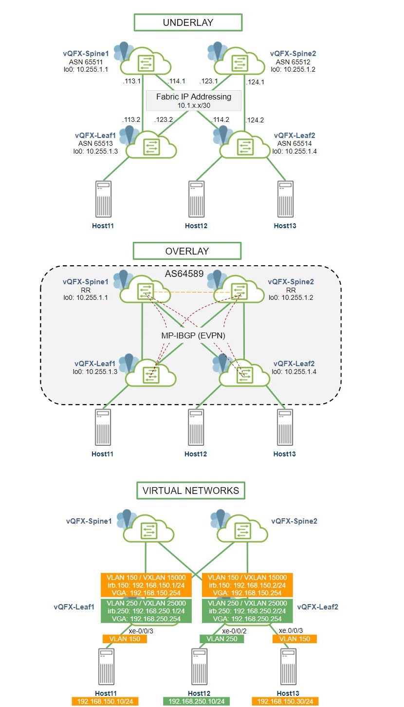
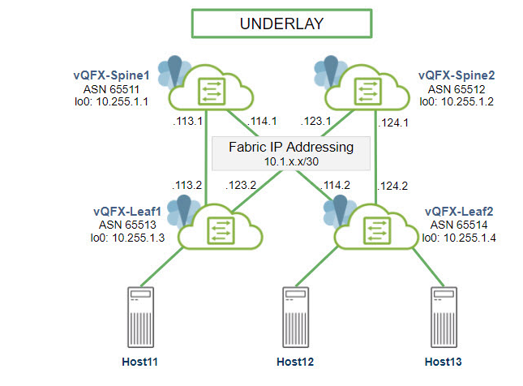
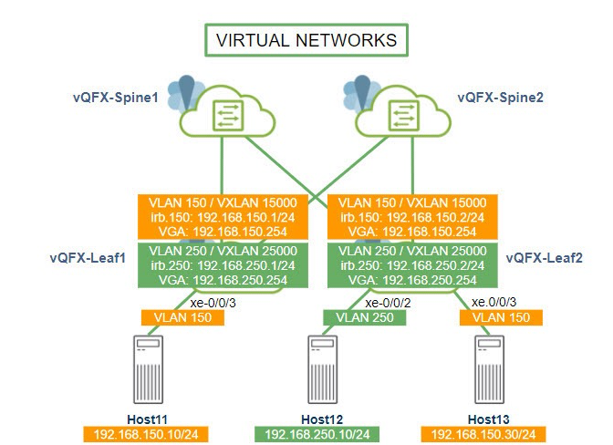

IP Fabric with EVPN-VXLAN
To understand why EVPN-VXLAN, Juniper has created a simplified resource. You can watch the same here.
IP Fabric with EVPN-VXLANLab SetupDescriptionDevices:Configured InterfacesEndpoints (CentOS servers)Configured protocolsIP addressingOverview of the Setupa. Build the Underlayb. Build the Overlayc. Build the EVPN-VXLANBuild the UnderlayUnderlay-Leaf1Underlay-Leaf2Underlay-Spine1Underlay-Spine2Verify UnderlayVerify Underlay-Spine1Verify Underlay-Spine2Verify Underlay-Leaf1Verify Underlay-Leaf2Build the OverlayOverlay-Spine1Overlay-Spine2Overlay-Leaf1Overlay-Leaf2Verify the OverlayVerify Overlay-Spine1Verify Overlay-Spine2Verify Overlay-Leaf1Verify Overlay-Leaf2Verify ConnectivityHost11Host12Host13Leaf1Leaf2EVPN Route Types Type1Type2Type3Type4Type5SummaryLeaf1 default-switch.evpn.0 Leaf1 default-switch.evpn.0 simplifiedLeaf1 EVPN Routes in inet.0Spine1 EVPN Routes in inet.0Leaf2 default-switch.evpn.0Leaf2 default-switch.evpn.0 simplifiedLeaf2 EVPN Routes in inet.0Spine2 EVPN Routes in inet.0Conclusion
Lab Setup
Juniper vLabs provides multiple sandboxes for exploring various features and products of Juniper.
In this post, let us make use of the EVPN-VXLAN sandbox which is available at 🔗 https://jlabs.juniper.net/vlabs/portal/ip-fabric-evpn-vxlan/

Description
Devices:
4 vQFXs running Junos OS 18.1R3-S5 Each virtualized on a CentOS server 3 Endpoints HealthBot 3.2.0 on Ubuntu
Configured Interfaces
vQFX xe interfaces for in-band traffic irb interfaces with virtual-gateway-addresses (VGAs) lo0 as loopback interface em0 interface for out-of-band management
Endpoints (CentOS servers)
eth0 interface for out-of-band management eth1/2 interfaces for in-band traffic
Configured protocols
EBGP for underlay; MP-IBGP (EVPN) for overlay; VXLAN for data encapsulation
IP addressing
In-band underlay – 10.1.x.x/30 In-band overlay - 192.168.x.x/24 Out-of-band - 100.123.x.x/16
Overview of the Setup
These are the broad steps in building the IP Fabric with EVPN-VXLAN.
a. Build the Underlay
- Configure a loopback export policy
- Configure the EBGP Session
- Configure host facing interfaces
b. Build the Overlay
- Configure routing options (autonomous-system)
- Configure the IBGP Session
c. Build the EVPN-VXLAN
- Configure the switch and routing options (router-id)
- Configure EVPN protocol
Build the Underlay

Underlay-Leaf1
xxxxxxxxxx{master:0}jcluser@DC2-Leaf1> show configuration interfaces xe-0/0/0 { description "to spine1"; mtu 9192; unit 0 { family inet { address 10.1.113.2/30; } }}xe-0/0/1 { description "to spine2"; mtu 9192; unit 0 { family inet { address 10.1.123.2/30; } }}xe-0/0/3 { unit 0 { family ethernet-switching { vlan { members VNI_15000; } } }}em0 { unit 0 { family inet { address 100.123.13.213/16; } }}em1 { unit 0 { family inet { address 169.254.0.2/24; } }}irb { unit 150 { proxy-macip-advertisement; virtual-gateway-accept-data; family inet { address 192.168.150.1/24 { preferred; virtual-gateway-address 192.168.150.254; } } } unit 250 { proxy-macip-advertisement; virtual-gateway-accept-data; family inet { address 192.168.250.1/24 { preferred; virtual-gateway-address 192.168.250.254; } } }}lo0 { unit 0 { family inet { address 10.255.1.3/32; } }}xxxxxxxxxx{master:0}jcluser@DC2-Leaf1> show configuration protocols bgp group IPCLOS_eBGP type external;mtu-discovery;import IPCLOS_BGP_IMP;export IPCLOS_BGP_EXP;local-as 65513;multipath { multiple-as;}neighbor 10.1.113.1 { description "EBGP peering to Spine1"; peer-as 65511;}neighbor 10.1.123.1 { description "EBGP peering to Spine2"; peer-as 65512;}
xxxxxxxxxx{master:0}jcluser@DC2-Leaf1> show configuration policy-options policy-statement IPCLOS_BGP_EXP { term loopback { from protocol [ direct bgp ]; then accept; } term default { then reject; }}policy-statement IPCLOS_BGP_IMP { term loopback { from protocol [ bgp direct ]; then accept; } term default { then reject; }}policy-statement PFE-LB { then { load-balance per-packet; }}
Underlay-Leaf2
xxxxxxxxxx{master:0}jcluser@DC2-Leaf2> show configuration interfaces xe-0/0/0 { description "to spine1"; mtu 9192; unit 0 { family inet { address 10.1.114.2/30; } }}xe-0/0/1 { description "to spine2"; mtu 9192; unit 0 { family inet { address 10.1.124.2/30; } }}xe-0/0/2 { unit 0 { family ethernet-switching { vlan { members VNI_25000; } } }}xe-0/0/3 { unit 0 { family ethernet-switching { vlan { members VNI_15000; } } }}em0 { unit 0 { family inet { address 100.123.13.214/16; } }}em1 { unit 0 { family inet { address 169.254.0.2/24; } }}irb { unit 150 { proxy-macip-advertisement; virtual-gateway-accept-data; family inet { address 192.168.150.2/24 { preferred; virtual-gateway-address 192.168.150.254; } } } unit 250 { proxy-macip-advertisement; virtual-gateway-accept-data; family inet { address 192.168.250.2/24 { preferred; virtual-gateway-address 192.168.250.254; } } }}lo0 { unit 0 { family inet { address 10.255.1.4/32; } }}xxxxxxxxxx{master:0}jcluser@DC2-Leaf2> show configuration protocols bgp group IPCLOS_eBGP type external;mtu-discovery;import IPCLOS_BGP_IMP;export IPCLOS_BGP_EXP;local-as 65514;multipath { multiple-as;}neighbor 10.1.114.1 { description "EBGP peering to Spine1"; peer-as 65511;}neighbor 10.1.124.1 { description "EBGP peering to Spine2"; peer-as 65512;}xxxxxxxxxxjcluser@DC2-Leaf2> show configuration policy-options policy-statement IPCLOS_BGP_EXP { term loopback { from protocol [ direct bgp ]; then accept; } term default { then reject; }}policy-statement IPCLOS_BGP_IMP { term loopback { from protocol [ bgp direct ]; then accept; } term default { then reject; }}policy-statement PFE-LB { then { load-balance per-packet; }}
Underlay-Spine1
xxxxxxxxxx{master:0}jcluser@DC2-Spine1> show configuration interfaces xe-0/0/0 { description "to leaf1"; mtu 9192; unit 0 { family inet { address 10.1.113.1/30; } }}xe-0/0/1 { description "to leaf2"; mtu 9192; unit 0 { family inet { address 10.1.114.1/30; } }}xe-0/0/2 { unit 0;}xe-0/0/3 { unit 0;}xe-0/0/4 { unit 0;}xe-0/0/5 { unit 0;}xe-0/0/6 { unit 0;}xe-0/0/7 { unit 0;}em0 { unit 0 { family inet { address 100.123.13.211/16; } }}em1 { unit 0 { family inet { address 169.254.0.2/24; } }}lo0 { unit 0 { family inet { address 10.255.1.1/32; } }}
xxxxxxxxxx{master:0}jcluser@DC2-Spine1> show configuration protocols bgp group IPCLOS_eBGP type external;mtu-discovery;import IPCLOS_BGP_IMP;export IPCLOS_BGP_EXP;local-as 65511;multipath { multiple-as;}neighbor 10.1.113.2 { description "EBGP peering to Leaf1"; peer-as 65513;}neighbor 10.1.114.2 { description "EBGP peering to Leaf2"; peer-as 65514;}xxxxxxxxxx{master:0}jcluser@DC2-Spine1> show configuration policy-options policy-statement IPCLOS_BGP_EXP { term loopback { from protocol [ direct bgp ]; then accept; } term default { then reject; }}policy-statement IPCLOS_BGP_IMP { term loopback { from protocol [ bgp direct ]; then accept; } term default { then reject; }}policy-statement PFE-LB { then { load-balance per-packet; }}Underlay-Spine2
xxxxxxxxxx{master:0}jcluser@DC2-Spine2> show configuration interfaces xe-0/0/0 { description "to leaf1"; mtu 9192; unit 0 { family inet { address 10.1.123.1/30; } }}xe-0/0/1 { description "to leaf2"; mtu 9192; unit 0 { family inet { address 10.1.124.1/30; } }}xe-0/0/2 { unit 0;}xe-0/0/3 { unit 0;}xe-0/0/4 { unit 0;}xe-0/0/5 { unit 0;}xe-0/0/6 { unit 0;}xe-0/0/7 { unit 0;}em0 { unit 0 { family inet { address 100.123.13.212/16; } }}em1 { unit 0 { family inet { address 169.254.0.2/24; } }}lo0 { unit 0 { family inet { address 10.255.1.2/32; } }}
xxxxxxxxxx{master:0}jcluser@DC2-Spine2> show configuration protocols bgp group IPCLOS_eBGP type external;mtu-discovery;import IPCLOS_BGP_IMP;export IPCLOS_BGP_EXP;local-as 65512;multipath { multiple-as;}neighbor 10.1.123.2 { description "EBGP peering to Leaf1"; peer-as 65513;}neighbor 10.1.124.2 { description "EBGP peering to Leaf2"; peer-as 65514;}
xxxxxxxxxx{master:0}jcluser@DC2-Spine2> show configuration policy-options policy-statement IPCLOS_BGP_EXP { term loopback { from protocol [ direct bgp ]; then accept; } term default { then reject; }}policy-statement IPCLOS_BGP_IMP { term loopback { from protocol [ bgp direct ]; then accept; } term default { then reject; }}policy-statement PFE-LB { then { load-balance per-packet; }}Verify Underlay
Verify Underlay-Spine1
xxxxxxxxxx
{master:0}jcluser@DC2-Spine1> show bgp neighbor 10.1.113.2 Peer: 10.1.113.2+64533 AS 65513 Local: 10.1.113.1+179 AS 65511 Description: EBGP peering to Leaf1 Group: IPCLOS_eBGP Routing-Instance: master Forwarding routing-instance: master Type: External State: Established Flags: <Sync> Last State: OpenConfirm Last Event: RecvKeepAlive Last Error: None Export: [ IPCLOS_BGP_EXP ] Import: [ IPCLOS_BGP_IMP ] Options: <Preference LogUpDown PeerAS Multipath LocalAS Refresh> Options: <MtuDiscovery MultipathAs> Holdtime: 90 Preference: 170 Local AS: 65511 Local System AS: 64589 Number of flaps: 0 Peer ID: 10.255.1.3 Local ID: 10.255.1.1 Active Holdtime: 90 Keepalive Interval: 30 Group index: 0 Peer index: 0 SNMP index: 0 I/O Session Thread: bgpio-0 State: Enabled BFD: disabled, down Local Interface: xe-0/0/0.0 NLRI for restart configured on peer: inet-unicast NLRI advertised by peer: inet-unicast NLRI for this session: inet-unicast Peer supports Refresh capability (2) Stale routes from peer are kept for: 300 Peer does not support Restarter functionality Restart flag received from the peer: Notification NLRI that restart is negotiated for: inet-unicast NLRI of received end-of-rib markers: inet-unicast NLRI of all end-of-rib markers sent: inet-unicast Peer does not support LLGR Restarter functionality Peer supports 4 byte AS extension (peer-as 65513) Peer does not support Addpath Table inet.0 Bit: 30000 RIB State: BGP restart is complete Send state: in sync Active prefixes: 5 Received prefixes: 10 Accepted prefixes: 10 Suppressed due to damping: 0 Advertised prefixes: 7 Last traffic (seconds): Received 12 Sent 11 Checked 2294 Input messages: Total 91 Updates 5 Refreshes 0 Octets 1920 Output messages: Total 87 Updates 2 Refreshes 0 Octets 1741 Output Queue[2]: 0 (inet.0, inet-unicast)
xxxxxxxxxx{master:0}jcluser@DC2-Spine1> show route receive-protocol bgp 10.1.113.2
inet.0: 17 destinations, 31 routes (17 active, 0 holddown, 0 hidden) Prefix Nexthop MED Lclpref AS path 10.1.113.0/30 10.1.113.2 65513 I* 10.1.123.0/30 10.1.113.2 65513 I 10.1.124.0/30 10.1.113.2 65513 65512 I* 10.255.1.2/32 10.1.113.2 65513 65512 I* 10.255.1.3/32 10.1.113.2 65513 I 10.255.1.4/32 10.1.113.2 65513 65512 65514 I 100.123.0.0/16 10.1.113.2 65513 I 169.254.0.0/24 10.1.113.2 65513 I* 192.168.150.0/24 10.1.113.2 65513 I* 192.168.250.0/24 10.1.113.2 65513 I
inet6.0: 2 destinations, 2 routes (2 active, 0 holddown, 0 hidden)xxxxxxxxxx
{master:0}jcluser@DC2-Spine1> show route advertising-protocol bgp 10.1.113.2
inet.0: 17 destinations, 31 routes (17 active, 0 holddown, 0 hidden) Prefix Nexthop MED Lclpref AS path* 10.1.113.0/30 Self I* 10.1.114.0/30 Self I* 10.1.124.0/30 Self 65514 I* 10.255.1.1/32 Self I* 10.255.1.4/32 Self 65514 I* 100.123.0.0/16 Self I* 169.254.0.0/24 Self Ixxxxxxxxxx{master:0}jcluser@DC2-Spine1> show bgp neighbor 10.1.114.2 Peer: 10.1.114.2+56263 AS 65514 Local: 10.1.114.1+179 AS 65511 Description: EBGP peering to Leaf2 Group: IPCLOS_eBGP Routing-Instance: master Forwarding routing-instance: master Type: External State: Established Flags: <Sync> Last State: OpenConfirm Last Event: RecvKeepAlive Last Error: None Export: [ IPCLOS_BGP_EXP ] Import: [ IPCLOS_BGP_IMP ] Options: <Preference LogUpDown PeerAS Multipath LocalAS Refresh> Options: <MtuDiscovery MultipathAs> Holdtime: 90 Preference: 170 Local AS: 65511 Local System AS: 64589 Number of flaps: 0 Peer ID: 10.255.1.4 Local ID: 10.255.1.1 Active Holdtime: 90 Keepalive Interval: 30 Group index: 0 Peer index: 1 SNMP index: 1 I/O Session Thread: bgpio-0 State: Enabled BFD: disabled, down Local Interface: xe-0/0/1.0 NLRI for restart configured on peer: inet-unicast NLRI advertised by peer: inet-unicast NLRI for this session: inet-unicast Peer supports Refresh capability (2) Stale routes from peer are kept for: 300 Peer does not support Restarter functionality Restart flag received from the peer: Notification NLRI that restart is negotiated for: inet-unicast NLRI of received end-of-rib markers: inet-unicast NLRI of all end-of-rib markers sent: inet-unicast Peer does not support LLGR Restarter functionality Peer supports 4 byte AS extension (peer-as 65514) Peer does not support Addpath Table inet.0 Bit: 30000 RIB State: BGP restart is complete Send state: in sync Active prefixes: 5 Received prefixes: 10 Accepted prefixes: 10 Suppressed due to damping: 0 Advertised prefixes: 10 Last traffic (seconds): Received 17 Sent 2 Checked 2300 Input messages: Total 91 Updates 5 Refreshes 0 Octets 1920 Output messages: Total 90 Updates 5 Refreshes 0 Octets 1903 Output Queue[2]: 0 (inet.0, inet-unicast)
xxxxxxxxxx{master:0}jcluser@DC2-Spine1> show route receive-protocol bgp 10.1.114.2
inet.0: 17 destinations, 31 routes (17 active, 0 holddown, 0 hidden) Prefix Nexthop MED Lclpref AS path 10.1.114.0/30 10.1.114.2 65514 I 10.1.123.0/30 10.1.114.2 65514 65512 I* 10.1.124.0/30 10.1.114.2 65514 I 10.255.1.2/32 10.1.114.2 65514 65512 I 10.255.1.3/32 10.1.114.2 65514 65512 65513 I* 10.255.1.4/32 10.1.114.2 65514 I 100.123.0.0/16 10.1.114.2 65514 I 169.254.0.0/24 10.1.114.2 65514 I 192.168.150.0/24 10.1.114.2 65514 I 192.168.250.0/24 10.1.114.2 65514 I
inet6.0: 2 destinations, 2 routes (2 active, 0 holddown, 0 hidden)xxxxxxxxxx{master:0}jcluser@DC2-Spine1> show route advertising-protocol bgp 10.1.114.2
inet.0: 17 destinations, 31 routes (17 active, 0 holddown, 0 hidden) Prefix Nexthop MED Lclpref AS path* 10.1.113.0/30 Self I* 10.1.114.0/30 Self I* 10.1.123.0/30 Self 65513 I* 10.255.1.1/32 Self I* 10.255.1.2/32 Self 65513 65512 I* 10.255.1.3/32 Self 65513 I* 100.123.0.0/16 Self I* 169.254.0.0/24 Self I* 192.168.150.0/24 Self 65513 I* 192.168.250.0/24 Self 65513 IVerify Underlay-Spine2
xxxxxxxxxx{master:0}jcluser@DC2-Spine2> show bgp neighbor 10.1.123.2 Peer: 10.1.123.2+51073 AS 65513 Local: 10.1.123.1+179 AS 65512 Description: EBGP peering to Leaf1 Group: IPCLOS_eBGP Routing-Instance: master Forwarding routing-instance: master Type: External State: Established Flags: <Sync> Last State: OpenConfirm Last Event: RecvKeepAlive Last Error: None Export: [ IPCLOS_BGP_EXP ] Import: [ IPCLOS_BGP_IMP ] Options: <Preference LogUpDown PeerAS Multipath LocalAS Refresh> Options: <MtuDiscovery MultipathAs> Holdtime: 90 Preference: 170 Local AS: 65512 Local System AS: 64589 Number of flaps: 0 Peer ID: 10.255.1.3 Local ID: 10.255.1.2 Active Holdtime: 90 Keepalive Interval: 30 Group index: 0 Peer index: 1 SNMP index: 0 I/O Session Thread: bgpio-0 State: Enabled BFD: disabled, down Local Interface: xe-0/0/0.0 NLRI for restart configured on peer: inet-unicast NLRI advertised by peer: inet-unicast NLRI for this session: inet-unicast Peer supports Refresh capability (2) Stale routes from peer are kept for: 300 Peer does not support Restarter functionality Restart flag received from the peer: Notification NLRI that restart is negotiated for: inet-unicast NLRI of received end-of-rib markers: inet-unicast NLRI of all end-of-rib markers sent: inet-unicast Peer does not support LLGR Restarter functionality Peer supports 4 byte AS extension (peer-as 65513) Peer does not support Addpath Table inet.0 Bit: 30000 RIB State: BGP restart is complete Send state: in sync Active prefixes: 5 Received prefixes: 9 Accepted prefixes: 9 Suppressed due to damping: 0 Advertised prefixes: 9 Last traffic (seconds): Received 29 Sent 20 Checked 3183 Input messages: Total 122 Updates 4 Refreshes 0 Octets 2482 Output messages: Total 119 Updates 2 Refreshes 0 Octets 2357 Output Queue[2]: 0 (inet.0, inet-unicast)
xxxxxxxxxx{master:0}jcluser@DC2-Spine2> show route advertising-protocol bgp 10.1.123.2
inet.0: 17 destinations, 29 routes (17 active, 0 holddown, 0 hidden) Prefix Nexthop MED Lclpref AS path* 10.1.114.0/30 Self 65514 I* 10.1.123.0/30 Self I* 10.1.124.0/30 Self I* 10.255.1.2/32 Self I* 10.255.1.4/32 Self 65514 I* 100.123.0.0/16 Self I* 169.254.0.0/24 Self I* 192.168.150.0/24 Self 65514 I* 192.168.250.0/24 Self 65514 Ixxxxxxxxxx{master:0}jcluser@DC2-Spine2> show route receive-protocol bgp 10.1.123.2
inet.0: 17 destinations, 29 routes (17 active, 0 holddown, 0 hidden) Prefix Nexthop MED Lclpref AS path* 10.1.113.0/30 10.1.123.2 65513 I 10.1.114.0/30 10.1.123.2 65513 65511 I 10.1.123.0/30 10.1.123.2 65513 I* 10.255.1.1/32 10.1.123.2 65513 65511 I* 10.255.1.3/32 10.1.123.2 65513 I 100.123.0.0/16 10.1.123.2 65513 I 169.254.0.0/24 10.1.123.2 65513 I 192.168.150.0/24 10.1.123.2 65513 I 192.168.250.0/24 10.1.123.2 65513 I
xxxxxxxxxx{master:0}jcluser@DC2-Spine2> show bgp neighbor 10.1.124.2 Peer: 10.1.124.2+65168 AS 65514 Local: 10.1.124.1+179 AS 65512 Description: EBGP peering to Leaf2 Group: IPCLOS_eBGP Routing-Instance: master Forwarding routing-instance: master Type: External State: Established Flags: <Sync> Last State: OpenConfirm Last Event: RecvKeepAlive Last Error: None Export: [ IPCLOS_BGP_EXP ] Import: [ IPCLOS_BGP_IMP ] Options: <Preference LogUpDown PeerAS Multipath LocalAS Refresh> Options: <MtuDiscovery MultipathAs> Holdtime: 90 Preference: 170 Local AS: 65512 Local System AS: 64589 Number of flaps: 0 Peer ID: 10.255.1.4 Local ID: 10.255.1.2 Active Holdtime: 90 Keepalive Interval: 30 Group index: 0 Peer index: 0 SNMP index: 1 I/O Session Thread: bgpio-0 State: Enabled BFD: disabled, down Local Interface: xe-0/0/1.0 NLRI for restart configured on peer: inet-unicast NLRI advertised by peer: inet-unicast NLRI for this session: inet-unicast Peer supports Refresh capability (2) Stale routes from peer are kept for: 300 Peer does not support Restarter functionality Restart flag received from the peer: Notification NLRI that restart is negotiated for: inet-unicast NLRI of received end-of-rib markers: inet-unicast NLRI of all end-of-rib markers sent: inet-unicast Peer does not support LLGR Restarter functionality Peer supports 4 byte AS extension (peer-as 65514) Peer does not support Addpath Table inet.0 Bit: 30000 RIB State: BGP restart is complete Send state: in sync Active prefixes: 5 Received prefixes: 9 Accepted prefixes: 9 Suppressed due to damping: 0 Advertised prefixes: 8 Last traffic (seconds): Received 16 Sent 10 Checked 3256 Input messages: Total 124 Updates 3 Refreshes 0 Octets 2496 Output messages: Total 123 Updates 3 Refreshes 0 Octets 2462 Output Queue[2]: 0 (inet.0, inet-unicast)
xxxxxxxxxx{master:0}jcluser@DC2-Spine2> show route receive-protocol bgp 10.1.124.2
inet.0: 17 destinations, 29 routes (17 active, 0 holddown, 0 hidden) Prefix Nexthop MED Lclpref AS path 10.1.113.0/30 10.1.124.2 65514 65511 I* 10.1.114.0/30 10.1.124.2 65514 I 10.1.124.0/30 10.1.124.2 65514 I 10.255.1.1/32 10.1.124.2 65514 65511 I* 10.255.1.4/32 10.1.124.2 65514 I 100.123.0.0/16 10.1.124.2 65514 I 169.254.0.0/24 10.1.124.2 65514 I* 192.168.150.0/24 10.1.124.2 65514 I* 192.168.250.0/24 10.1.124.2 65514 Ixxxxxxxxxx{master:0}jcluser@DC2-Spine2> show route advertising-protocol bgp 10.1.124.2
inet.0: 17 destinations, 29 routes (17 active, 0 holddown, 0 hidden) Prefix Nexthop MED Lclpref AS path* 10.1.113.0/30 Self 65513 I* 10.1.123.0/30 Self I* 10.1.124.0/30 Self I* 10.255.1.1/32 Self 65513 65511 I* 10.255.1.2/32 Self I* 10.255.1.3/32 Self 65513 I* 100.123.0.0/16 Self I* 169.254.0.0/24 Self IVerify Underlay-Leaf1
xxxxxxxxxx{master:0}jcluser@DC2-Leaf1> show bgp neighbor 10.1.113.1 Peer: 10.1.113.1+179 AS 65511 Local: 10.1.113.2+64533 AS 65513 Description: EBGP peering to Spine1 Group: IPCLOS_eBGP Routing-Instance: master Forwarding routing-instance: master Type: External State: Established Flags: <Sync> Last State: OpenConfirm Last Event: RecvKeepAlive Last Error: None Export: [ IPCLOS_BGP_EXP ] Import: [ IPCLOS_BGP_IMP ] Options: <Preference LogUpDown PeerAS Multipath LocalAS Refresh> Options: <MtuDiscovery MultipathAs> Holdtime: 90 Preference: 170 Local AS: 65513 Local System AS: 64589 Number of flaps: 0 Peer ID: 10.255.1.1 Local ID: 10.255.1.3 Active Holdtime: 90 Keepalive Interval: 30 Group index: 0 Peer index: 1 SNMP index: 0 I/O Session Thread: bgpio-0 State: Enabled BFD: disabled, down Local Interface: xe-0/0/0.0 NLRI for restart configured on peer: inet-unicast NLRI advertised by peer: inet-unicast NLRI for this session: inet-unicast Peer supports Refresh capability (2) Stale routes from peer are kept for: 300 Peer does not support Restarter functionality Restart flag received from the peer: Notification NLRI that restart is negotiated for: inet-unicast NLRI of received end-of-rib markers: inet-unicast NLRI of all end-of-rib markers sent: inet-unicast Peer does not support LLGR Restarter functionality Peer supports 4 byte AS extension (peer-as 65511) Peer does not support Addpath Table inet.0 Bit: 30000 RIB State: BGP restart is complete Send state: in sync Active prefixes: 3 Received prefixes: 7 Accepted prefixes: 7 Suppressed due to damping: 0 Advertised prefixes: 10 Last traffic (seconds): Received 1 Sent 1 Checked 2555 Input messages: Total 98 Updates 3 Refreshes 0 Octets 1950 Output messages: Total 100 Updates 4 Refreshes 0 Octets 2047 Output Queue[2]: 0 (inet.0, inet-unicast)xxxxxxxxxx{master:0}jcluser@DC2-Leaf1> show route receive-protocol bgp 10.1.113.1
inet.0: 21 destinations, 33 routes (21 active, 0 holddown, 0 hidden) Prefix Nexthop MED Lclpref AS path 10.1.113.0/30 10.1.113.1 65511 I* 10.1.114.0/30 10.1.113.1 65511 I 10.1.124.0/30 10.1.113.1 65511 65514 I* 10.255.1.1/32 10.1.113.1 65511 I 10.255.1.4/32 10.1.113.1 65511 65514 I 100.123.0.0/16 10.1.113.1 65511 I 169.254.0.0/24 10.1.113.1 65511 Ixxxxxxxxxx{master:0}jcluser@DC2-Leaf1> show route advertising-protocol bgp 10.1.113.1
inet.0: 21 destinations, 33 routes (21 active, 0 holddown, 0 hidden) Prefix Nexthop MED Lclpref AS path* 10.1.113.0/30 Self I* 10.1.123.0/30 Self I* 10.1.124.0/30 Self 65512 I* 10.255.1.2/32 Self 65512 I* 10.255.1.3/32 Self I* 10.255.1.4/32 Self 65512 65514 I* 100.123.0.0/16 Self I* 169.254.0.0/24 Self I* 192.168.150.0/24 Self I* 192.168.250.0/24 Self I
xxxxxxxxxx{master:0}jcluser@DC2-Leaf1> show bgp neighbor 10.1.123.1 Peer: 10.1.123.1+179 AS 65512 Local: 10.1.123.2+51073 AS 65513 Description: EBGP peering to Spine2 Group: IPCLOS_eBGP Routing-Instance: master Forwarding routing-instance: master Type: External State: Established Flags: <Sync> Last State: OpenConfirm Last Event: RecvKeepAlive Last Error: None Export: [ IPCLOS_BGP_EXP ] Import: [ IPCLOS_BGP_IMP ] Options: <Preference LogUpDown PeerAS Multipath LocalAS Refresh> Options: <MtuDiscovery MultipathAs> Holdtime: 90 Preference: 170 Local AS: 65513 Local System AS: 64589 Number of flaps: 0 Peer ID: 10.255.1.2 Local ID: 10.255.1.3 Active Holdtime: 90 Keepalive Interval: 30 Group index: 0 Peer index: 0 SNMP index: 1 I/O Session Thread: bgpio-0 State: Enabled BFD: disabled, down Local Interface: xe-0/0/1.0 NLRI for restart configured on peer: inet-unicast NLRI advertised by peer: inet-unicast NLRI for this session: inet-unicast Peer supports Refresh capability (2) Stale routes from peer are kept for: 300 Peer does not support Restarter functionality Restart flag received from the peer: Notification NLRI that restart is negotiated for: inet-unicast NLRI of received end-of-rib markers: inet-unicast NLRI of all end-of-rib markers sent: inet-unicast Peer does not support LLGR Restarter functionality Peer supports 4 byte AS extension (peer-as 65512) Peer does not support Addpath Table inet.0 Bit: 30000 RIB State: BGP restart is complete Send state: in sync Active prefixes: 3 Received prefixes: 9 Accepted prefixes: 9 Suppressed due to damping: 0 Advertised prefixes: 9 Last traffic (seconds): Received 14 Sent 9 Checked 2695 Input messages: Total 102 Updates 3 Refreshes 0 Octets 2034 Output messages: Total 103 Updates 3 Refreshes 0 Octets 2077 Output Queue[2]: 0 (inet.0, inet-unicast)xxxxxxxxxx{master:0}jcluser@DC2-Leaf1> show route advertising-protocol bgp 10.1.123.1
inet.0: 21 destinations, 33 routes (21 active, 0 holddown, 0 hidden) Prefix Nexthop MED Lclpref AS path* 10.1.113.0/30 Self I* 10.1.114.0/30 Self 65511 I* 10.1.123.0/30 Self I* 10.255.1.1/32 Self 65511 I* 10.255.1.3/32 Self I* 100.123.0.0/16 Self I* 169.254.0.0/24 Self I* 192.168.150.0/24 Self I* 192.168.250.0/24 Self Ixxxxxxxxxx{master:0}jcluser@DC2-Leaf1> show route receive-protocol bgp 10.1.123.1
inet.0: 21 destinations, 33 routes (21 active, 0 holddown, 0 hidden) Prefix Nexthop MED Lclpref AS path 10.1.114.0/30 10.1.123.1 65512 65514 I 10.1.123.0/30 10.1.123.1 65512 I* 10.1.124.0/30 10.1.123.1 65512 I* 10.255.1.2/32 10.1.123.1 65512 I* 10.255.1.4/32 10.1.123.1 65512 65514 I 100.123.0.0/16 10.1.123.1 65512 I 169.254.0.0/24 10.1.123.1 65512 I 192.168.150.0/24 10.1.123.1 65512 65514 I 192.168.250.0/24 10.1.123.1 65512 65514 IVerify Underlay-Leaf2
xxxxxxxxxx{master:0}jcluser@DC2-Leaf2> show bgp neighbor 10.1.114.1 Peer: 10.1.114.1+179 AS 65511 Local: 10.1.114.2+56263 AS 65514 Description: EBGP peering to Spine1 Group: IPCLOS_eBGP Routing-Instance: master Forwarding routing-instance: master Type: External State: Established Flags: <Sync> Last State: OpenConfirm Last Event: RecvKeepAlive Last Error: None Export: [ IPCLOS_BGP_EXP ] Import: [ IPCLOS_BGP_IMP ] Options: <Preference LogUpDown PeerAS Multipath LocalAS Refresh> Options: <MtuDiscovery MultipathAs> Holdtime: 90 Preference: 170 Local AS: 65514 Local System AS: 64589 Number of flaps: 0 Peer ID: 10.255.1.1 Local ID: 10.255.1.4 Active Holdtime: 90 Keepalive Interval: 30 Group index: 0 Peer index: 1 SNMP index: 0 I/O Session Thread: bgpio-0 State: Enabled BFD: disabled, down Local Interface: xe-0/0/0.0 NLRI for restart configured on peer: inet-unicast NLRI advertised by peer: inet-unicast NLRI for this session: inet-unicast Peer supports Refresh capability (2) Stale routes from peer are kept for: 300 Peer does not support Restarter functionality Restart flag received from the peer: Notification NLRI that restart is negotiated for: inet-unicast NLRI of received end-of-rib markers: inet-unicast NLRI of all end-of-rib markers sent: inet-unicast Peer does not support LLGR Restarter functionality Peer supports 4 byte AS extension (peer-as 65511) Peer does not support Addpath Table inet.0 Bit: 30000 RIB State: BGP restart is complete Send state: in sync Active prefixes: 3 Received prefixes: 10 Accepted prefixes: 10 Suppressed due to damping: 0 Advertised prefixes: 10 Last traffic (seconds): Received 5 Sent 23 Checked 2983 Input messages: Total 116 Updates 6 Refreshes 0 Octets 2397 Output messages: Total 115 Updates 4 Refreshes 0 Octets 2332 Output Queue[2]: 0 (inet.0, inet-unicast)xxxxxxxxxx{master:0}jcluser@DC2-Leaf2> show route receive-protocol bgp 10.1.114.1
inet.0: 21 destinations, 35 routes (21 active, 0 holddown, 0 hidden) Prefix Nexthop MED Lclpref AS path* 10.1.113.0/30 10.1.114.1 65511 I 10.1.114.0/30 10.1.114.1 65511 I 10.1.123.0/30 10.1.114.1 65511 65513 I* 10.255.1.1/32 10.1.114.1 65511 I 10.255.1.2/32 10.1.114.1 65511 65513 65512 I 10.255.1.3/32 10.1.114.1 65511 65513 I 100.123.0.0/16 10.1.114.1 65511 I 169.254.0.0/24 10.1.114.1 65511 I 192.168.150.0/24 10.1.114.1 65511 65513 I 192.168.250.0/24 10.1.114.1 65511 65513 I
xxxxxxxxxx{master:0}jcluser@DC2-Leaf2> show route advertising-protocol bgp 10.1.114.1
inet.0: 21 destinations, 35 routes (21 active, 0 holddown, 0 hidden) Prefix Nexthop MED Lclpref AS path* 10.1.114.0/30 Self I* 10.1.123.0/30 Self 65512 I* 10.1.124.0/30 Self I* 10.255.1.2/32 Self 65512 I* 10.255.1.3/32 Self 65512 65513 I* 10.255.1.4/32 Self I* 100.123.0.0/16 Self I* 169.254.0.0/24 Self I* 192.168.150.0/24 Self I* 192.168.250.0/24 Self I
xxxxxxxxxx{master:0}jcluser@DC2-Leaf2> show bgp neighbor 10.1.124.1 Peer: 10.1.124.1+179 AS 65512 Local: 10.1.124.2+65168 AS 65514 Description: EBGP peering to Spine2 Group: IPCLOS_eBGP Routing-Instance: master Forwarding routing-instance: master Type: External State: Established Flags: <Sync> Last State: OpenConfirm Last Event: RecvKeepAlive Last Error: None Export: [ IPCLOS_BGP_EXP ] Import: [ IPCLOS_BGP_IMP ] Options: <Preference LogUpDown PeerAS Multipath LocalAS Refresh> Options: <MtuDiscovery MultipathAs> Holdtime: 90 Preference: 170 Local AS: 65514 Local System AS: 64589 Number of flaps: 0 Peer ID: 10.255.1.2 Local ID: 10.255.1.4 Active Holdtime: 90 Keepalive Interval: 30 Group index: 0 Peer index: 0 SNMP index: 1 I/O Session Thread: bgpio-0 State: Enabled BFD: disabled, down Local Interface: xe-0/0/1.0 NLRI for restart configured on peer: inet-unicast NLRI advertised by peer: inet-unicast NLRI for this session: inet-unicast Peer supports Refresh capability (2) Stale routes from peer are kept for: 300 Peer does not support Restarter functionality Restart flag received from the peer: Notification NLRI that restart is negotiated for: inet-unicast NLRI of received end-of-rib markers: inet-unicast NLRI of all end-of-rib markers sent: inet-unicast Peer does not support LLGR Restarter functionality Peer supports 4 byte AS extension (peer-as 65512) Peer does not support Addpath Table inet.0 Bit: 30000 RIB State: BGP restart is complete Send state: in sync Active prefixes: 3 Received prefixes: 8 Accepted prefixes: 8 Suppressed due to damping: 0 Advertised prefixes: 9 Last traffic (seconds): Received 12 Sent 15 Checked 3086 Input messages: Total 118 Updates 4 Refreshes 0 Octets 2367 Output messages: Total 117 Updates 2 Refreshes 0 Octets 2319 Output Queue[2]: 0 (inet.0, inet-unicast)xxxxxxxxxx{master:0}jcluser@DC2-Leaf2> show route receive-protocol bgp 10.1.124.1
inet.0: 21 destinations, 35 routes (21 active, 0 holddown, 0 hidden) Prefix Nexthop MED Lclpref AS path 10.1.113.0/30 10.1.124.1 65512 65513 I* 10.1.123.0/30 10.1.124.1 65512 I 10.1.124.0/30 10.1.124.1 65512 I 10.255.1.1/32 10.1.124.1 65512 65513 65511 I* 10.255.1.2/32 10.1.124.1 65512 I* 10.255.1.3/32 10.1.124.1 65512 65513 I 100.123.0.0/16 10.1.124.1 65512 I 169.254.0.0/24 10.1.124.1 65512 I
xxxxxxxxxx{master:0}jcluser@DC2-Leaf2> show route advertising-protocol bgp 10.1.124.1
inet.0: 21 destinations, 35 routes (21 active, 0 holddown, 0 hidden) Prefix Nexthop MED Lclpref AS path* 10.1.113.0/30 Self 65511 I* 10.1.114.0/30 Self I* 10.1.124.0/30 Self I* 10.255.1.1/32 Self 65511 I* 10.255.1.4/32 Self I* 100.123.0.0/16 Self I* 169.254.0.0/24 Self I* 192.168.150.0/24 Self I* 192.168.250.0/24 Self I
{master:0}Build the Overlay

Overlay-Spine1
xxxxxxxxxx{master:0}jcluser@DC2-Spine1> show configuration routing-options autonomous-system 64589;
xxxxxxxxxx{master:0}jcluser@DC2-Spine1> show configuration protocols bgp group OVERLAY type internal;local-address 10.255.1.1;family evpn { signaling;}cluster 10.255.1.10;multipath;neighbor 10.255.1.3 { description "IBGP/overlay peering to Leaf1";}neighbor 10.255.1.4 { description "IBGP/overlay peering to Leaf2";}
xxxxxxxxxx{master:0}jcluser@DC2-Spine1> show configuration protocols bgp group OVERLAY_RR_MESH type internal;local-address 10.255.1.1;family evpn { signaling;}neighbor 10.255.1.2 { description "IBGP/overlay peering to Spine2";}
xxxxxxxxxx{master:0}jcluser@DC2-Spine1> show configuration routing-options static { route 100.123.0.0/16 next-hop 100.123.0.1; route 0.0.0.0/0 next-hop 100.123.0.1;}router-id 10.255.1.1;autonomous-system 64589;forwarding-table { export PFE-LB; ecmp-fast-reroute;}
xxxxxxxxxx{master:0}jcluser@DC2-Spine1> show configuration switch-options xxxxxxxxxx{master:0}jcluser@DC2-Spine1> show configuration protocols evpn
xxxxxxxxxx{master:0}jcluser@DC2-Spine1> show configuration vlans default { vlan-id 1;}Overlay-Spine2
xxxxxxxxxx{master:0}jcluser@DC2-Spine2> show configuration routing-options autonomous-system 64589;xxxxxxxxxx{master:0}jcluser@DC2-Spine2> show configuration protocols bgp group OVERLAY type internal;local-address 10.255.1.2;family evpn { signaling;}cluster 10.255.1.10;multipath;neighbor 10.255.1.3 { description "IBGP/overlay peering to Leaf1";}neighbor 10.255.1.4 { description "IBGP/overlay peering to Leaf2";}xxxxxxxxxx{master:0}jcluser@DC2-Spine2> show configuration protocols bgp group OVERLAY_RR_MESH type internal;local-address 10.255.1.2;family evpn { signaling;}neighbor 10.255.1.1 { description "IBGP/overlay peering to Spine1";}
xxxxxxxxxx{master:0}jcluser@DC2-Spine2> show configuration routing-options static { route 100.123.0.0/16 next-hop 100.123.0.1; route 0.0.0.0/0 next-hop 100.123.0.1;}router-id 10.255.1.2;autonomous-system 64589;forwarding-table { export PFE-LB; ecmp-fast-reroute;}xxxxxxxxxx{master:0}jcluser@DC2-Spine2> show configuration switch-options
xxxxxxxxxx{master:0}jcluser@DC2-Spine2> show configuration protocols evpn
xxxxxxxxxx{master:0}jcluser@DC2-Spine2> show configuration vlans default { vlan-id 1;}Overlay-Leaf1
xxxxxxxxxx{master:0}jcluser@DC2-Leaf1> show configuration routing-options autonomous-system 64589;xxxxxxxxxx{master:0}jcluser@DC2-Leaf1> show configuration protocols bgp group OVERLAY type internal;local-address 10.255.1.3;family evpn { signaling;}neighbor 10.255.1.1 { description "IBGP/overlay peering to Spine1";}neighbor 10.255.1.2 { description "IBGP/overlay peering to Spine2";}xxxxxxxxxx{master:0}jcluser@DC2-Leaf1> show configuration routing-options static { route 100.123.0.0/16 next-hop 100.123.0.1; route 0.0.0.0/0 next-hop 100.123.0.1;}router-id 10.255.1.3;autonomous-system 64589;forwarding-table { export PFE-LB; ecmp-fast-reroute;}
xxxxxxxxxx{master:0}jcluser@DC2-Leaf1> show configuration switch-options vtep-source-interface lo0.0;route-distinguisher 10.255.1.3:1;vrf-target { target:64589:1111; auto;}xxxxxxxxxx{master:0}jcluser@DC2-Leaf1> show configuration protocols evpn encapsulation vxlan;default-gateway no-gateway-community;extended-vni-list all;xxxxxxxxxx{master:0}jcluser@DC2-Leaf1> show configuration vlans VNI_15000 { vlan-id 150; l3-interface irb.150; vxlan { vni 15000; }}VNI_25000 { vlan-id 250; l3-interface irb.250; vxlan { vni 25000; }}default { vlan-id 1;}Overlay-Leaf2
xxxxxxxxxx{master:0}jcluser@DC2-Leaf2> show configuration routing-options autonomous-system 64589;xxxxxxxxxx{master:0}jcluser@DC2-Leaf2> show configuration protocols bgp group OVERLAY type internal;local-address 10.255.1.4;family evpn { signaling;}neighbor 10.255.1.1 { description "IBGP/overlay peering to Spine1";}neighbor 10.255.1.2 { description "IBGP/overlay peering to Spine2";}
xxxxxxxxxx{master:0}jcluser@DC2-Leaf2> show configuration routing-options static { route 100.123.0.0/16 next-hop 100.123.0.1; route 0.0.0.0/0 next-hop 100.123.0.1;}router-id 10.255.1.4;autonomous-system 64589;forwarding-table { export PFE-LB; ecmp-fast-reroute;}xxxxxxxxxx{master:0}jcluser@DC2-Leaf2> show configuration switch-options vtep-source-interface lo0.0;route-distinguisher 10.255.1.4:1;vrf-target { target:64589:1111; auto;}xxxxxxxxxx{master:0}jcluser@DC2-Leaf2> show configuration protocols evpn encapsulation vxlan;default-gateway no-gateway-community;extended-vni-list all;xxxxxxxxxx{master:0}jcluser@DC2-Leaf2> show configuration vlans VNI_15000 { vlan-id 150; l3-interface irb.150; vxlan { vni 15000; }}VNI_25000 { vlan-id 250; l3-interface irb.250; vxlan { vni 25000; }}default { vlan-id 1;}Verify the Overlay
Verify Overlay-Spine1
xxxxxxxxxx{master:0}jcluser@DC2-Spine1> show bgp summary Groups: 3 Peers: 5 Down peers: 0Table Tot Paths Act Paths Suppressed History Damp State Pendingbgp.evpn.0 24 24 0 0 0 0inet.0 20 10 0 0 0 0Peer AS InPkt OutPkt OutQ Flaps Last Up/Dwn State|#Active/Received/Accepted/Damped...10.1.113.2 65513 340 337 0 0 2:31:24 Establ inet.0: 5/10/10/010.1.114.2 65514 340 339 0 0 2:31:24 Establ inet.0: 5/10/10/010.255.1.2 64589 345 344 0 0 2:31:22 Establ bgp.evpn.0: 0/0/0/010.255.1.3 64589 341 339 0 0 2:31:20 Establ bgp.evpn.0: 12/12/12/010.255.1.4 64589 340 339 0 0 2:31:20 Establ bgp.evpn.0: 12/12/12/0xxxxxxxxxx{master:0}jcluser@DC2-Spine1> show route summary Autonomous system number: 64589Router ID: 10.255.1.1
inet.0: 17 destinations, 31 routes (17 active, 0 holddown, 0 hidden) Direct: 5 routes, 5 active Local: 4 routes, 4 active BGP: 20 routes, 7 active Static: 2 routes, 1 active
inet6.0: 2 destinations, 2 routes (2 active, 0 holddown, 0 hidden) Direct: 1 routes, 1 active INET6: 1 routes, 1 active
bgp.evpn.0: 24 destinations, 24 routes (24 active, 0 holddown, 0 hidden) BGP: 24 routes, 24 activexxxxxxxxxx{master:0}jcluser@DC2-Spine1> show bgp neighbor 10.255.1.2 Peer: 10.255.1.2+179 AS 64589 Local: 10.255.1.1+51357 AS 64589 Description: IBGP/overlay peering to Spine2 Group: OVERLAY_RR_MESH Routing-Instance: master Forwarding routing-instance: master Type: Internal State: Established Flags: <Sync> Last State: OpenConfirm Last Event: RecvKeepAlive Last Error: None Options: <Preference LocalAddress LogUpDown AddressFamily Rib-group Refresh> Address families configured: evpn Local Address: 10.255.1.1 Holdtime: 90 Preference: 170 Number of flaps: 0 Peer ID: 10.255.1.2 Local ID: 10.255.1.1 Active Holdtime: 90 Keepalive Interval: 30 Group index: 2 Peer index: 0 SNMP index: 4 I/O Session Thread: bgpio-0 State: Enabled BFD: disabled, down NLRI for restart configured on peer: evpn NLRI advertised by peer: evpn NLRI for this session: evpn Peer supports Refresh capability (2) Stale routes from peer are kept for: 300 Peer does not support Restarter functionality Restart flag received from the peer: Notification NLRI that restart is negotiated for: evpn NLRI of received end-of-rib markers: evpn NLRI of all end-of-rib markers sent: evpn Peer does not support LLGR Restarter functionality Peer supports 4 byte AS extension (peer-as 64589) Peer does not support Addpath Table bgp.evpn.0 Bit: 20000 RIB State: BGP restart is complete RIB State: VPN restart is complete Send state: in sync Active prefixes: 0 Received prefixes: 0 Accepted prefixes: 0 Suppressed due to damping: 0 Advertised prefixes: 24 Last traffic (seconds): Received 23 Sent 19 Checked 9245 Input messages: Total 350 Updates 11 Refreshes 0 Octets 8141 Output messages: Total 349 Updates 10 Refreshes 0 Octets 8122 Output Queue[1]: 0 (bgp.evpn.0, evpn)
xxxxxxxxxx{master:0}jcluser@DC2-Spine1> show route advertising-protocol bgp 10.255.1.2
bgp.evpn.0: 24 destinations, 24 routes (24 active, 0 holddown, 0 hidden) Prefix Nexthop MED Lclpref AS path 1:10.255.1.3:0::050000fc4d00003a9800::FFFF:FFFF/192 AD/ESI * 10.255.1.3 100 I 1:10.255.1.3:0::050000fc4d000061a800::FFFF:FFFF/192 AD/ESI * 10.255.1.3 100 I 1:10.255.1.4:0::050000fc4d00003a9800::FFFF:FFFF/192 AD/ESI * 10.255.1.4 100 I 1:10.255.1.4:0::050000fc4d000061a800::FFFF:FFFF/192 AD/ESI * 10.255.1.4 100 I 2:10.255.1.3:1::15000::00:00:5e:00:01:01/304 MAC/IP * 10.255.1.3 100 I 2:10.255.1.3:1::15000::02:05:86:71:62:00/304 MAC/IP * 10.255.1.3 100 I 2:10.255.1.3:1::25000::00:00:5e:00:01:01/304 MAC/IP * 10.255.1.3 100 I 2:10.255.1.3:1::25000::02:05:86:71:62:00/304 MAC/IP * 10.255.1.3 100 I 2:10.255.1.4:1::15000::00:00:5e:00:01:01/304 MAC/IP * 10.255.1.4 100 I 2:10.255.1.4:1::15000::02:05:86:71:e7:00/304 MAC/IP * 10.255.1.4 100 I 2:10.255.1.4:1::25000::00:00:5e:00:01:01/304 MAC/IP * 10.255.1.4 100 I 2:10.255.1.4:1::25000::02:05:86:71:e7:00/304 MAC/IP * 10.255.1.4 100 I 2:10.255.1.3:1::15000::00:00:5e:00:01:01::192.168.150.254/304 MAC/IP * 10.255.1.3 100 I 2:10.255.1.3:1::15000::02:05:86:71:62:00::192.168.150.1/304 MAC/IP * 10.255.1.3 100 I 2:10.255.1.3:1::25000::00:00:5e:00:01:01::192.168.250.254/304 MAC/IP * 10.255.1.3 100 I 2:10.255.1.3:1::25000::02:05:86:71:62:00::192.168.250.1/304 MAC/IP * 10.255.1.3 100 I 2:10.255.1.4:1::15000::00:00:5e:00:01:01::192.168.150.254/304 MAC/IP * 10.255.1.4 100 I 2:10.255.1.4:1::15000::02:05:86:71:e7:00::192.168.150.2/304 MAC/IP * 10.255.1.4 100 I 2:10.255.1.4:1::25000::00:00:5e:00:01:01::192.168.250.254/304 MAC/IP * 10.255.1.4 100 I 2:10.255.1.4:1::25000::02:05:86:71:e7:00::192.168.250.2/304 MAC/IP * 10.255.1.4 100 I 3:10.255.1.3:1::15000::10.255.1.3/248 IM * 10.255.1.3 100 I 3:10.255.1.3:1::25000::10.255.1.3/248 IM * 10.255.1.3 100 I 3:10.255.1.4:1::15000::10.255.1.4/248 IM * 10.255.1.4 100 I 3:10.255.1.4:1::25000::10.255.1.4/248 IM * 10.255.1.4 100 Ixxxxxxxxxx
{master:0}jcluser@DC2-Spine1> show route receive-protocol bgp 10.255.1.2
inet.0: 17 destinations, 31 routes (17 active, 0 holddown, 0 hidden)
inet6.0: 2 destinations, 2 routes (2 active, 0 holddown, 0 hidden)
bgp.evpn.0: 24 destinations, 24 routes (24 active, 0 holddown, 0 hidden)xxxxxxxxxx{master:0}jcluser@DC2-Spine1> show bgp neighbor 10.255.1.3 Peer: 10.255.1.3+52546 AS 64589 Local: 10.255.1.1+179 AS 64589 Description: IBGP/overlay peering to Leaf1 Group: OVERLAY Routing-Instance: master Forwarding routing-instance: master Type: Internal State: Established (route reflector client)Flags: <Sync> Last State: OpenConfirm Last Event: RecvKeepAlive Last Error: None Options: <Preference LocalAddress LogUpDown Cluster AddressFamily Multipath Rib-group Refresh> Address families configured: evpn Local Address: 10.255.1.1 Holdtime: 90 Preference: 170 Number of flaps: 0 Peer ID: 10.255.1.3 Local ID: 10.255.1.1 Active Holdtime: 90 Keepalive Interval: 30 Group index: 1 Peer index: 0 SNMP index: 2 I/O Session Thread: bgpio-0 State: Enabled BFD: disabled, down NLRI for restart configured on peer: evpn NLRI advertised by peer: evpn NLRI for this session: evpn Peer supports Refresh capability (2) Stale routes from peer are kept for: 300 Peer does not support Restarter functionality Restart flag received from the peer: Notification NLRI that restart is negotiated for: evpn NLRI of received end-of-rib markers: evpn NLRI of all end-of-rib markers sent: evpn Peer does not support LLGR Restarter functionality Peer supports 4 byte AS extension (peer-as 64589) Peer does not support Addpath Table bgp.evpn.0 Bit: 20001 RIB State: BGP restart is complete RIB State: VPN restart is complete Send state: in sync Active prefixes: 12 Received prefixes: 12 Accepted prefixes: 12 Suppressed due to damping: 0 Advertised prefixes: 12 Last traffic (seconds): Received 18 Sent 5 Checked 9322 Input messages: Total 349 Updates 6 Refreshes 0 Octets 7356 Output messages: Total 347 Updates 5 Refreshes 0 Octets 7344 Output Queue[1]: 0 (bgp.evpn.0, evpn)
xxxxxxxxxx{master:0}jcluser@DC2-Spine1> show route advertising-protocol bgp 10.255.1.3
bgp.evpn.0: 24 destinations, 24 routes (24 active, 0 holddown, 0 hidden) Prefix Nexthop MED Lclpref AS path 1:10.255.1.4:0::050000fc4d00003a9800::FFFF:FFFF/192 AD/ESI * 10.255.1.4 100 I 1:10.255.1.4:0::050000fc4d000061a800::FFFF:FFFF/192 AD/ESI * 10.255.1.4 100 I 2:10.255.1.4:1::15000::00:00:5e:00:01:01/304 MAC/IP * 10.255.1.4 100 I 2:10.255.1.4:1::15000::02:05:86:71:e7:00/304 MAC/IP * 10.255.1.4 100 I 2:10.255.1.4:1::25000::00:00:5e:00:01:01/304 MAC/IP * 10.255.1.4 100 I 2:10.255.1.4:1::25000::02:05:86:71:e7:00/304 MAC/IP * 10.255.1.4 100 I 2:10.255.1.4:1::15000::00:00:5e:00:01:01::192.168.150.254/304 MAC/IP * 10.255.1.4 100 I 2:10.255.1.4:1::15000::02:05:86:71:e7:00::192.168.150.2/304 MAC/IP * 10.255.1.4 100 I 2:10.255.1.4:1::25000::00:00:5e:00:01:01::192.168.250.254/304 MAC/IP * 10.255.1.4 100 I 2:10.255.1.4:1::25000::02:05:86:71:e7:00::192.168.250.2/304 MAC/IP * 10.255.1.4 100 I 3:10.255.1.4:1::15000::10.255.1.4/248 IM * 10.255.1.4 100 I 3:10.255.1.4:1::25000::10.255.1.4/248 IM * 10.255.1.4 100 Ixxxxxxxxxx{master:0}jcluser@DC2-Spine1> show route receive-protocol bgp 10.255.1.3
inet.0: 17 destinations, 31 routes (17 active, 0 holddown, 0 hidden)
inet6.0: 2 destinations, 2 routes (2 active, 0 holddown, 0 hidden)
bgp.evpn.0: 24 destinations, 24 routes (24 active, 0 holddown, 0 hidden) Prefix Nexthop MED Lclpref AS path 1:10.255.1.3:0::050000fc4d00003a9800::FFFF:FFFF/192 AD/ESI * 10.255.1.3 100 I 1:10.255.1.3:0::050000fc4d000061a800::FFFF:FFFF/192 AD/ESI * 10.255.1.3 100 I 2:10.255.1.3:1::15000::00:00:5e:00:01:01/304 MAC/IP * 10.255.1.3 100 I 2:10.255.1.3:1::15000::02:05:86:71:62:00/304 MAC/IP * 10.255.1.3 100 I 2:10.255.1.3:1::25000::00:00:5e:00:01:01/304 MAC/IP * 10.255.1.3 100 I 2:10.255.1.3:1::25000::02:05:86:71:62:00/304 MAC/IP * 10.255.1.3 100 I 2:10.255.1.3:1::15000::00:00:5e:00:01:01::192.168.150.254/304 MAC/IP * 10.255.1.3 100 I 2:10.255.1.3:1::15000::02:05:86:71:62:00::192.168.150.1/304 MAC/IP * 10.255.1.3 100 I 2:10.255.1.3:1::25000::00:00:5e:00:01:01::192.168.250.254/304 MAC/IP * 10.255.1.3 100 I 2:10.255.1.3:1::25000::02:05:86:71:62:00::192.168.250.1/304 MAC/IP * 10.255.1.3 100 I 3:10.255.1.3:1::15000::10.255.1.3/248 IM * 10.255.1.3 100 I 3:10.255.1.3:1::25000::10.255.1.3/248 IM * 10.255.1.3 100 Ixxxxxxxxxx{master:0}jcluser@DC2-Spine1> show bgp neighbor 10.255.1.4 Peer: 10.255.1.4+179 AS 64589 Local: 10.255.1.1+61813 AS 64589 Description: IBGP/overlay peering to Leaf2 Group: OVERLAY Routing-Instance: master Forwarding routing-instance: master Type: Internal State: Established (route reflector client)Flags: <Sync> Last State: OpenConfirm Last Event: RecvKeepAlive Last Error: None Options: <Preference LocalAddress LogUpDown Cluster AddressFamily Multipath Rib-group Refresh> Address families configured: evpn Local Address: 10.255.1.1 Holdtime: 90 Preference: 170 Number of flaps: 0 Peer ID: 10.255.1.4 Local ID: 10.255.1.1 Active Holdtime: 90 Keepalive Interval: 30 Group index: 1 Peer index: 1 SNMP index: 3 I/O Session Thread: bgpio-0 State: Enabled BFD: disabled, down NLRI for restart configured on peer: evpn NLRI advertised by peer: evpn NLRI for this session: evpn Peer supports Refresh capability (2) Stale routes from peer are kept for: 300 Peer does not support Restarter functionality Restart flag received from the peer: Notification NLRI that restart is negotiated for: evpn NLRI of received end-of-rib markers: evpn NLRI of all end-of-rib markers sent: evpn Peer does not support LLGR Restarter functionality Peer supports 4 byte AS extension (peer-as 64589) Peer does not support Addpath Table bgp.evpn.0 Bit: 20001 RIB State: BGP restart is complete RIB State: VPN restart is complete Send state: in sync Active prefixes: 12 Received prefixes: 12 Accepted prefixes: 12 Suppressed due to damping: 0 Advertised prefixes: 12 Last traffic (seconds): Received 19 Sent 21 Checked 9424 Input messages: Total 352 Updates 6 Refreshes 0 Octets 7369 Output messages: Total 351 Updates 5 Refreshes 0 Octets 7420 Output Queue[1]: 0 (bgp.evpn.0, evpn)
xxxxxxxxxx{master:0}jcluser@DC2-Spine1> show route receive-protocol bgp 10.255.1.4
inet.0: 17 destinations, 31 routes (17 active, 0 holddown, 0 hidden)
inet6.0: 2 destinations, 2 routes (2 active, 0 holddown, 0 hidden)
bgp.evpn.0: 24 destinations, 24 routes (24 active, 0 holddown, 0 hidden) Prefix Nexthop MED Lclpref AS path 1:10.255.1.4:0::050000fc4d00003a9800::FFFF:FFFF/192 AD/ESI * 10.255.1.4 100 I 1:10.255.1.4:0::050000fc4d000061a800::FFFF:FFFF/192 AD/ESI * 10.255.1.4 100 I 2:10.255.1.4:1::15000::00:00:5e:00:01:01/304 MAC/IP * 10.255.1.4 100 I 2:10.255.1.4:1::15000::02:05:86:71:e7:00/304 MAC/IP * 10.255.1.4 100 I 2:10.255.1.4:1::25000::00:00:5e:00:01:01/304 MAC/IP * 10.255.1.4 100 I 2:10.255.1.4:1::25000::02:05:86:71:e7:00/304 MAC/IP * 10.255.1.4 100 I 2:10.255.1.4:1::15000::00:00:5e:00:01:01::192.168.150.254/304 MAC/IP * 10.255.1.4 100 I 2:10.255.1.4:1::15000::02:05:86:71:e7:00::192.168.150.2/304 MAC/IP * 10.255.1.4 100 I 2:10.255.1.4:1::25000::00:00:5e:00:01:01::192.168.250.254/304 MAC/IP * 10.255.1.4 100 I 2:10.255.1.4:1::25000::02:05:86:71:e7:00::192.168.250.2/304 MAC/IP * 10.255.1.4 100 I 3:10.255.1.4:1::15000::10.255.1.4/248 IM * 10.255.1.4 100 I 3:10.255.1.4:1::25000::10.255.1.4/248 IM * 10.255.1.4 100 Ixxxxxxxxxx{master:0}jcluser@DC2-Spine1> show route advertising-protocol bgp 10.255.1.4
bgp.evpn.0: 24 destinations, 24 routes (24 active, 0 holddown, 0 hidden) Prefix Nexthop MED Lclpref AS path 1:10.255.1.3:0::050000fc4d00003a9800::FFFF:FFFF/192 AD/ESI * 10.255.1.3 100 I 1:10.255.1.3:0::050000fc4d000061a800::FFFF:FFFF/192 AD/ESI * 10.255.1.3 100 I 2:10.255.1.3:1::15000::00:00:5e:00:01:01/304 MAC/IP * 10.255.1.3 100 I 2:10.255.1.3:1::15000::02:05:86:71:62:00/304 MAC/IP * 10.255.1.3 100 I 2:10.255.1.3:1::25000::00:00:5e:00:01:01/304 MAC/IP * 10.255.1.3 100 I 2:10.255.1.3:1::25000::02:05:86:71:62:00/304 MAC/IP * 10.255.1.3 100 I 2:10.255.1.3:1::15000::00:00:5e:00:01:01::192.168.150.254/304 MAC/IP * 10.255.1.3 100 I 2:10.255.1.3:1::15000::02:05:86:71:62:00::192.168.150.1/304 MAC/IP * 10.255.1.3 100 I 2:10.255.1.3:1::25000::00:00:5e:00:01:01::192.168.250.254/304 MAC/IP * 10.255.1.3 100 I 2:10.255.1.3:1::25000::02:05:86:71:62:00::192.168.250.1/304 MAC/IP * 10.255.1.3 100 I 3:10.255.1.3:1::15000::10.255.1.3/248 IM * 10.255.1.3 100 I 3:10.255.1.3:1::25000::10.255.1.3/248 IM * 10.255.1.3 100 Ixxxxxxxxxx{master:0}jcluser@DC2-Spine1> show route table bgp.evpn.0
bgp.evpn.0: 24 destinations, 24 routes (24 active, 0 holddown, 0 hidden)+ = Active Route, - = Last Active, * = Both
1:10.255.1.3:0::050000fc4d00003a9800::FFFF:FFFF/192 AD/ESI *[BGP/170] 02:38:52, localpref 100, from 10.255.1.3 AS path: I, validation-state: unverified > to 10.1.113.2 via xe-0/0/0.01:10.255.1.3:0::050000fc4d000061a800::FFFF:FFFF/192 AD/ESI *[BGP/170] 02:38:52, localpref 100, from 10.255.1.3 AS path: I, validation-state: unverified > to 10.1.113.2 via xe-0/0/0.01:10.255.1.4:0::050000fc4d00003a9800::FFFF:FFFF/192 AD/ESI *[BGP/170] 02:38:52, localpref 100, from 10.255.1.4 AS path: I, validation-state: unverified > to 10.1.114.2 via xe-0/0/1.01:10.255.1.4:0::050000fc4d000061a800::FFFF:FFFF/192 AD/ESI *[BGP/170] 02:38:52, localpref 100, from 10.255.1.4 AS path: I, validation-state: unverified > to 10.1.114.2 via xe-0/0/1.02:10.255.1.3:1::15000::00:00:5e:00:01:01/304 MAC/IP *[BGP/170] 02:38:52, localpref 100, from 10.255.1.3 AS path: I, validation-state: unverified > to 10.1.113.2 via xe-0/0/0.02:10.255.1.3:1::15000::02:05:86:71:62:00/304 MAC/IP *[BGP/170] 02:38:52, localpref 100, from 10.255.1.3 AS path: I, validation-state: unverified > to 10.1.113.2 via xe-0/0/0.02:10.255.1.3:1::25000::00:00:5e:00:01:01/304 MAC/IP *[BGP/170] 02:38:52, localpref 100, from 10.255.1.3 AS path: I, validation-state: unverified > to 10.1.113.2 via xe-0/0/0.02:10.255.1.3:1::25000::02:05:86:71:62:00/304 MAC/IP *[BGP/170] 02:38:52, localpref 100, from 10.255.1.3 AS path: I, validation-state: unverified > to 10.1.113.2 via xe-0/0/0.02:10.255.1.4:1::15000::00:00:5e:00:01:01/304 MAC/IP *[BGP/170] 02:38:52, localpref 100, from 10.255.1.4 AS path: I, validation-state: unverified > to 10.1.114.2 via xe-0/0/1.02:10.255.1.4:1::15000::02:05:86:71:e7:00/304 MAC/IP *[BGP/170] 02:38:52, localpref 100, from 10.255.1.4 AS path: I, validation-state: unverified > to 10.1.114.2 via xe-0/0/1.02:10.255.1.4:1::25000::00:00:5e:00:01:01/304 MAC/IP *[BGP/170] 02:38:52, localpref 100, from 10.255.1.4 AS path: I, validation-state: unverified > to 10.1.114.2 via xe-0/0/1.02:10.255.1.4:1::25000::02:05:86:71:e7:00/304 MAC/IP *[BGP/170] 02:38:52, localpref 100, from 10.255.1.4 AS path: I, validation-state: unverified > to 10.1.114.2 via xe-0/0/1.02:10.255.1.3:1::15000::00:00:5e:00:01:01::192.168.150.254/304 MAC/IP *[BGP/170] 02:38:52, localpref 100, from 10.255.1.3 AS path: I, validation-state: unverified > to 10.1.113.2 via xe-0/0/0.02:10.255.1.3:1::15000::02:05:86:71:62:00::192.168.150.1/304 MAC/IP *[BGP/170] 02:38:52, localpref 100, from 10.255.1.3 AS path: I, validation-state: unverified > to 10.1.113.2 via xe-0/0/0.02:10.255.1.3:1::25000::00:00:5e:00:01:01::192.168.250.254/304 MAC/IP *[BGP/170] 02:38:52, localpref 100, from 10.255.1.3 AS path: I, validation-state: unverified > to 10.1.113.2 via xe-0/0/0.02:10.255.1.3:1::25000::02:05:86:71:62:00::192.168.250.1/304 MAC/IP *[BGP/170] 02:38:52, localpref 100, from 10.255.1.3 AS path: I, validation-state: unverified > to 10.1.113.2 via xe-0/0/0.02:10.255.1.4:1::15000::00:00:5e:00:01:01::192.168.150.254/304 MAC/IP *[BGP/170] 02:38:52, localpref 100, from 10.255.1.4 AS path: I, validation-state: unverified > to 10.1.114.2 via xe-0/0/1.02:10.255.1.4:1::15000::02:05:86:71:e7:00::192.168.150.2/304 MAC/IP *[BGP/170] 02:38:52, localpref 100, from 10.255.1.4 AS path: I, validation-state: unverified > to 10.1.114.2 via xe-0/0/1.02:10.255.1.4:1::25000::00:00:5e:00:01:01::192.168.250.254/304 MAC/IP *[BGP/170] 02:38:52, localpref 100, from 10.255.1.4 AS path: I, validation-state: unverified > to 10.1.114.2 via xe-0/0/1.02:10.255.1.4:1::25000::02:05:86:71:e7:00::192.168.250.2/304 MAC/IP *[BGP/170] 02:38:52, localpref 100, from 10.255.1.4 AS path: I, validation-state: unverified > to 10.1.114.2 via xe-0/0/1.03:10.255.1.3:1::15000::10.255.1.3/248 IM *[BGP/170] 02:38:52, localpref 100, from 10.255.1.3 AS path: I, validation-state: unverified > to 10.1.113.2 via xe-0/0/0.03:10.255.1.3:1::25000::10.255.1.3/248 IM *[BGP/170] 02:38:52, localpref 100, from 10.255.1.3 AS path: I, validation-state: unverified > to 10.1.113.2 via xe-0/0/0.03:10.255.1.4:1::15000::10.255.1.4/248 IM *[BGP/170] 02:38:52, localpref 100, from 10.255.1.4 AS path: I, validation-state: unverified > to 10.1.114.2 via xe-0/0/1.03:10.255.1.4:1::25000::10.255.1.4/248 IM *[BGP/170] 02:38:52, localpref 100, from 10.255.1.4 AS path: I, validation-state: unverified > to 10.1.114.2 via xe-0/0/1.0
Verify Overlay-Spine2
xxxxxxxxxx{master:0}jcluser@DC2-Spine2> show bgp summary Groups: 3 Peers: 5 Down peers: 0Table Tot Paths Act Paths Suppressed History Damp State Pendingbgp.evpn.0 24 24 0 0 0 0inet.0 18 10 0 0 0 0Peer AS InPkt OutPkt OutQ Flaps Last Up/Dwn State|#Active/Received/Accepted/Damped...10.1.123.2 65513 321 318 0 0 2:23:28 Establ inet.0: 5/9/9/010.1.124.2 65514 320 319 0 0 2:23:29 Establ inet.0: 5/9/9/010.255.1.1 64589 327 326 0 0 2:23:05 Establ bgp.evpn.0: 0/0/0/010.255.1.3 64589 323 321 0 0 2:23:25 Establ bgp.evpn.0: 12/12/12/010.255.1.4 64589 323 322 0 0 2:23:27 Establ bgp.evpn.0: 12/12/12/0xxxxxxxxxx{master:0}jcluser@DC2-Spine2> show route summary Autonomous system number: 64589Router ID: 10.255.1.2
inet.0: 17 destinations, 29 routes (17 active, 0 holddown, 0 hidden) Direct: 5 routes, 5 active Local: 4 routes, 4 active BGP: 18 routes, 7 active Static: 2 routes, 1 active
inet6.0: 2 destinations, 2 routes (2 active, 0 holddown, 0 hidden) Direct: 1 routes, 1 active INET6: 1 routes, 1 active
bgp.evpn.0: 24 destinations, 24 routes (24 active, 0 holddown, 0 hidden) BGP: 24 routes, 24 active
xxxxxxxxxx{master:0}jcluser@DC2-Spine2> show bgp neighbor 10.255.1.1 Peer: 10.255.1.1+51357 AS 64589 Local: 10.255.1.2+179 AS 64589 Description: IBGP/overlay peering to Spine1 Group: OVERLAY_RR_MESH Routing-Instance: master Forwarding routing-instance: master Type: Internal State: Established Flags: <Sync> Last State: OpenConfirm Last Event: RecvKeepAlive Last Error: None Options: <Preference LocalAddress LogUpDown AddressFamily Rib-group Refresh> Address families configured: evpn Local Address: 10.255.1.2 Holdtime: 90 Preference: 170 Number of flaps: 0 Peer ID: 10.255.1.1 Local ID: 10.255.1.2 Active Holdtime: 90 Keepalive Interval: 30 Group index: 2 Peer index: 0 SNMP index: 4 I/O Session Thread: bgpio-0 State: Enabled BFD: disabled, down NLRI for restart configured on peer: evpn NLRI advertised by peer: evpn NLRI for this session: evpn Peer supports Refresh capability (2) Stale routes from peer are kept for: 300 Peer does not support Restarter functionality Restart flag received from the peer: Notification NLRI that restart is negotiated for: evpn NLRI of received end-of-rib markers: evpn NLRI of all end-of-rib markers sent: evpn Peer does not support LLGR Restarter functionality Peer supports 4 byte AS extension (peer-as 64589) Peer does not support Addpath Table bgp.evpn.0 Bit: 20001 RIB State: BGP restart is complete RIB State: VPN restart is complete Send state: in sync Active prefixes: 0 Received prefixes: 0 Accepted prefixes: 0 Suppressed due to damping: 0 Advertised prefixes: 24 Last traffic (seconds): Received 22 Sent 3 Checked 8600 Input messages: Total 327 Updates 11 Refreshes 0 Octets 7748 Output messages: Total 326 Updates 10 Refreshes 0 Octets 7685 Output Queue[1]: 0 (bgp.evpn.0, evpn)
xxxxxxxxxx{master:0}jcluser@DC2-Spine2> show route advertising-protocol bgp 10.255.1.1
bgp.evpn.0: 24 destinations, 24 routes (24 active, 0 holddown, 0 hidden) Prefix Nexthop MED Lclpref AS path 1:10.255.1.3:0::050000fc4d00003a9800::FFFF:FFFF/192 AD/ESI * 10.255.1.3 100 I 1:10.255.1.3:0::050000fc4d000061a800::FFFF:FFFF/192 AD/ESI * 10.255.1.3 100 I 1:10.255.1.4:0::050000fc4d00003a9800::FFFF:FFFF/192 AD/ESI * 10.255.1.4 100 I 1:10.255.1.4:0::050000fc4d000061a800::FFFF:FFFF/192 AD/ESI * 10.255.1.4 100 I 2:10.255.1.3:1::15000::00:00:5e:00:01:01/304 MAC/IP * 10.255.1.3 100 I 2:10.255.1.3:1::15000::02:05:86:71:62:00/304 MAC/IP * 10.255.1.3 100 I 2:10.255.1.3:1::25000::00:00:5e:00:01:01/304 MAC/IP * 10.255.1.3 100 I 2:10.255.1.3:1::25000::02:05:86:71:62:00/304 MAC/IP * 10.255.1.3 100 I 2:10.255.1.4:1::15000::00:00:5e:00:01:01/304 MAC/IP * 10.255.1.4 100 I 2:10.255.1.4:1::15000::02:05:86:71:e7:00/304 MAC/IP * 10.255.1.4 100 I 2:10.255.1.4:1::25000::00:00:5e:00:01:01/304 MAC/IP * 10.255.1.4 100 I 2:10.255.1.4:1::25000::02:05:86:71:e7:00/304 MAC/IP * 10.255.1.4 100 I 2:10.255.1.3:1::15000::00:00:5e:00:01:01::192.168.150.254/304 MAC/IP * 10.255.1.3 100 I 2:10.255.1.3:1::15000::02:05:86:71:62:00::192.168.150.1/304 MAC/IP * 10.255.1.3 100 I 2:10.255.1.3:1::25000::00:00:5e:00:01:01::192.168.250.254/304 MAC/IP * 10.255.1.3 100 I 2:10.255.1.3:1::25000::02:05:86:71:62:00::192.168.250.1/304 MAC/IP * 10.255.1.3 100 I 2:10.255.1.4:1::15000::00:00:5e:00:01:01::192.168.150.254/304 MAC/IP * 10.255.1.4 100 I 2:10.255.1.4:1::15000::02:05:86:71:e7:00::192.168.150.2/304 MAC/IP * 10.255.1.4 100 I 2:10.255.1.4:1::25000::00:00:5e:00:01:01::192.168.250.254/304 MAC/IP * 10.255.1.4 100 I 2:10.255.1.4:1::25000::02:05:86:71:e7:00::192.168.250.2/304 MAC/IP * 10.255.1.4 100 I 3:10.255.1.3:1::15000::10.255.1.3/248 IM * 10.255.1.3 100 I 3:10.255.1.3:1::25000::10.255.1.3/248 IM * 10.255.1.3 100 I 3:10.255.1.4:1::15000::10.255.1.4/248 IM * 10.255.1.4 100 I 3:10.255.1.4:1::25000::10.255.1.4/248 IM * 10.255.1.4 100 I
xxxxxxxxxx{master:0}jcluser@DC2-Spine2> show route receive-protocol bgp 10.255.1.1
inet.0: 17 destinations, 29 routes (17 active, 0 holddown, 0 hidden)
inet6.0: 2 destinations, 2 routes (2 active, 0 holddown, 0 hidden)
bgp.evpn.0: 24 destinations, 24 routes (24 active, 0 holddown, 0 hidden)
xxxxxxxxxx{master:0}jcluser@DC2-Spine2> show bgp neighbor 10.255.1.3 Peer: 10.255.1.3+179 AS 64589 Local: 10.255.1.2+62317 AS 64589 Description: IBGP/overlay peering to Leaf1 Group: OVERLAY Routing-Instance: master Forwarding routing-instance: master Type: Internal State: Established (route reflector client)Flags: <Sync> Last State: OpenConfirm Last Event: RecvKeepAlive Last Error: None Options: <Preference LocalAddress LogUpDown Cluster AddressFamily Multipath Rib-group Refresh> Address families configured: evpn Local Address: 10.255.1.2 Holdtime: 90 Preference: 170 Number of flaps: 0 Peer ID: 10.255.1.3 Local ID: 10.255.1.2 Active Holdtime: 90 Keepalive Interval: 30 Group index: 1 Peer index: 1 SNMP index: 2 I/O Session Thread: bgpio-0 State: Enabled BFD: disabled, down NLRI for restart configured on peer: evpn NLRI advertised by peer: evpn NLRI for this session: evpn Peer supports Refresh capability (2) Stale routes from peer are kept for: 300 Peer does not support Restarter functionality Restart flag received from the peer: Notification NLRI that restart is negotiated for: evpn NLRI of received end-of-rib markers: evpn NLRI of all end-of-rib markers sent: evpn Peer does not support LLGR Restarter functionality Peer supports 4 byte AS extension (peer-as 64589) Peer does not support Addpath Table bgp.evpn.0 Bit: 20000 RIB State: BGP restart is complete RIB State: VPN restart is complete Send state: in sync Active prefixes: 12 Received prefixes: 12 Accepted prefixes: 12 Suppressed due to damping: 0 Advertised prefixes: 12 Last traffic (seconds): Received 10 Sent 4 Checked 8776 Input messages: Total 329 Updates 7 Refreshes 0 Octets 6990 Output messages: Total 327 Updates 5 Refreshes 0 Octets 6964 Output Queue[1]: 0 (bgp.evpn.0, evpn)
xxxxxxxxxx{master:0}jcluser@DC2-Spine2> show route receive-protocol bgp 10.255.1.3
inet.0: 17 destinations, 29 routes (17 active, 0 holddown, 0 hidden)
inet6.0: 2 destinations, 2 routes (2 active, 0 holddown, 0 hidden)
bgp.evpn.0: 24 destinations, 24 routes (24 active, 0 holddown, 0 hidden) Prefix Nexthop MED Lclpref AS path 1:10.255.1.3:0::050000fc4d00003a9800::FFFF:FFFF/192 AD/ESI * 10.255.1.3 100 I 1:10.255.1.3:0::050000fc4d000061a800::FFFF:FFFF/192 AD/ESI * 10.255.1.3 100 I 2:10.255.1.3:1::15000::00:00:5e:00:01:01/304 MAC/IP * 10.255.1.3 100 I 2:10.255.1.3:1::15000::02:05:86:71:62:00/304 MAC/IP * 10.255.1.3 100 I 2:10.255.1.3:1::25000::00:00:5e:00:01:01/304 MAC/IP * 10.255.1.3 100 I 2:10.255.1.3:1::25000::02:05:86:71:62:00/304 MAC/IP * 10.255.1.3 100 I 2:10.255.1.3:1::15000::00:00:5e:00:01:01::192.168.150.254/304 MAC/IP * 10.255.1.3 100 I 2:10.255.1.3:1::15000::02:05:86:71:62:00::192.168.150.1/304 MAC/IP * 10.255.1.3 100 I 2:10.255.1.3:1::25000::00:00:5e:00:01:01::192.168.250.254/304 MAC/IP * 10.255.1.3 100 I 2:10.255.1.3:1::25000::02:05:86:71:62:00::192.168.250.1/304 MAC/IP * 10.255.1.3 100 I 3:10.255.1.3:1::15000::10.255.1.3/248 IM * 10.255.1.3 100 I 3:10.255.1.3:1::25000::10.255.1.3/248 IM * 10.255.1.3 100 Ixxxxxxxxxx{master:0}jcluser@DC2-Spine2> show route advertising-protocol bgp 10.255.1.3
bgp.evpn.0: 24 destinations, 24 routes (24 active, 0 holddown, 0 hidden) Prefix Nexthop MED Lclpref AS path 1:10.255.1.4:0::050000fc4d00003a9800::FFFF:FFFF/192 AD/ESI * 10.255.1.4 100 I 1:10.255.1.4:0::050000fc4d000061a800::FFFF:FFFF/192 AD/ESI * 10.255.1.4 100 I 2:10.255.1.4:1::15000::00:00:5e:00:01:01/304 MAC/IP * 10.255.1.4 100 I 2:10.255.1.4:1::15000::02:05:86:71:e7:00/304 MAC/IP * 10.255.1.4 100 I 2:10.255.1.4:1::25000::00:00:5e:00:01:01/304 MAC/IP * 10.255.1.4 100 I 2:10.255.1.4:1::25000::02:05:86:71:e7:00/304 MAC/IP * 10.255.1.4 100 I 2:10.255.1.4:1::15000::00:00:5e:00:01:01::192.168.150.254/304 MAC/IP * 10.255.1.4 100 I 2:10.255.1.4:1::15000::02:05:86:71:e7:00::192.168.150.2/304 MAC/IP * 10.255.1.4 100 I 2:10.255.1.4:1::25000::00:00:5e:00:01:01::192.168.250.254/304 MAC/IP * 10.255.1.4 100 I 2:10.255.1.4:1::25000::02:05:86:71:e7:00::192.168.250.2/304 MAC/IP * 10.255.1.4 100 I 3:10.255.1.4:1::15000::10.255.1.4/248 IM * 10.255.1.4 100 I 3:10.255.1.4:1::25000::10.255.1.4/248 IM * 10.255.1.4 100 Ixxxxxxxxxx{master:0}jcluser@DC2-Spine2> show bgp neighbor 10.255.1.4 Peer: 10.255.1.4+49618 AS 64589 Local: 10.255.1.2+179 AS 64589 Description: IBGP/overlay peering to Leaf2 Group: OVERLAY Routing-Instance: master Forwarding routing-instance: master Type: Internal State: Established (route reflector client)Flags: <Sync> Last State: OpenConfirm Last Event: RecvKeepAlive Last Error: None Options: <Preference LocalAddress LogUpDown Cluster AddressFamily Multipath Rib-group Refresh> Address families configured: evpn Local Address: 10.255.1.2 Holdtime: 90 Preference: 170 Number of flaps: 0 Peer ID: 10.255.1.4 Local ID: 10.255.1.2 Active Holdtime: 90 Keepalive Interval: 30 Group index: 1 Peer index: 0 SNMP index: 3 I/O Session Thread: bgpio-0 State: Enabled BFD: disabled, down NLRI for restart configured on peer: evpn NLRI advertised by peer: evpn NLRI for this session: evpn Peer supports Refresh capability (2) Stale routes from peer are kept for: 300 Peer does not support Restarter functionality Restart flag received from the peer: Notification NLRI that restart is negotiated for: evpn NLRI of received end-of-rib markers: evpn NLRI of all end-of-rib markers sent: evpn Peer does not support LLGR Restarter functionality Peer supports 4 byte AS extension (peer-as 64589) Peer does not support Addpath Table bgp.evpn.0 Bit: 20000 RIB State: BGP restart is complete RIB State: VPN restart is complete Send state: in sync Active prefixes: 12 Received prefixes: 12 Accepted prefixes: 12 Suppressed due to damping: 0 Advertised prefixes: 12 Last traffic (seconds): Received 25 Sent 24 Checked 8926 Input messages: Total 334 Updates 6 Refreshes 0 Octets 7071 Output messages: Total 333 Updates 6 Refreshes 0 Octets 7150 Output Queue[1]: 0 (bgp.evpn.0, evpn)xxxxxxxxxx{master:0}jcluser@DC2-Spine2> show route advertising-protocol bgp 10.255.1.4
bgp.evpn.0: 24 destinations, 24 routes (24 active, 0 holddown, 0 hidden) Prefix Nexthop MED Lclpref AS path 1:10.255.1.3:0::050000fc4d00003a9800::FFFF:FFFF/192 AD/ESI * 10.255.1.3 100 I 1:10.255.1.3:0::050000fc4d000061a800::FFFF:FFFF/192 AD/ESI * 10.255.1.3 100 I 2:10.255.1.3:1::15000::00:00:5e:00:01:01/304 MAC/IP * 10.255.1.3 100 I 2:10.255.1.3:1::15000::02:05:86:71:62:00/304 MAC/IP * 10.255.1.3 100 I 2:10.255.1.3:1::25000::00:00:5e:00:01:01/304 MAC/IP * 10.255.1.3 100 I 2:10.255.1.3:1::25000::02:05:86:71:62:00/304 MAC/IP * 10.255.1.3 100 I 2:10.255.1.3:1::15000::00:00:5e:00:01:01::192.168.150.254/304 MAC/IP * 10.255.1.3 100 I 2:10.255.1.3:1::15000::02:05:86:71:62:00::192.168.150.1/304 MAC/IP * 10.255.1.3 100 I 2:10.255.1.3:1::25000::00:00:5e:00:01:01::192.168.250.254/304 MAC/IP * 10.255.1.3 100 I 2:10.255.1.3:1::25000::02:05:86:71:62:00::192.168.250.1/304 MAC/IP * 10.255.1.3 100 I 3:10.255.1.3:1::15000::10.255.1.3/248 IM * 10.255.1.3 100 I 3:10.255.1.3:1::25000::10.255.1.3/248 IM * 10.255.1.3 100 Ixxxxxxxxxx{master:0}jcluser@DC2-Spine2> show route receive-protocol bgp 10.255.1.4
inet.0: 17 destinations, 29 routes (17 active, 0 holddown, 0 hidden)
inet6.0: 2 destinations, 2 routes (2 active, 0 holddown, 0 hidden)
bgp.evpn.0: 24 destinations, 24 routes (24 active, 0 holddown, 0 hidden) Prefix Nexthop MED Lclpref AS path 1:10.255.1.4:0::050000fc4d00003a9800::FFFF:FFFF/192 AD/ESI * 10.255.1.4 100 I 1:10.255.1.4:0::050000fc4d000061a800::FFFF:FFFF/192 AD/ESI * 10.255.1.4 100 I 2:10.255.1.4:1::15000::00:00:5e:00:01:01/304 MAC/IP * 10.255.1.4 100 I 2:10.255.1.4:1::15000::02:05:86:71:e7:00/304 MAC/IP * 10.255.1.4 100 I 2:10.255.1.4:1::25000::00:00:5e:00:01:01/304 MAC/IP * 10.255.1.4 100 I 2:10.255.1.4:1::25000::02:05:86:71:e7:00/304 MAC/IP * 10.255.1.4 100 I 2:10.255.1.4:1::15000::00:00:5e:00:01:01::192.168.150.254/304 MAC/IP * 10.255.1.4 100 I 2:10.255.1.4:1::15000::02:05:86:71:e7:00::192.168.150.2/304 MAC/IP * 10.255.1.4 100 I 2:10.255.1.4:1::25000::00:00:5e:00:01:01::192.168.250.254/304 MAC/IP * 10.255.1.4 100 I 2:10.255.1.4:1::25000::02:05:86:71:e7:00::192.168.250.2/304 MAC/IP * 10.255.1.4 100 I 3:10.255.1.4:1::15000::10.255.1.4/248 IM * 10.255.1.4 100 I 3:10.255.1.4:1::25000::10.255.1.4/248 IM * 10.255.1.4 100 Ixxxxxxxxxx{master:0}jcluser@DC2-Spine2> show route table bgp.evpn.0
bgp.evpn.0: 24 destinations, 24 routes (24 active, 0 holddown, 0 hidden)+ = Active Route, - = Last Active, * = Both
1:10.255.1.3:0::050000fc4d00003a9800::FFFF:FFFF/192 AD/ESI *[BGP/170] 02:30:03, localpref 100, from 10.255.1.3 AS path: I, validation-state: unverified > to 10.1.123.2 via xe-0/0/0.01:10.255.1.3:0::050000fc4d000061a800::FFFF:FFFF/192 AD/ESI *[BGP/170] 02:30:02, localpref 100, from 10.255.1.3 AS path: I, validation-state: unverified > to 10.1.123.2 via xe-0/0/0.01:10.255.1.4:0::050000fc4d00003a9800::FFFF:FFFF/192 AD/ESI *[BGP/170] 02:30:05, localpref 100, from 10.255.1.4 AS path: I, validation-state: unverified > to 10.1.124.2 via xe-0/0/1.01:10.255.1.4:0::050000fc4d000061a800::FFFF:FFFF/192 AD/ESI *[BGP/170] 02:30:05, localpref 100, from 10.255.1.4 AS path: I, validation-state: unverified > to 10.1.124.2 via xe-0/0/1.02:10.255.1.3:1::15000::00:00:5e:00:01:01/304 MAC/IP *[BGP/170] 02:30:03, localpref 100, from 10.255.1.3 AS path: I, validation-state: unverified > to 10.1.123.2 via xe-0/0/0.02:10.255.1.3:1::15000::02:05:86:71:62:00/304 MAC/IP *[BGP/170] 02:30:03, localpref 100, from 10.255.1.3 AS path: I, validation-state: unverified > to 10.1.123.2 via xe-0/0/0.02:10.255.1.3:1::25000::00:00:5e:00:01:01/304 MAC/IP *[BGP/170] 02:30:03, localpref 100, from 10.255.1.3 AS path: I, validation-state: unverified > to 10.1.123.2 via xe-0/0/0.02:10.255.1.3:1::25000::02:05:86:71:62:00/304 MAC/IP *[BGP/170] 02:30:03, localpref 100, from 10.255.1.3 AS path: I, validation-state: unverified > to 10.1.123.2 via xe-0/0/0.02:10.255.1.4:1::15000::00:00:5e:00:01:01/304 MAC/IP *[BGP/170] 02:30:05, localpref 100, from 10.255.1.4 AS path: I, validation-state: unverified > to 10.1.124.2 via xe-0/0/1.02:10.255.1.4:1::15000::02:05:86:71:e7:00/304 MAC/IP *[BGP/170] 02:30:05, localpref 100, from 10.255.1.4 AS path: I, validation-state: unverified > to 10.1.124.2 via xe-0/0/1.02:10.255.1.4:1::25000::00:00:5e:00:01:01/304 MAC/IP *[BGP/170] 02:30:05, localpref 100, from 10.255.1.4 AS path: I, validation-state: unverified > to 10.1.124.2 via xe-0/0/1.02:10.255.1.4:1::25000::02:05:86:71:e7:00/304 MAC/IP *[BGP/170] 02:30:05, localpref 100, from 10.255.1.4 AS path: I, validation-state: unverified > to 10.1.124.2 via xe-0/0/1.02:10.255.1.3:1::15000::00:00:5e:00:01:01::192.168.150.254/304 MAC/IP *[BGP/170] 02:30:03, localpref 100, from 10.255.1.3 AS path: I, validation-state: unverified > to 10.1.123.2 via xe-0/0/0.02:10.255.1.3:1::15000::02:05:86:71:62:00::192.168.150.1/304 MAC/IP *[BGP/170] 02:30:03, localpref 100, from 10.255.1.3 AS path: I, validation-state: unverified > to 10.1.123.2 via xe-0/0/0.02:10.255.1.3:1::25000::00:00:5e:00:01:01::192.168.250.254/304 MAC/IP *[BGP/170] 02:30:03, localpref 100, from 10.255.1.3 AS path: I, validation-state: unverified > to 10.1.123.2 via xe-0/0/0.02:10.255.1.3:1::25000::02:05:86:71:62:00::192.168.250.1/304 MAC/IP *[BGP/170] 02:30:03, localpref 100, from 10.255.1.3 AS path: I, validation-state: unverified > to 10.1.123.2 via xe-0/0/0.02:10.255.1.4:1::15000::00:00:5e:00:01:01::192.168.150.254/304 MAC/IP *[BGP/170] 02:30:05, localpref 100, from 10.255.1.4 AS path: I, validation-state: unverified > to 10.1.124.2 via xe-0/0/1.02:10.255.1.4:1::15000::02:05:86:71:e7:00::192.168.150.2/304 MAC/IP *[BGP/170] 02:30:05, localpref 100, from 10.255.1.4 AS path: I, validation-state: unverified > to 10.1.124.2 via xe-0/0/1.02:10.255.1.4:1::25000::00:00:5e:00:01:01::192.168.250.254/304 MAC/IP *[BGP/170] 02:30:05, localpref 100, from 10.255.1.4 AS path: I, validation-state: unverified > to 10.1.124.2 via xe-0/0/1.02:10.255.1.4:1::25000::02:05:86:71:e7:00::192.168.250.2/304 MAC/IP *[BGP/170] 02:30:05, localpref 100, from 10.255.1.4 AS path: I, validation-state: unverified > to 10.1.124.2 via xe-0/0/1.03:10.255.1.3:1::15000::10.255.1.3/248 IM *[BGP/170] 02:30:03, localpref 100, from 10.255.1.3 AS path: I, validation-state: unverified > to 10.1.123.2 via xe-0/0/0.03:10.255.1.3:1::25000::10.255.1.3/248 IM *[BGP/170] 02:30:00, localpref 100, from 10.255.1.3 AS path: I, validation-state: unverified > to 10.1.123.2 via xe-0/0/0.03:10.255.1.4:1::15000::10.255.1.4/248 IM *[BGP/170] 02:30:05, localpref 100, from 10.255.1.4 AS path: I, validation-state: unverified > to 10.1.124.2 via xe-0/0/1.03:10.255.1.4:1::25000::10.255.1.4/248 IM *[BGP/170] 02:30:05, localpref 100, from 10.255.1.4 AS path: I, validation-state: unverified > to 10.1.124.2 via xe-0/0/1.0Verify Overlay-Leaf1
xxxxxxxxxx{master:0}jcluser@DC2-Leaf1> show bgp summary Groups: 2 Peers: 4 Down peers: 0Table Tot Paths Act Paths Suppressed History Damp State Pendingbgp.evpn.0 24 12 0 0 0 0inet.0 16 6 0 0 0 0Peer AS InPkt OutPkt OutQ Flaps Last Up/Dwn State|#Active/Received/Accepted/Damped...10.1.113.1 65511 286 288 0 0 2:08:22 Establ inet.0: 3/7/7/010.1.123.1 65512 286 287 0 0 2:08:43 Establ inet.0: 3/9/9/010.255.1.1 64589 288 288 0 0 2:08:18 Establ bgp.evpn.0: 12/12/12/0 default-switch.evpn.0: 12/12/12/0 __default_evpn__.evpn.0: 0/0/0/010.255.1.2 64589 290 290 0 0 2:08:40 Establ bgp.evpn.0: 0/12/12/0 default-switch.evpn.0: 0/12/12/0 __default_evpn__.evpn.0: 0/0/0/0xxxxxxxxxx{master:0}jcluser@DC2-Leaf1> show route summary Autonomous system number: 64589Router ID: 10.255.1.3
inet.0: 21 destinations, 33 routes (21 active, 0 holddown, 0 hidden) Direct: 7 routes, 7 active Local: 8 routes, 8 active BGP: 16 routes, 5 active Static: 2 routes, 1 active
:vxlan.inet.0: 16 destinations, 16 routes (16 active, 0 holddown, 0 hidden) Direct: 7 routes, 7 active Local: 8 routes, 8 active Static: 1 routes, 1 active
inet6.0: 2 destinations, 2 routes (2 active, 0 holddown, 0 hidden) Direct: 1 routes, 1 active INET6: 1 routes, 1 active
bgp.evpn.0: 24 destinations, 36 routes (24 active, 0 holddown, 0 hidden) BGP: 24 routes, 12 active EVPN: 12 routes, 12 active
default-switch.evpn.0: 22 destinations, 34 routes (22 active, 0 holddown, 0 hidden) BGP: 24 routes, 12 active EVPN: 10 routes, 10 active
__default_evpn__.evpn.0: 2 destinations, 2 routes (2 active, 0 holddown, 0 hidden) EVPN: 2 routes, 2 active
xxxxxxxxxx{master:0}jcluser@DC2-Leaf1> show bgp neighbor 10.255.1.1 Peer: 10.255.1.1+179 AS 64589 Local: 10.255.1.3+52546 AS 64589 Description: IBGP/overlay peering to Spine1 Group: OVERLAY Routing-Instance: master Forwarding routing-instance: master Type: Internal State: Established Flags: <Sync> Last State: OpenConfirm Last Event: RecvKeepAlive Last Error: None Options: <Preference LocalAddress LogUpDown AddressFamily Rib-group Refresh> Address families configured: evpn Local Address: 10.255.1.3 Holdtime: 90 Preference: 170 Number of flaps: 0 Peer ID: 10.255.1.1 Local ID: 10.255.1.3 Active Holdtime: 90 Keepalive Interval: 30 Group index: 1 Peer index: 1 SNMP index: 2 I/O Session Thread: bgpio-0 State: Enabled BFD: disabled, down NLRI for restart configured on peer: evpn NLRI advertised by peer: evpn NLRI for this session: evpn Peer supports Refresh capability (2) Stale routes from peer are kept for: 300 Peer does not support Restarter functionality Restart flag received from the peer: Notification NLRI that restart is negotiated for: evpn NLRI of received end-of-rib markers: evpn NLRI of all end-of-rib markers sent: evpn Peer does not support LLGR Restarter functionality Peer supports 4 byte AS extension (peer-as 64589) Peer does not support Addpath Table bgp.evpn.0 Bit: 20000 RIB State: BGP restart is complete RIB State: VPN restart is complete Send state: in sync Active prefixes: 12 Received prefixes: 12 Accepted prefixes: 12 Suppressed due to damping: 0 Advertised prefixes: 12 Table default-switch.evpn.0 RIB State: BGP restart is complete RIB State: VPN restart is complete Send state: not advertising Active prefixes: 12 Received prefixes: 12 Accepted prefixes: 12 Suppressed due to damping: 0 Table __default_evpn__.evpn.0 RIB State: BGP restart is complete RIB State: VPN restart is complete Send state: not advertising Active prefixes: 0 Received prefixes: 0 Accepted prefixes: 0 Suppressed due to damping: 0 Last traffic (seconds): Received 6 Sent 29 Checked 7707 Input messages: Total 289 Updates 6 Refreshes 0 Octets 6242 Output messages: Total 289 Updates 5 Refreshes 0 Octets 6172 Output Queue[1]: 0 (bgp.evpn.0, evpn)xxxxxxxxxx{master:0}jcluser@DC2-Leaf1> show route advertising-protocol bgp 10.255.1.1
bgp.evpn.0: 24 destinations, 36 routes (24 active, 0 holddown, 0 hidden) Prefix Nexthop MED Lclpref AS path 1:10.255.1.3:0::050000fc4d00003a9800::FFFF:FFFF/192 AD/ESI * Self 100 I 1:10.255.1.3:0::050000fc4d000061a800::FFFF:FFFF/192 AD/ESI * Self 100 I 2:10.255.1.3:1::15000::00:00:5e:00:01:01/304 MAC/IP * Self 100 I 2:10.255.1.3:1::15000::02:05:86:71:62:00/304 MAC/IP * Self 100 I 2:10.255.1.3:1::25000::00:00:5e:00:01:01/304 MAC/IP * Self 100 I 2:10.255.1.3:1::25000::02:05:86:71:62:00/304 MAC/IP * Self 100 I 2:10.255.1.3:1::15000::00:00:5e:00:01:01::192.168.150.254/304 MAC/IP * Self 100 I 2:10.255.1.3:1::15000::02:05:86:71:62:00::192.168.150.1/304 MAC/IP * Self 100 I 2:10.255.1.3:1::25000::00:00:5e:00:01:01::192.168.250.254/304 MAC/IP * Self 100 I 2:10.255.1.3:1::25000::02:05:86:71:62:00::192.168.250.1/304 MAC/IP * Self 100 I 3:10.255.1.3:1::15000::10.255.1.3/248 IM * Self 100 I 3:10.255.1.3:1::25000::10.255.1.3/248 IM * Self 100 I
default-switch.evpn.0: 22 destinations, 34 routes (22 active, 0 holddown, 0 hidden) Prefix Nexthop MED Lclpref AS path 2:10.255.1.3:1::15000::00:00:5e:00:01:01/304 MAC/IP * Self 100 I 2:10.255.1.3:1::15000::02:05:86:71:62:00/304 MAC/IP * Self 100 I 2:10.255.1.3:1::25000::00:00:5e:00:01:01/304 MAC/IP * Self 100 I 2:10.255.1.3:1::25000::02:05:86:71:62:00/304 MAC/IP * Self 100 I 2:10.255.1.3:1::15000::00:00:5e:00:01:01::192.168.150.254/304 MAC/IP * Self 100 I 2:10.255.1.3:1::15000::02:05:86:71:62:00::192.168.150.1/304 MAC/IP * Self 100 I 2:10.255.1.3:1::25000::00:00:5e:00:01:01::192.168.250.254/304 MAC/IP * Self 100 I 2:10.255.1.3:1::25000::02:05:86:71:62:00::192.168.250.1/304 MAC/IP * Self 100 I 3:10.255.1.3:1::15000::10.255.1.3/248 IM * Self 100 I 3:10.255.1.3:1::25000::10.255.1.3/248 IM * Self 100 I
__default_evpn__.evpn.0: 2 destinations, 2 routes (2 active, 0 holddown, 0 hidden) Prefix Nexthop MED Lclpref AS path 1:10.255.1.3:0::050000fc4d00003a9800::FFFF:FFFF/192 AD/ESI * Self 100 I 1:10.255.1.3:0::050000fc4d000061a800::FFFF:FFFF/192 AD/ESI * Self 100 Ixxxxxxxxxx{master:0}jcluser@DC2-Leaf1> show route receive-protocol bgp 10.255.1.1
inet.0: 21 destinations, 33 routes (21 active, 0 holddown, 0 hidden)
:vxlan.inet.0: 16 destinations, 16 routes (16 active, 0 holddown, 0 hidden)
inet6.0: 2 destinations, 2 routes (2 active, 0 holddown, 0 hidden)
bgp.evpn.0: 24 destinations, 36 routes (24 active, 0 holddown, 0 hidden) Prefix Nexthop MED Lclpref AS path 1:10.255.1.4:0::050000fc4d00003a9800::FFFF:FFFF/192 AD/ESI * 10.255.1.4 100 I 1:10.255.1.4:0::050000fc4d000061a800::FFFF:FFFF/192 AD/ESI * 10.255.1.4 100 I 2:10.255.1.4:1::15000::00:00:5e:00:01:01/304 MAC/IP * 10.255.1.4 100 I 2:10.255.1.4:1::15000::02:05:86:71:e7:00/304 MAC/IP * 10.255.1.4 100 I 2:10.255.1.4:1::25000::00:00:5e:00:01:01/304 MAC/IP * 10.255.1.4 100 I 2:10.255.1.4:1::25000::02:05:86:71:e7:00/304 MAC/IP * 10.255.1.4 100 I 2:10.255.1.4:1::15000::00:00:5e:00:01:01::192.168.150.254/304 MAC/IP * 10.255.1.4 100 I 2:10.255.1.4:1::15000::02:05:86:71:e7:00::192.168.150.2/304 MAC/IP * 10.255.1.4 100 I 2:10.255.1.4:1::25000::00:00:5e:00:01:01::192.168.250.254/304 MAC/IP * 10.255.1.4 100 I 2:10.255.1.4:1::25000::02:05:86:71:e7:00::192.168.250.2/304 MAC/IP * 10.255.1.4 100 I 3:10.255.1.4:1::15000::10.255.1.4/248 IM * 10.255.1.4 100 I 3:10.255.1.4:1::25000::10.255.1.4/248 IM * 10.255.1.4 100 I
default-switch.evpn.0: 22 destinations, 34 routes (22 active, 0 holddown, 0 hidden) Prefix Nexthop MED Lclpref AS path 1:10.255.1.4:0::050000fc4d00003a9800::FFFF:FFFF/192 AD/ESI * 10.255.1.4 100 I 1:10.255.1.4:0::050000fc4d000061a800::FFFF:FFFF/192 AD/ESI * 10.255.1.4 100 I 2:10.255.1.4:1::15000::00:00:5e:00:01:01/304 MAC/IP * 10.255.1.4 100 I 2:10.255.1.4:1::15000::02:05:86:71:e7:00/304 MAC/IP * 10.255.1.4 100 I 2:10.255.1.4:1::25000::00:00:5e:00:01:01/304 MAC/IP * 10.255.1.4 100 I 2:10.255.1.4:1::25000::02:05:86:71:e7:00/304 MAC/IP * 10.255.1.4 100 I 2:10.255.1.4:1::15000::00:00:5e:00:01:01::192.168.150.254/304 MAC/IP * 10.255.1.4 100 I 2:10.255.1.4:1::15000::02:05:86:71:e7:00::192.168.150.2/304 MAC/IP * 10.255.1.4 100 I 2:10.255.1.4:1::25000::00:00:5e:00:01:01::192.168.250.254/304 MAC/IP * 10.255.1.4 100 I 2:10.255.1.4:1::25000::02:05:86:71:e7:00::192.168.250.2/304 MAC/IP * 10.255.1.4 100 I 3:10.255.1.4:1::15000::10.255.1.4/248 IM * 10.255.1.4 100 I 3:10.255.1.4:1::25000::10.255.1.4/248 IM * 10.255.1.4 100 I
__default_evpn__.evpn.0: 2 destinations, 2 routes (2 active, 0 holddown, 0 hidden)
xxxxxxxxxx{master:0}jcluser@DC2-Leaf1> show bgp neighbor 10.255.1.2 Peer: 10.255.1.2+62317 AS 64589 Local: 10.255.1.3+179 AS 64589 Description: IBGP/overlay peering to Spine2 Group: OVERLAY Routing-Instance: master Forwarding routing-instance: master Type: Internal State: Established Flags: <Sync> Last State: OpenConfirm Last Event: RecvKeepAlive Last Error: None Options: <Preference LocalAddress LogUpDown AddressFamily Rib-group Refresh> Address families configured: evpn Local Address: 10.255.1.3 Holdtime: 90 Preference: 170 Number of flaps: 0 Peer ID: 10.255.1.2 Local ID: 10.255.1.3 Active Holdtime: 90 Keepalive Interval: 30 Group index: 1 Peer index: 0 SNMP index: 3 I/O Session Thread: bgpio-0 State: Enabled BFD: disabled, down NLRI for restart configured on peer: evpn NLRI advertised by peer: evpn NLRI for this session: evpn Peer supports Refresh capability (2) Stale routes from peer are kept for: 300 Peer does not support Restarter functionality Restart flag received from the peer: Notification NLRI that restart is negotiated for: evpn NLRI of received end-of-rib markers: evpn NLRI of all end-of-rib markers sent: evpn Peer does not support LLGR Restarter functionality Peer supports 4 byte AS extension (peer-as 64589) Peer does not support Addpath Table bgp.evpn.0 Bit: 20000 RIB State: BGP restart is complete RIB State: VPN restart is complete Send state: in sync Active prefixes: 0 Received prefixes: 12 Accepted prefixes: 12 Suppressed due to damping: 0 Advertised prefixes: 12 Table default-switch.evpn.0 RIB State: BGP restart is complete RIB State: VPN restart is complete Send state: not advertising Active prefixes: 0 Received prefixes: 12 Accepted prefixes: 12 Suppressed due to damping: 0 Table __default_evpn__.evpn.0 RIB State: BGP restart is complete RIB State: VPN restart is complete Send state: not advertising Active prefixes: 0 Received prefixes: 0 Accepted prefixes: 0 Suppressed due to damping: 0 Last traffic (seconds): Received 19 Sent 29 Checked 7908 Input messages: Total 297 Updates 6 Refreshes 0 Octets 6438 Output messages: Total 297 Updates 6 Refreshes 0 Octets 6382 Output Queue[1]: 0 (bgp.evpn.0, evpn)xxxxxxxxxx{master:0}jcluser@DC2-Leaf1> show route receive-protocol bgp 10.255.1.2
inet.0: 21 destinations, 33 routes (21 active, 0 holddown, 0 hidden)
:vxlan.inet.0: 16 destinations, 16 routes (16 active, 0 holddown, 0 hidden)
inet6.0: 2 destinations, 2 routes (2 active, 0 holddown, 0 hidden)
bgp.evpn.0: 24 destinations, 36 routes (24 active, 0 holddown, 0 hidden) Prefix Nexthop MED Lclpref AS path 1:10.255.1.4:0::050000fc4d00003a9800::FFFF:FFFF/192 AD/ESI 10.255.1.4 100 I 1:10.255.1.4:0::050000fc4d000061a800::FFFF:FFFF/192 AD/ESI 10.255.1.4 100 I 2:10.255.1.4:1::15000::00:00:5e:00:01:01/304 MAC/IP 10.255.1.4 100 I 2:10.255.1.4:1::15000::02:05:86:71:e7:00/304 MAC/IP 10.255.1.4 100 I 2:10.255.1.4:1::25000::00:00:5e:00:01:01/304 MAC/IP 10.255.1.4 100 I 2:10.255.1.4:1::25000::02:05:86:71:e7:00/304 MAC/IP 10.255.1.4 100 I 2:10.255.1.4:1::15000::00:00:5e:00:01:01::192.168.150.254/304 MAC/IP 10.255.1.4 100 I 2:10.255.1.4:1::15000::02:05:86:71:e7:00::192.168.150.2/304 MAC/IP 10.255.1.4 100 I 2:10.255.1.4:1::25000::00:00:5e:00:01:01::192.168.250.254/304 MAC/IP 10.255.1.4 100 I 2:10.255.1.4:1::25000::02:05:86:71:e7:00::192.168.250.2/304 MAC/IP 10.255.1.4 100 I 3:10.255.1.4:1::15000::10.255.1.4/248 IM 10.255.1.4 100 I 3:10.255.1.4:1::25000::10.255.1.4/248 IM 10.255.1.4 100 I
default-switch.evpn.0: 22 destinations, 34 routes (22 active, 0 holddown, 0 hidden) Prefix Nexthop MED Lclpref AS path 1:10.255.1.4:0::050000fc4d00003a9800::FFFF:FFFF/192 AD/ESI 10.255.1.4 100 I 1:10.255.1.4:0::050000fc4d000061a800::FFFF:FFFF/192 AD/ESI 10.255.1.4 100 I 2:10.255.1.4:1::15000::00:00:5e:00:01:01/304 MAC/IP 10.255.1.4 100 I 2:10.255.1.4:1::15000::02:05:86:71:e7:00/304 MAC/IP 10.255.1.4 100 I 2:10.255.1.4:1::25000::00:00:5e:00:01:01/304 MAC/IP 10.255.1.4 100 I 2:10.255.1.4:1::25000::02:05:86:71:e7:00/304 MAC/IP 10.255.1.4 100 I 2:10.255.1.4:1::15000::00:00:5e:00:01:01::192.168.150.254/304 MAC/IP 10.255.1.4 100 I 2:10.255.1.4:1::15000::02:05:86:71:e7:00::192.168.150.2/304 MAC/IP 10.255.1.4 100 I 2:10.255.1.4:1::25000::00:00:5e:00:01:01::192.168.250.254/304 MAC/IP 10.255.1.4 100 I 2:10.255.1.4:1::25000::02:05:86:71:e7:00::192.168.250.2/304 MAC/IP 10.255.1.4 100 I 3:10.255.1.4:1::15000::10.255.1.4/248 IM 10.255.1.4 100 I 3:10.255.1.4:1::25000::10.255.1.4/248 IM 10.255.1.4 100 I
__default_evpn__.evpn.0: 2 destinations, 2 routes (2 active, 0 holddown, 0 hidden)xxxxxxxxxx{master:0}jcluser@DC2-Leaf1> show route advertising-protocol bgp 10.255.1.2
bgp.evpn.0: 24 destinations, 36 routes (24 active, 0 holddown, 0 hidden) Prefix Nexthop MED Lclpref AS path 1:10.255.1.3:0::050000fc4d00003a9800::FFFF:FFFF/192 AD/ESI * Self 100 I 1:10.255.1.3:0::050000fc4d000061a800::FFFF:FFFF/192 AD/ESI * Self 100 I 2:10.255.1.3:1::15000::00:00:5e:00:01:01/304 MAC/IP * Self 100 I 2:10.255.1.3:1::15000::02:05:86:71:62:00/304 MAC/IP * Self 100 I 2:10.255.1.3:1::25000::00:00:5e:00:01:01/304 MAC/IP * Self 100 I 2:10.255.1.3:1::25000::02:05:86:71:62:00/304 MAC/IP * Self 100 I 2:10.255.1.3:1::15000::00:00:5e:00:01:01::192.168.150.254/304 MAC/IP * Self 100 I 2:10.255.1.3:1::15000::02:05:86:71:62:00::192.168.150.1/304 MAC/IP * Self 100 I 2:10.255.1.3:1::25000::00:00:5e:00:01:01::192.168.250.254/304 MAC/IP * Self 100 I 2:10.255.1.3:1::25000::02:05:86:71:62:00::192.168.250.1/304 MAC/IP * Self 100 I 3:10.255.1.3:1::15000::10.255.1.3/248 IM * Self 100 I 3:10.255.1.3:1::25000::10.255.1.3/248 IM * Self 100 I
default-switch.evpn.0: 22 destinations, 34 routes (22 active, 0 holddown, 0 hidden) Prefix Nexthop MED Lclpref AS path 2:10.255.1.3:1::15000::00:00:5e:00:01:01/304 MAC/IP * Self 100 I 2:10.255.1.3:1::15000::02:05:86:71:62:00/304 MAC/IP * Self 100 I 2:10.255.1.3:1::25000::00:00:5e:00:01:01/304 MAC/IP * Self 100 I 2:10.255.1.3:1::25000::02:05:86:71:62:00/304 MAC/IP * Self 100 I 2:10.255.1.3:1::15000::00:00:5e:00:01:01::192.168.150.254/304 MAC/IP * Self 100 I 2:10.255.1.3:1::15000::02:05:86:71:62:00::192.168.150.1/304 MAC/IP * Self 100 I 2:10.255.1.3:1::25000::00:00:5e:00:01:01::192.168.250.254/304 MAC/IP * Self 100 I 2:10.255.1.3:1::25000::02:05:86:71:62:00::192.168.250.1/304 MAC/IP * Self 100 I 3:10.255.1.3:1::15000::10.255.1.3/248 IM * Self 100 I 3:10.255.1.3:1::25000::10.255.1.3/248 IM * Self 100 I
__default_evpn__.evpn.0: 2 destinations, 2 routes (2 active, 0 holddown, 0 hidden) Prefix Nexthop MED Lclpref AS path 1:10.255.1.3:0::050000fc4d00003a9800::FFFF:FFFF/192 AD/ESI * Self 100 I 1:10.255.1.3:0::050000fc4d000061a800::FFFF:FFFF/192 AD/ESI * Self 100 Ixxxxxxxxxx{master:0}jcluser@DC2-Leaf1> show route table :vxlan.inet.0
:vxlan.inet.0: 16 destinations, 16 routes (16 active, 0 holddown, 0 hidden)+ = Active Route, - = Last Active, * = Both
10.1.113.0/30 *[Direct/0] 02:14:46 > via xe-0/0/0.010.1.113.2/32 *[Local/0] 02:14:46 Local via xe-0/0/0.010.1.123.0/30 *[Direct/0] 02:14:46 > via xe-0/0/1.010.1.123.2/32 *[Local/0] 02:14:46 Local via xe-0/0/1.010.255.1.3/32 *[Direct/0] 02:19:53 > via lo0.010.255.1.4/32 *[Static/1] 02:14:33, metric2 0 > to 10.1.113.1 via xe-0/0/0.0 to 10.1.123.1 via xe-0/0/1.0100.123.0.0/16 *[Direct/0] 02:19:53 > via em0.0100.123.13.213/32 *[Local/0] 02:19:53 Local via em0.0169.254.0.0/24 *[Direct/0] 02:19:53 > via em1.0169.254.0.2/32 *[Local/0] 02:19:53 Local via em1.0192.168.150.0/24 *[Direct/0] 02:14:46 > via irb.150192.168.150.1/32 *[Local/0] 02:14:46 Local via irb.150192.168.150.254/32 *[Local/0] 02:14:46 Local via irb.150192.168.250.0/24 *[Direct/0] 02:14:33 > via irb.250192.168.250.1/32 *[Local/0] 02:14:33 Local via irb.250192.168.250.254/32 *[Local/0] 02:14:33 Local via irb.250xxxxxxxxxx{master:0}jcluser@DC2-Leaf1> show route table __default_evpn__.evpn.0
__default_evpn__.evpn.0: 2 destinations, 2 routes (2 active, 0 holddown, 0 hidden)+ = Active Route, - = Last Active, * = Both
1:10.255.1.3:0::050000fc4d00003a9800::FFFF:FFFF/192 AD/ESI *[EVPN/170] 02:17:08 Indirect1:10.255.1.3:0::050000fc4d000061a800::FFFF:FFFF/192 AD/ESI *[EVPN/170] 02:16:56 IndirectVerify Overlay-Leaf2
xxxxxxxxxx{master:0}jcluser@DC2-Leaf2> show bgp summary Groups: 2 Peers: 4 Down peers: 0Table Tot Paths Act Paths Suppressed History Damp State Pendingbgp.evpn.0 24 12 0 0 0 0inet.0 18 6 0 0 0 0Peer AS InPkt OutPkt OutQ Flaps Last Up/Dwn State|#Active/Received/Accepted/Damped...10.1.114.1 65511 309 307 0 0 2:17:21 Establ inet.0: 3/10/10/010.1.124.1 65512 308 306 0 0 2:17:43 Establ inet.0: 3/8/8/010.255.1.1 64589 309 308 0 0 2:17:17 Establ bgp.evpn.0: 12/12/12/0 default-switch.evpn.0: 12/12/12/0 __default_evpn__.evpn.0: 0/0/0/010.255.1.2 64589 310 308 0 0 2:17:41 Establ bgp.evpn.0: 0/12/12/0 default-switch.evpn.0: 0/12/12/0 __default_evpn__.evpn.0: 0/0/0/0xxxxxxxxxx{master:0}jcluser@DC2-Leaf2> show route summary Autonomous system number: 64589Router ID: 10.255.1.4
inet.0: 21 destinations, 35 routes (21 active, 0 holddown, 0 hidden) Direct: 7 routes, 7 active Local: 8 routes, 8 active BGP: 18 routes, 5 active Static: 2 routes, 1 active
:vxlan.inet.0: 16 destinations, 16 routes (16 active, 0 holddown, 0 hidden) Direct: 7 routes, 7 active Local: 8 routes, 8 active Static: 1 routes, 1 active
inet6.0: 2 destinations, 2 routes (2 active, 0 holddown, 0 hidden) Direct: 1 routes, 1 active INET6: 1 routes, 1 active
bgp.evpn.0: 24 destinations, 36 routes (24 active, 0 holddown, 0 hidden) BGP: 24 routes, 12 active EVPN: 12 routes, 12 active
default-switch.evpn.0: 22 destinations, 34 routes (22 active, 0 holddown, 0 hidden) BGP: 24 routes, 12 active EVPN: 10 routes, 10 active
__default_evpn__.evpn.0: 2 destinations, 2 routes (2 active, 0 holddown, 0 hidden) EVPN: 2 routes, 2 activexxxxxxxxxx{master:0}jcluser@DC2-Leaf2> show bgp neighbor 10.255.1.1 Peer: 10.255.1.1+61813 AS 64589 Local: 10.255.1.4+179 AS 64589 Description: IBGP/overlay peering to Spine1 Group: OVERLAY Routing-Instance: master Forwarding routing-instance: master Type: Internal State: Established Flags: <Sync> Last State: OpenConfirm Last Event: RecvKeepAlive Last Error: None Options: <Preference LocalAddress LogUpDown AddressFamily Rib-group Refresh> Address families configured: evpn Local Address: 10.255.1.4 Holdtime: 90 Preference: 170 Number of flaps: 0 Peer ID: 10.255.1.1 Local ID: 10.255.1.4 Active Holdtime: 90 Keepalive Interval: 30 Group index: 1 Peer index: 1 SNMP index: 2 I/O Session Thread: bgpio-0 State: Enabled BFD: disabled, down NLRI for restart configured on peer: evpn NLRI advertised by peer: evpn NLRI for this session: evpn Peer supports Refresh capability (2) Stale routes from peer are kept for: 300 Peer does not support Restarter functionality Restart flag received from the peer: Notification NLRI that restart is negotiated for: evpn NLRI of received end-of-rib markers: evpn NLRI of all end-of-rib markers sent: evpn Peer does not support LLGR Restarter functionality Peer supports 4 byte AS extension (peer-as 64589) Peer does not support Addpath Table bgp.evpn.0 Bit: 20000 RIB State: BGP restart is complete RIB State: VPN restart is complete Send state: in sync Active prefixes: 12 Received prefixes: 12 Accepted prefixes: 12 Suppressed due to damping: 0 Advertised prefixes: 12 Table default-switch.evpn.0 RIB State: BGP restart is complete RIB State: VPN restart is complete Send state: not advertising Active prefixes: 12 Received prefixes: 12 Accepted prefixes: 12 Suppressed due to damping: 0 Table __default_evpn__.evpn.0 RIB State: BGP restart is complete RIB State: VPN restart is complete Send state: not advertising Active prefixes: 0 Received prefixes: 0 Accepted prefixes: 0 Suppressed due to damping: 0 Last traffic (seconds): Received 5 Sent 4 Checked 8257 Input messages: Total 310 Updates 6 Refreshes 0 Octets 6685 Output messages: Total 309 Updates 5 Refreshes 0 Octets 6552 Output Queue[1]: 0 (bgp.evpn.0, evpn)xxxxxxxxxx{master:0}jcluser@DC2-Leaf2> show route advertising-protocol bgp 10.255.1.1
bgp.evpn.0: 24 destinations, 36 routes (24 active, 0 holddown, 0 hidden) Prefix Nexthop MED Lclpref AS path 1:10.255.1.4:0::050000fc4d00003a9800::FFFF:FFFF/192 AD/ESI * Self 100 I 1:10.255.1.4:0::050000fc4d000061a800::FFFF:FFFF/192 AD/ESI * Self 100 I 2:10.255.1.4:1::15000::00:00:5e:00:01:01/304 MAC/IP * Self 100 I 2:10.255.1.4:1::15000::02:05:86:71:e7:00/304 MAC/IP * Self 100 I 2:10.255.1.4:1::25000::00:00:5e:00:01:01/304 MAC/IP * Self 100 I 2:10.255.1.4:1::25000::02:05:86:71:e7:00/304 MAC/IP * Self 100 I 2:10.255.1.4:1::15000::00:00:5e:00:01:01::192.168.150.254/304 MAC/IP * Self 100 I 2:10.255.1.4:1::15000::02:05:86:71:e7:00::192.168.150.2/304 MAC/IP * Self 100 I 2:10.255.1.4:1::25000::00:00:5e:00:01:01::192.168.250.254/304 MAC/IP * Self 100 I 2:10.255.1.4:1::25000::02:05:86:71:e7:00::192.168.250.2/304 MAC/IP * Self 100 I 3:10.255.1.4:1::15000::10.255.1.4/248 IM * Self 100 I 3:10.255.1.4:1::25000::10.255.1.4/248 IM * Self 100 I
default-switch.evpn.0: 22 destinations, 34 routes (22 active, 0 holddown, 0 hidden) Prefix Nexthop MED Lclpref AS path 2:10.255.1.4:1::15000::00:00:5e:00:01:01/304 MAC/IP * Self 100 I 2:10.255.1.4:1::15000::02:05:86:71:e7:00/304 MAC/IP * Self 100 I 2:10.255.1.4:1::25000::00:00:5e:00:01:01/304 MAC/IP * Self 100 I 2:10.255.1.4:1::25000::02:05:86:71:e7:00/304 MAC/IP * Self 100 I 2:10.255.1.4:1::15000::00:00:5e:00:01:01::192.168.150.254/304 MAC/IP * Self 100 I 2:10.255.1.4:1::15000::02:05:86:71:e7:00::192.168.150.2/304 MAC/IP * Self 100 I 2:10.255.1.4:1::25000::00:00:5e:00:01:01::192.168.250.254/304 MAC/IP * Self 100 I 2:10.255.1.4:1::25000::02:05:86:71:e7:00::192.168.250.2/304 MAC/IP * Self 100 I 3:10.255.1.4:1::15000::10.255.1.4/248 IM * Self 100 I 3:10.255.1.4:1::25000::10.255.1.4/248 IM * Self 100 I
__default_evpn__.evpn.0: 2 destinations, 2 routes (2 active, 0 holddown, 0 hidden) Prefix Nexthop MED Lclpref AS path 1:10.255.1.4:0::050000fc4d00003a9800::FFFF:FFFF/192 AD/ESI * Self 100 I 1:10.255.1.4:0::050000fc4d000061a800::FFFF:FFFF/192 AD/ESI * Self 100 Ixxxxxxxxxx{master:0}jcluser@DC2-Leaf2> show route receive-protocol bgp 10.255.1.1
inet.0: 21 destinations, 35 routes (21 active, 0 holddown, 0 hidden)
:vxlan.inet.0: 16 destinations, 16 routes (16 active, 0 holddown, 0 hidden)
inet6.0: 2 destinations, 2 routes (2 active, 0 holddown, 0 hidden)
bgp.evpn.0: 24 destinations, 36 routes (24 active, 0 holddown, 0 hidden) Prefix Nexthop MED Lclpref AS path 1:10.255.1.3:0::050000fc4d00003a9800::FFFF:FFFF/192 AD/ESI * 10.255.1.3 100 I 1:10.255.1.3:0::050000fc4d000061a800::FFFF:FFFF/192 AD/ESI * 10.255.1.3 100 I 2:10.255.1.3:1::15000::00:00:5e:00:01:01/304 MAC/IP * 10.255.1.3 100 I 2:10.255.1.3:1::15000::02:05:86:71:62:00/304 MAC/IP * 10.255.1.3 100 I 2:10.255.1.3:1::25000::00:00:5e:00:01:01/304 MAC/IP * 10.255.1.3 100 I 2:10.255.1.3:1::25000::02:05:86:71:62:00/304 MAC/IP * 10.255.1.3 100 I 2:10.255.1.3:1::15000::00:00:5e:00:01:01::192.168.150.254/304 MAC/IP * 10.255.1.3 100 I 2:10.255.1.3:1::15000::02:05:86:71:62:00::192.168.150.1/304 MAC/IP * 10.255.1.3 100 I 2:10.255.1.3:1::25000::00:00:5e:00:01:01::192.168.250.254/304 MAC/IP * 10.255.1.3 100 I 2:10.255.1.3:1::25000::02:05:86:71:62:00::192.168.250.1/304 MAC/IP * 10.255.1.3 100 I 3:10.255.1.3:1::15000::10.255.1.3/248 IM * 10.255.1.3 100 I 3:10.255.1.3:1::25000::10.255.1.3/248 IM * 10.255.1.3 100 I
default-switch.evpn.0: 22 destinations, 34 routes (22 active, 0 holddown, 0 hidden) Prefix Nexthop MED Lclpref AS path 1:10.255.1.3:0::050000fc4d00003a9800::FFFF:FFFF/192 AD/ESI * 10.255.1.3 100 I 1:10.255.1.3:0::050000fc4d000061a800::FFFF:FFFF/192 AD/ESI * 10.255.1.3 100 I 2:10.255.1.3:1::15000::00:00:5e:00:01:01/304 MAC/IP * 10.255.1.3 100 I 2:10.255.1.3:1::15000::02:05:86:71:62:00/304 MAC/IP * 10.255.1.3 100 I 2:10.255.1.3:1::25000::00:00:5e:00:01:01/304 MAC/IP * 10.255.1.3 100 I 2:10.255.1.3:1::25000::02:05:86:71:62:00/304 MAC/IP * 10.255.1.3 100 I 2:10.255.1.3:1::15000::00:00:5e:00:01:01::192.168.150.254/304 MAC/IP * 10.255.1.3 100 I 2:10.255.1.3:1::15000::02:05:86:71:62:00::192.168.150.1/304 MAC/IP * 10.255.1.3 100 I 2:10.255.1.3:1::25000::00:00:5e:00:01:01::192.168.250.254/304 MAC/IP * 10.255.1.3 100 I 2:10.255.1.3:1::25000::02:05:86:71:62:00::192.168.250.1/304 MAC/IP * 10.255.1.3 100 I 3:10.255.1.3:1::15000::10.255.1.3/248 IM * 10.255.1.3 100 I 3:10.255.1.3:1::25000::10.255.1.3/248 IM * 10.255.1.3 100 I
__default_evpn__.evpn.0: 2 destinations, 2 routes (2 active, 0 holddown, 0 hidden)
xxxxxxxxxx{master:0}jcluser@DC2-Leaf2> show bgp neighbor 10.255.1.2 Peer: 10.255.1.2+179 AS 64589 Local: 10.255.1.4+49618 AS 64589 Description: IBGP/overlay peering to Spine2 Group: OVERLAY Routing-Instance: master Forwarding routing-instance: master Type: Internal State: Established Flags: <Sync> Last State: OpenConfirm Last Event: RecvKeepAlive Last Error: None Options: <Preference LocalAddress LogUpDown AddressFamily Rib-group Refresh> Address families configured: evpn Local Address: 10.255.1.4 Holdtime: 90 Preference: 170 Number of flaps: 0 Peer ID: 10.255.1.2 Local ID: 10.255.1.4 Active Holdtime: 90 Keepalive Interval: 30 Group index: 1 Peer index: 0 SNMP index: 3 I/O Session Thread: bgpio-0 State: Enabled BFD: disabled, down NLRI for restart configured on peer: evpn NLRI advertised by peer: evpn NLRI for this session: evpn Peer supports Refresh capability (2) Stale routes from peer are kept for: 300 Peer does not support Restarter functionality Restart flag received from the peer: Notification NLRI that restart is negotiated for: evpn NLRI of received end-of-rib markers: evpn NLRI of all end-of-rib markers sent: evpn Peer does not support LLGR Restarter functionality Peer supports 4 byte AS extension (peer-as 64589) Peer does not support Addpath Table bgp.evpn.0 Bit: 20000 RIB State: BGP restart is complete RIB State: VPN restart is complete Send state: in sync Active prefixes: 0 Received prefixes: 12 Accepted prefixes: 12 Suppressed due to damping: 0 Advertised prefixes: 12 Table default-switch.evpn.0 RIB State: BGP restart is complete RIB State: VPN restart is complete Send state: not advertising Active prefixes: 0 Received prefixes: 12 Accepted prefixes: 12 Suppressed due to damping: 0 Table __default_evpn__.evpn.0 RIB State: BGP restart is complete RIB State: VPN restart is complete Send state: not advertising Active prefixes: 0 Received prefixes: 0 Accepted prefixes: 0 Suppressed due to damping: 0 Last traffic (seconds): Received 20 Sent 26 Checked 8436 Input messages: Total 316 Updates 7 Refreshes 0 Octets 6827 Output messages: Total 315 Updates 5 Refreshes 0 Octets 6666 Output Queue[1]: 0 (bgp.evpn.0, evpn)
xxxxxxxxxx{master:0}jcluser@DC2-Leaf2> show route advertising-protocol bgp 10.255.1.2
bgp.evpn.0: 24 destinations, 36 routes (24 active, 0 holddown, 0 hidden) Prefix Nexthop MED Lclpref AS path 1:10.255.1.4:0::050000fc4d00003a9800::FFFF:FFFF/192 AD/ESI * Self 100 I 1:10.255.1.4:0::050000fc4d000061a800::FFFF:FFFF/192 AD/ESI * Self 100 I 2:10.255.1.4:1::15000::00:00:5e:00:01:01/304 MAC/IP * Self 100 I 2:10.255.1.4:1::15000::02:05:86:71:e7:00/304 MAC/IP * Self 100 I 2:10.255.1.4:1::25000::00:00:5e:00:01:01/304 MAC/IP * Self 100 I 2:10.255.1.4:1::25000::02:05:86:71:e7:00/304 MAC/IP * Self 100 I 2:10.255.1.4:1::15000::00:00:5e:00:01:01::192.168.150.254/304 MAC/IP * Self 100 I 2:10.255.1.4:1::15000::02:05:86:71:e7:00::192.168.150.2/304 MAC/IP * Self 100 I 2:10.255.1.4:1::25000::00:00:5e:00:01:01::192.168.250.254/304 MAC/IP * Self 100 I 2:10.255.1.4:1::25000::02:05:86:71:e7:00::192.168.250.2/304 MAC/IP * Self 100 I 3:10.255.1.4:1::15000::10.255.1.4/248 IM * Self 100 I 3:10.255.1.4:1::25000::10.255.1.4/248 IM * Self 100 I
default-switch.evpn.0: 22 destinations, 34 routes (22 active, 0 holddown, 0 hidden) Prefix Nexthop MED Lclpref AS path 2:10.255.1.4:1::15000::00:00:5e:00:01:01/304 MAC/IP * Self 100 I 2:10.255.1.4:1::15000::02:05:86:71:e7:00/304 MAC/IP * Self 100 I 2:10.255.1.4:1::25000::00:00:5e:00:01:01/304 MAC/IP * Self 100 I 2:10.255.1.4:1::25000::02:05:86:71:e7:00/304 MAC/IP * Self 100 I 2:10.255.1.4:1::15000::00:00:5e:00:01:01::192.168.150.254/304 MAC/IP * Self 100 I 2:10.255.1.4:1::15000::02:05:86:71:e7:00::192.168.150.2/304 MAC/IP * Self 100 I 2:10.255.1.4:1::25000::00:00:5e:00:01:01::192.168.250.254/304 MAC/IP * Self 100 I 2:10.255.1.4:1::25000::02:05:86:71:e7:00::192.168.250.2/304 MAC/IP * Self 100 I 3:10.255.1.4:1::15000::10.255.1.4/248 IM * Self 100 I 3:10.255.1.4:1::25000::10.255.1.4/248 IM * Self 100 I
__default_evpn__.evpn.0: 2 destinations, 2 routes (2 active, 0 holddown, 0 hidden) Prefix Nexthop MED Lclpref AS path 1:10.255.1.4:0::050000fc4d00003a9800::FFFF:FFFF/192 AD/ESI * Self 100 I 1:10.255.1.4:0::050000fc4d000061a800::FFFF:FFFF/192 AD/ESI * Self 100 I
xxxxxxxxxx{master:0}jcluser@DC2-Leaf2> show route receive-protocol bgp 10.255.1.2
inet.0: 21 destinations, 35 routes (21 active, 0 holddown, 0 hidden)
:vxlan.inet.0: 16 destinations, 16 routes (16 active, 0 holddown, 0 hidden)
inet6.0: 2 destinations, 2 routes (2 active, 0 holddown, 0 hidden)
bgp.evpn.0: 24 destinations, 36 routes (24 active, 0 holddown, 0 hidden) Prefix Nexthop MED Lclpref AS path 1:10.255.1.3:0::050000fc4d00003a9800::FFFF:FFFF/192 AD/ESI 10.255.1.3 100 I 1:10.255.1.3:0::050000fc4d000061a800::FFFF:FFFF/192 AD/ESI 10.255.1.3 100 I 2:10.255.1.3:1::15000::00:00:5e:00:01:01/304 MAC/IP 10.255.1.3 100 I 2:10.255.1.3:1::15000::02:05:86:71:62:00/304 MAC/IP 10.255.1.3 100 I 2:10.255.1.3:1::25000::00:00:5e:00:01:01/304 MAC/IP 10.255.1.3 100 I 2:10.255.1.3:1::25000::02:05:86:71:62:00/304 MAC/IP 10.255.1.3 100 I 2:10.255.1.3:1::15000::00:00:5e:00:01:01::192.168.150.254/304 MAC/IP 10.255.1.3 100 I 2:10.255.1.3:1::15000::02:05:86:71:62:00::192.168.150.1/304 MAC/IP 10.255.1.3 100 I 2:10.255.1.3:1::25000::00:00:5e:00:01:01::192.168.250.254/304 MAC/IP 10.255.1.3 100 I 2:10.255.1.3:1::25000::02:05:86:71:62:00::192.168.250.1/304 MAC/IP 10.255.1.3 100 I 3:10.255.1.3:1::15000::10.255.1.3/248 IM 10.255.1.3 100 I 3:10.255.1.3:1::25000::10.255.1.3/248 IM 10.255.1.3 100 I
default-switch.evpn.0: 22 destinations, 34 routes (22 active, 0 holddown, 0 hidden) Prefix Nexthop MED Lclpref AS path 1:10.255.1.3:0::050000fc4d00003a9800::FFFF:FFFF/192 AD/ESI 10.255.1.3 100 I 1:10.255.1.3:0::050000fc4d000061a800::FFFF:FFFF/192 AD/ESI 10.255.1.3 100 I 2:10.255.1.3:1::15000::00:00:5e:00:01:01/304 MAC/IP 10.255.1.3 100 I 2:10.255.1.3:1::15000::02:05:86:71:62:00/304 MAC/IP 10.255.1.3 100 I 2:10.255.1.3:1::25000::00:00:5e:00:01:01/304 MAC/IP 10.255.1.3 100 I 2:10.255.1.3:1::25000::02:05:86:71:62:00/304 MAC/IP 10.255.1.3 100 I 2:10.255.1.3:1::15000::00:00:5e:00:01:01::192.168.150.254/304 MAC/IP 10.255.1.3 100 I 2:10.255.1.3:1::15000::02:05:86:71:62:00::192.168.150.1/304 MAC/IP 10.255.1.3 100 I 2:10.255.1.3:1::25000::00:00:5e:00:01:01::192.168.250.254/304 MAC/IP 10.255.1.3 100 I 2:10.255.1.3:1::25000::02:05:86:71:62:00::192.168.250.1/304 MAC/IP 10.255.1.3 100 I 3:10.255.1.3:1::15000::10.255.1.3/248 IM 10.255.1.3 100 I 3:10.255.1.3:1::25000::10.255.1.3/248 IM 10.255.1.3 100 I
__default_evpn__.evpn.0: 2 destinations, 2 routes (2 active, 0 holddown, 0 hidden)
xxxxxxxxxx{master:0}jcluser@DC2-Leaf2> show route table :vxlan.inet.0
:vxlan.inet.0: 16 destinations, 16 routes (16 active, 0 holddown, 0 hidden)+ = Active Route, - = Last Active, * = Both
10.1.114.0/30 *[Direct/0] 02:21:10 > via xe-0/0/0.010.1.114.2/32 *[Local/0] 02:21:10 Local via xe-0/0/0.010.1.124.0/30 *[Direct/0] 02:21:10 > via xe-0/0/1.010.1.124.2/32 *[Local/0] 02:21:10 Local via xe-0/0/1.010.255.1.3/32 *[Static/1] 02:20:56, metric2 0 > to 10.1.114.1 via xe-0/0/0.0 to 10.1.124.1 via xe-0/0/1.010.255.1.4/32 *[Direct/0] 02:26:12 > via lo0.0100.123.0.0/16 *[Direct/0] 02:26:12 > via em0.0100.123.13.214/32 *[Local/0] 02:26:12 Local via em0.0169.254.0.0/24 *[Direct/0] 02:26:12 > via em1.0169.254.0.2/32 *[Local/0] 02:26:12 Local via em1.0192.168.150.0/24 *[Direct/0] 02:21:09 > via irb.150192.168.150.2/32 *[Local/0] 02:21:09 Local via irb.150192.168.150.254/32 *[Local/0] 02:21:09 Local via irb.150192.168.250.0/24 *[Direct/0] 02:21:09 > via irb.250192.168.250.2/32 *[Local/0] 02:21:09 Local via irb.250192.168.250.254/32 *[Local/0] 02:21:09 Local via irb.250xxxxxxxxxx{master:0}jcluser@DC2-Leaf2> show route table __default_evpn__.evpn.0
__default_evpn__.evpn.0: 2 destinations, 2 routes (2 active, 0 holddown, 0 hidden)+ = Active Route, - = Last Active, * = Both
1:10.255.1.4:0::050000fc4d00003a9800::FFFF:FFFF/192 AD/ESI *[EVPN/170] 02:21:16 Indirect1:10.255.1.4:0::050000fc4d000061a800::FFFF:FFFF/192 AD/ESI *[EVPN/170] 02:21:16 Indirect
Verify Connectivity

Host11
Host11 has a MAC address of 00:50:56:be:27:f9 on eth1 interface with IP address of 192.168.150.10.
xxxxxxxxxx[jcluser@Host11 ~]$ ip a1: lo: <LOOPBACK,UP,LOWER_UP> mtu 65536 qdisc noqueue state UNKNOWN qlen 1 link/loopback 00:00:00:00:00:00 brd 00:00:00:00:00:00 inet 127.0.0.1/8 scope host lo valid_lft forever preferred_lft forever inet6 ::1/128 scope host valid_lft forever preferred_lft forever2: eth0: <BROADCAST,MULTICAST,UP,LOWER_UP> mtu 1500 qdisc mq state UP qlen 1000 link/ether 00:50:56:01:22:04 brd ff:ff:ff:ff:ff:ff inet 100.123.34.4/16 brd 100.123.255.255 scope global dynamic eth0 valid_lft 1884sec preferred_lft 1884sec inet6 fe80::c10:5070:cc30:5784/64 scope link valid_lft forever preferred_lft forever inet6 fe80::3046:a622:526d:1e6f/64 scope link tentative dadfailed valid_lft forever preferred_lft forever3: eth1: <BROADCAST,MULTICAST,UP,LOWER_UP> mtu 1500 qdisc mq state UP qlen 1000 link/ether 00:50:56:be:27:f9 brd ff:ff:ff:ff:ff:ff inet 192.168.150.10/24 brd 192.168.150.255 scope global eth1 valid_lft forever preferred_lft forever inet6 fe80::9662:5fb2:617e:fd1d/64 scope link valid_lft forever preferred_lft forever4: eth2: <NO-CARRIER,BROADCAST,MULTICAST,UP> mtu 1500 qdisc mq state DOWN qlen 1000 link/ether 00:50:56:be:18:42 brd ff:ff:ff:ff:ff:ff5: eth3: <NO-CARRIER,BROADCAST,MULTICAST,UP> mtu 1500 qdisc mq state DOWN qlen 1000 link/ether 00:50:56:be:95:7d brd ff:ff:ff:ff:ff:ff6: eth4: <NO-CARRIER,BROADCAST,MULTICAST,UP> mtu 1500 qdisc mq state DOWN qlen 1000 link/ether 00:50:56:be:e0:ea brd ff:ff:ff:ff:ff:ff7: eth5: <NO-CARRIER,BROADCAST,MULTICAST,UP> mtu 1500 qdisc mq state DOWN qlen 1000 link/ether 00:50:56:be:9d:92 brd ff:ff:ff:ff:ff:ff8: eth6: <NO-CARRIER,BROADCAST,MULTICAST,UP> mtu 1500 qdisc mq state DOWN qlen 1000 link/ether 00:50:56:be:89:e2 brd ff:ff:ff:ff:ff:ff9: eth7: <NO-CARRIER,BROADCAST,MULTICAST,UP> mtu 1500 qdisc mq state DOWN qlen 1000 link/ether 00:50:56:be:5d:d0 brd ff:ff:ff:ff:ff:ff10: eth8: <NO-CARRIER,BROADCAST,MULTICAST,UP> mtu 1500 qdisc mq state DOWN qlen 1000 link/ether 00:50:56:be:13:cd brd ff:ff:ff:ff:ff:ff
xxxxxxxxxx[jcluser@Host11 ~]$ ping 192.168.150.30PING 192.168.150.30 (192.168.150.30) 56(84) bytes of data.64 bytes from 192.168.150.30: icmp_seq=1 ttl=64 time=2335 ms64 bytes from 192.168.150.30: icmp_seq=2 ttl=64 time=1439 ms64 bytes from 192.168.150.30: icmp_seq=3 ttl=64 time=539 ms64 bytes from 192.168.150.30: icmp_seq=4 ttl=64 time=119 ms^C--- 192.168.150.30 ping statistics ---5 packets transmitted, 4 received, 20% packet loss, time 3999msrtt min/avg/max/mdev = 119.048/1108.262/2335.125/853.900 ms, pipe 3xxxxxxxxxx[jcluser@Host11 ~]$ ping 192.168.250.10PING 192.168.250.10 (192.168.250.10) 56(84) bytes of data.64 bytes from 192.168.250.10: icmp_seq=3 ttl=63 time=140 ms64 bytes from 192.168.250.10: icmp_seq=4 ttl=63 time=130 ms64 bytes from 192.168.250.10: icmp_seq=5 ttl=63 time=126 ms64 bytes from 192.168.250.10: icmp_seq=6 ttl=63 time=239 ms^C--- 192.168.250.10 ping statistics ---6 packets transmitted, 4 received, 33% packet loss, time 5002msrtt min/avg/max/mdev = 126.364/159.063/239.567/46.751 ms[jcluser@Host11 ~]$ Host12
Host12 has a MAC address of 00:50:56:be:c8:7c on eth2 interface with IP address of 192.168.250.10.
xxxxxxxxxx[jcluser@Host12 ~]$ ip a1: lo: <LOOPBACK,UP,LOWER_UP> mtu 65536 qdisc noqueue state UNKNOWN qlen 1 link/loopback 00:00:00:00:00:00 brd 00:00:00:00:00:00 inet 127.0.0.1/8 scope host lo valid_lft forever preferred_lft forever inet6 ::1/128 scope host valid_lft forever preferred_lft forever2: eth0: <BROADCAST,MULTICAST,UP,LOWER_UP> mtu 1500 qdisc mq state UP qlen 1000 link/ether 00:50:56:01:22:05 brd ff:ff:ff:ff:ff:ff inet 100.123.34.5/16 brd 100.123.255.255 scope global dynamic eth0 valid_lft 3006sec preferred_lft 3006sec inet6 fe80::7e47:e672:4f46:5d1f/64 scope link valid_lft forever preferred_lft forever3: eth1: <BROADCAST,MULTICAST> mtu 1500 qdisc noop state DOWN qlen 1000 link/ether 00:50:56:be:73:40 brd ff:ff:ff:ff:ff:ff4: eth2: <BROADCAST,MULTICAST,UP,LOWER_UP> mtu 1500 qdisc mq state UP qlen 1000 link/ether 00:50:56:be:c8:7c brd ff:ff:ff:ff:ff:ff inet 192.168.250.10/24 brd 192.168.250.255 scope global eth2 valid_lft forever preferred_lft forever inet6 fe80::250:56ff:febe:c87c/64 scope link valid_lft forever preferred_lft forever5: eth3: <NO-CARRIER,BROADCAST,MULTICAST,UP> mtu 1500 qdisc mq state DOWN qlen 1000 link/ether 00:50:56:be:73:71 brd ff:ff:ff:ff:ff:ff6: eth4: <NO-CARRIER,BROADCAST,MULTICAST,UP> mtu 1500 qdisc mq state DOWN qlen 1000 link/ether 00:50:56:be:1c:89 brd ff:ff:ff:ff:ff:ff7: eth5: <NO-CARRIER,BROADCAST,MULTICAST,UP> mtu 1500 qdisc mq state DOWN qlen 1000 link/ether 00:50:56:be:e8:16 brd ff:ff:ff:ff:ff:ff8: eth6: <NO-CARRIER,BROADCAST,MULTICAST,UP> mtu 1500 qdisc mq state DOWN qlen 1000 link/ether 00:50:56:be:de:0a brd ff:ff:ff:ff:ff:ff9: eth7: <NO-CARRIER,BROADCAST,MULTICAST,UP> mtu 1500 qdisc mq state DOWN qlen 1000 link/ether 00:50:56:be:32:cd brd ff:ff:ff:ff:ff:ff10: eth8: <NO-CARRIER,BROADCAST,MULTICAST,UP> mtu 1500 qdisc mq state DOWN qlen 1000 link/ether 00:50:56:be:81:b7 brd ff:ff:ff:ff:ff:ffxxxxxxxxxx[jcluser@Host12 ~]$ ping 192.168.150.10PING 192.168.150.10 (192.168.150.10) 56(84) bytes of data.64 bytes from 192.168.150.10: icmp_seq=1 ttl=63 time=225 ms64 bytes from 192.168.150.10: icmp_seq=2 ttl=63 time=129 ms64 bytes from 192.168.150.10: icmp_seq=3 ttl=63 time=122 ms64 bytes from 192.168.150.10: icmp_seq=4 ttl=63 time=130 ms64 bytes from 192.168.150.10: icmp_seq=5 ttl=63 time=127 ms^C--- 192.168.150.10 ping statistics ---5 packets transmitted, 5 received, 0% packet loss, time 4004msrtt min/avg/max/mdev = 122.994/147.255/225.993/39.450 msxxxxxxxxxx[jcluser@Host12 ~]$ ping 192.168.150.30PING 192.168.150.30 (192.168.150.30) 56(84) bytes of data.64 bytes from 192.168.150.30: icmp_seq=1 ttl=63 time=538 ms64 bytes from 192.168.150.30: icmp_seq=2 ttl=63 time=327 ms64 bytes from 192.168.150.30: icmp_seq=3 ttl=63 time=332 ms64 bytes from 192.168.150.30: icmp_seq=4 ttl=63 time=520 ms64 bytes from 192.168.150.30: icmp_seq=5 ttl=63 time=437 ms^C--- 192.168.150.30 ping statistics ---6 packets transmitted, 5 received, 16% packet loss, time 5003msrtt min/avg/max/mdev = 327.364/431.291/538.106/89.563 ms[jcluser@Host12 ~]$ Verify Gateway Reachability
xxxxxxxxxx[jcluser@Host12 ~]$ ping 192.168.250.254PING 192.168.250.254 (192.168.250.254) 56(84) bytes of data.64 bytes from 192.168.250.254: icmp_seq=1 ttl=64 time=313 ms64 bytes from 192.168.250.254: icmp_seq=2 ttl=64 time=109 ms64 bytes from 192.168.250.254: icmp_seq=3 ttl=64 time=107 ms^C--- 192.168.250.254 ping statistics ---3 packets transmitted, 3 received, 0% packet loss, time 2002msrtt min/avg/max/mdev = 107.238/176.439/313.045/96.597 msxxxxxxxxxx[jcluser@Host12 ~]$ ping 192.168.250.2PING 192.168.250.2 (192.168.250.2) 56(84) bytes of data.64 bytes from 192.168.250.2: icmp_seq=1 ttl=64 time=313 ms64 bytes from 192.168.250.2: icmp_seq=2 ttl=64 time=108 ms^C--- 192.168.250.2 ping statistics ---3 packets transmitted, 2 received, 33% packet loss, time 2001msrtt min/avg/max/mdev = 108.684/210.854/313.025/102.171 msxxxxxxxxxx[jcluser@Host12 ~]$ ping 192.168.250.1PING 192.168.250.1 (192.168.250.1) 56(84) bytes of data.^C--- 192.168.250.1 ping statistics ---4 packets transmitted, 0 received, 100% packet loss, time 2999msxxxxxxxxxx[jcluser@Host12 ~]$ arp -a? (192.168.250.254) at 00:00:5e:00:01:01 [ether] on eth2gateway (100.123.0.1) at 00:50:56:be:d8:12 [ether] on eth0? (192.168.250.2) at 02:05:86:71:e7:00 [ether] on eth2? (100.123.34.0) at 00:50:56:01:22:00 [ether] on eth0? (192.168.250.1) at 02:05:86:71:62:00 [ether] on eth2[jcluser@Host12 ~]$ Host13
Host13 has a MAC address of 00:50:56:be:5c:59 on eth1 interface with IP address of 192.168.150.30.
xxxxxxxxxx[jcluser@Host13 ~]$ ip a1: lo: <LOOPBACK,UP,LOWER_UP> mtu 65536 qdisc noqueue state UNKNOWN qlen 1 link/loopback 00:00:00:00:00:00 brd 00:00:00:00:00:00 inet 127.0.0.1/8 scope host lo valid_lft forever preferred_lft forever inet6 ::1/128 scope host valid_lft forever preferred_lft forever2: eth0: <BROADCAST,MULTICAST,UP,LOWER_UP> mtu 1500 qdisc mq state UP qlen 1000 link/ether 00:50:56:01:22:06 brd ff:ff:ff:ff:ff:ff inet 100.123.34.6/16 brd 100.123.255.255 scope global dynamic eth0 valid_lft 2885sec preferred_lft 2885sec inet6 fe80::3046:a622:526d:1e6f/64 scope link valid_lft forever preferred_lft forever3: eth1: <BROADCAST,MULTICAST,UP,LOWER_UP> mtu 1500 qdisc mq state UP qlen 1000 link/ether 00:50:56:be:5c:59 brd ff:ff:ff:ff:ff:ff inet 192.168.150.30/24 brd 192.168.150.255 scope global eth1 valid_lft forever preferred_lft forever inet6 fe80::9662:5fb2:617e:fd1d/64 scope link valid_lft forever preferred_lft forever4: eth2: <NO-CARRIER,BROADCAST,MULTICAST,UP> mtu 1500 qdisc mq state DOWN qlen 1000 link/ether 00:50:56:be:23:67 brd ff:ff:ff:ff:ff:ff5: eth3: <NO-CARRIER,BROADCAST,MULTICAST,UP> mtu 1500 qdisc mq state DOWN qlen 1000 link/ether 00:50:56:be:31:2f brd ff:ff:ff:ff:ff:ff6: eth4: <NO-CARRIER,BROADCAST,MULTICAST,UP> mtu 1500 qdisc mq state DOWN qlen 1000 link/ether 00:50:56:be:1a:db brd ff:ff:ff:ff:ff:ff7: eth5: <NO-CARRIER,BROADCAST,MULTICAST,UP> mtu 1500 qdisc mq state DOWN qlen 1000 link/ether 00:50:56:be:b0:99 brd ff:ff:ff:ff:ff:ff8: eth6: <NO-CARRIER,BROADCAST,MULTICAST,UP> mtu 1500 qdisc mq state DOWN qlen 1000 link/ether 00:50:56:be:08:e0 brd ff:ff:ff:ff:ff:ff9: eth7: <NO-CARRIER,BROADCAST,MULTICAST,UP> mtu 1500 qdisc mq state DOWN qlen 1000 link/ether 00:50:56:be:e3:4e brd ff:ff:ff:ff:ff:ff10: eth8: <NO-CARRIER,BROADCAST,MULTICAST,UP> mtu 1500 qdisc mq state DOWN qlen 1000 link/ether 00:50:56:be:4d:c0 brd ff:ff:ff:ff:ff:ffxxxxxxxxxx[jcluser@Host13 ~]$ ping 192.168.150.10PING 192.168.150.10 (192.168.150.10) 56(84) bytes of data.64 bytes from 192.168.150.10: icmp_seq=1 ttl=64 time=119 ms64 bytes from 192.168.150.10: icmp_seq=2 ttl=64 time=209 ms64 bytes from 192.168.150.10: icmp_seq=3 ttl=64 time=124 ms64 bytes from 192.168.150.10: icmp_seq=4 ttl=64 time=127 ms64 bytes from 192.168.150.10: icmp_seq=5 ttl=64 time=130 ms64 bytes from 192.168.150.10: icmp_seq=6 ttl=64 time=238 ms^C--- 192.168.150.10 ping statistics ---6 packets transmitted, 6 received, 0% packet loss, time 5007msrtt min/avg/max/mdev = 119.962/158.438/238.626/47.331 msxxxxxxxxxx[jcluser@Host13 ~]$ ping 192.168.250.10PING 192.168.250.10 (192.168.250.10) 56(84) bytes of data.64 bytes from 192.168.250.10: icmp_seq=1 ttl=63 time=329 ms64 bytes from 192.168.250.10: icmp_seq=2 ttl=63 time=335 ms64 bytes from 192.168.250.10: icmp_seq=3 ttl=63 time=339 ms64 bytes from 192.168.250.10: icmp_seq=4 ttl=63 time=418 ms64 bytes from 192.168.250.10: icmp_seq=5 ttl=63 time=418 ms64 bytes from 192.168.250.10: icmp_seq=6 ttl=63 time=417 ms^C--- 192.168.250.10 ping statistics ---6 packets transmitted, 6 received, 0% packet loss, time 5006msrtt min/avg/max/mdev = 329.901/376.625/418.850/41.913 ms[jcluser@Host13 ~]$ Verify Default Gateway Reachability IRB
xxxxxxxxxx[jcluser@Host13 ~]$ ping 192.168.150.254PING 192.168.150.254 (192.168.150.254) 56(84) bytes of data.64 bytes from 192.168.150.254: icmp_seq=1 ttl=64 time=310 ms64 bytes from 192.168.150.254: icmp_seq=2 ttl=64 time=112 ms64 bytes from 192.168.150.254: icmp_seq=3 ttl=64 time=140 ms64 bytes from 192.168.150.254: icmp_seq=4 ttl=64 time=114 ms64 bytes from 192.168.150.254: icmp_seq=5 ttl=64 time=113 ms^C--- 192.168.150.254 ping statistics ---6 packets transmitted, 5 received, 16% packet loss, time 5006msrtt min/avg/max/mdev = 112.292/158.070/310.165/76.760 msxxxxxxxxxx[jcluser@Host13 ~]$ ping 192.168.150.2PING 192.168.150.2 (192.168.150.2) 56(84) bytes of data.64 bytes from 192.168.150.2: icmp_seq=1 ttl=64 time=348 ms64 bytes from 192.168.150.2: icmp_seq=2 ttl=64 time=108 ms^C--- 192.168.150.2 ping statistics ---2 packets transmitted, 2 received, 0% packet loss, time 1001msrtt min/avg/max/mdev = 108.704/228.490/348.276/119.786 ms
xxxxxxxxxx[jcluser@Host13 ~]$ ping 192.168.150.1PING 192.168.150.1 (192.168.150.1) 56(84) bytes of data.^C--- 192.168.150.1 ping statistics ---4 packets transmitted, 0 received, 100% packet loss, time 2999ms
[jcluser@Host13 ~]$ xxxxxxxxxx[jcluser@Host13 ~]$ arp -a? (100.123.34.0) at 00:50:56:01:22:00 [ether] on eth0? (192.168.150.1) at 02:05:86:71:62:00 [ether] on eth1gateway (100.123.0.1) at 00:50:56:be:d8:12 [ether] on eth0? (192.168.150.10) at 00:50:56:be:27:f9 [ether] on eth1? (192.168.150.2) at 02:05:86:71:e7:00 [ether] on eth1? (192.168.150.254) at 00:00:5e:00:01:01 [ether] on eth1[jcluser@Host13 ~]$ Leaf1
xxxxxxxxxx{master:0}jcluser@DC2-Leaf1> show arp MAC Address Address Name Interface Flags02:05:86:71:2d:03 10.1.113.1 10.1.113.1 xe-0/0/0.0 none02:05:86:71:48:03 10.1.123.1 10.1.123.1 xe-0/0/1.0 none00:50:56:be:d8:12 100.123.0.1 100.123.0.1 em0.0 none00:50:56:01:22:00 100.123.34.0 100.123.34.0 em0.0 none00:50:56:01:22:02 100.123.34.2 100.123.34.2 em0.0 none00:50:56:01:23:00 100.123.35.0 100.123.35.0 em0.0 none52:54:00:ca:2e:41 169.254.0.1 169.254.0.1 em1.0 none02:05:86:71:e7:00 192.168.150.2 192.168.150.2 irb.150 [vtep.32769] none00:50:56:be:27:f9 192.168.150.10 192.168.150.10 irb.150 [xe-0/0/3.0] none00:50:56:be:5c:59 192.168.150.30 192.168.150.30 irb.150 [vtep.32769] none02:05:86:71:e7:00 192.168.250.2 192.168.250.2 irb.250 [vtep.32769] none00:50:56:be:c8:7c 192.168.250.10 192.168.250.10 irb.250 [vtep.32769] noneTotal entries: 12xxxxxxxxxx{master:0}jcluser@DC2-Leaf1> show interfaces vtep Physical interface: vtep, Enabled, Physical link is Up Interface index: 641, SNMP ifIndex: 509 Type: Software-Pseudo, Link-level type: VxLAN-Tunnel-Endpoint, MTU: Unlimited, Speed: Unlimited Device flags : Present Running Link type : Full-Duplex Link flags : None Last flapped : Never Input packets : 0 Output packets: 0
Logical interface vtep.32768 (Index 555) (SNMP ifIndex 542) Flags: Up SNMP-Traps 0x4000 Encapsulation: ENET2 Ethernet segment value: 00:00:00:00:00:00:00:00:00:00, Mode: single-homed, Multi-homed status: Forwarding VXLAN Endpoint Type: Source, VXLAN Endpoint Address: 10.255.1.3, L2 Routing Instance: default-switch, L3 Routing Instance: default Input packets : 0 Output packets: 0
Logical interface vtep.32769 (Index 571) (SNMP ifIndex 543) Flags: Up SNMP-Traps Encapsulation: ENET2 VXLAN Endpoint Type: Remote, VXLAN Endpoint Address: 10.255.1.4, L2 Routing Instance: default-switch, L3 Routing Instance: default Input packets : 86 Output packets: 93 Protocol eth-switch, MTU: Unlimited Flags: Trunk-Modexxxxxxxxxx{master:0}jcluser@DC2-Leaf1> show ethernet-switching table
MAC flags (S - static MAC, D - dynamic MAC, L - locally learned, P - Persistent static SE - statistics enabled, NM - non configured MAC, R - remote PE MAC, O - ovsdb MAC)
Ethernet switching table : 7 entries, 7 learnedRouting instance : default-switch Vlan MAC MAC Logical Active name address flags interface source VNI_15000 00:00:5e:00:01:01 DR esi.1765 05:00:00:fc:4d:00:00:3a:98:00 VNI_15000 00:50:56:be:27:f9 D xe-0/0/3.0 VNI_15000 00:50:56:be:5c:59 D vtep.32769 10.255.1.4 VNI_15000 02:05:86:71:e7:00 D vtep.32769 10.255.1.4 VNI_25000 00:00:5e:00:01:01 DR esi.1766 05:00:00:fc:4d:00:00:61:a8:00 VNI_25000 00:50:56:be:c8:7c D vtep.32769 10.255.1.4 VNI_25000 02:05:86:71:e7:00 D vtep.32769 10.255.1.4 xxxxxxxxxx{master:0}jcluser@DC2-Leaf1> show ethernet-switching vxlan-tunnel-end-point source Logical System Name Id SVTEP-IP IFL L3-Idx<default> 0 10.255.1.3 lo0.0 0 L2-RTT Bridge Domain VNID MC-Group-IP default-switch VNI_15000+150 15000 0.0.0.0 default-switch VNI_25000+250 25000 0.0.0.0 xxxxxxxxxx{master:0}jcluser@DC2-Leaf1> show ethernet-switching vxlan-tunnel-end-point remote Logical System Name Id SVTEP-IP IFL L3-Idx<default> 0 10.255.1.3 lo0.0 0 RVTEP-IP IFL-Idx NH-Id 10.255.1.4 571 1764 VNID MC-Group-IP 25000 0.0.0.0 15000 0.0.0.0
{master:0}jcluser@DC2-Leaf1> xxxxxxxxxx{master:0}jcluser@DC2-Leaf1> show vlans
Routing instance VLAN name Tag Interfacesdefault-switch VNI_15000 150 esi.1765* vtep.32769* xe-0/0/3.0*default-switch VNI_25000 250 esi.1766* vtep.32769*default-switch default 1 xxxxxxxxxx{master:0}jcluser@DC2-Leaf1> show evpn instance Intfs IRB intfs MH MAC addressesInstance Total Up Total Up Nbrs ESIs Local Remote__default_evpn__ 0default-switch 2 2 2 2 1 2 3 6xxxxxxxxxx{master:0}jcluser@DC2-Leaf1> show evpn instance designated-forwarder Instance: default-switch Number of ethernet segments: 2 ESI: 05:00:00:fc:4d:00:00:3a:98:00 ESI: 05:00:00:fc:4d:00:00:61:a8:00xxxxxxxxxx{master:0}jcluser@DC2-Leaf1> show evpn instance extensive Instance: __default_evpn__ Route Distinguisher: 10.255.1.3:0 Number of bridge domains: 0 Number of neighbors: 0
Instance: default-switch Route Distinguisher: 10.255.1.3:1 Encapsulation type: VXLAN Duplicate MAC detection threshold: 5 Duplicate MAC detection window: 180 MAC database status Local Remote MAC advertisements: 3 6 MAC+IP advertisements: 5 6 Default gateway MAC advertisements: 4 0 Number of local interfaces: 2 (2 up) Interface name ESI Mode Status AC-Role .local..3 00:00:00:00:00:00:00:00:00:00 single-homed Up Root xe-0/0/3.0 00:00:00:00:00:00:00:00:00:00 single-homed Up Root Number of IRB interfaces: 2 (2 up) Interface name VLAN VNI Status L3 context irb.150 15000 Up master irb.250 25000 Up master Number of protect interfaces: 0 Number of bridge domains: 2 VLAN Domain ID Intfs / up IRB intf Mode MAC sync IM route label SG sync IM core nexthop 150 15000 1 1 irb.150 Extended Enabled 15000 Disabled 250 25000 0 0 irb.250 Extended Enabled 25000 Disabled Number of neighbors: 1 Address MAC MAC+IP AD IM ES Leaf-label 10.255.1.4 6 6 2 2 0 Number of ethernet segments: 2 ESI: 05:00:00:fc:4d:00:00:3a:98:00 Local interface: irb.150, Status: Up/Forwarding Number of remote PEs connected: 1 Remote PE MAC label Aliasing label Mode 10.255.1.4 15000 0 all-active ESI: 05:00:00:fc:4d:00:00:61:a8:00 Local interface: irb.250, Status: Up/Forwarding Number of remote PEs connected: 1 Remote PE MAC label Aliasing label Mode 10.255.1.4 25000 0 all-active Router-ID: 10.255.1.3
xxxxxxxxxx{master:0}jcluser@DC2-Leaf1> show evpn database Instance: default-switchVLAN DomainId MAC address Active source Timestamp IP address 15000 00:00:5e:00:01:01 05:00:00:fc:4d:00:00:3a:98:00 Feb 22 02:37:32 192.168.150.254 15000 00:50:56:be:27:f9 xe-0/0/3.0 Feb 22 05:30:28 192.168.150.10 15000 00:50:56:be:5c:59 10.255.1.4 Feb 22 05:35:45 192.168.150.30 15000 02:05:86:71:62:00 irb.150 Feb 22 02:37:20 192.168.150.1 15000 02:05:86:71:e7:00 10.255.1.4 Feb 22 02:37:32 192.168.150.2 25000 00:00:5e:00:01:01 05:00:00:fc:4d:00:00:61:a8:00 Feb 22 02:37:32 192.168.250.254 25000 00:50:56:be:c8:7c 10.255.1.4 Feb 22 05:36:10 192.168.250.10 25000 02:05:86:71:62:00 irb.250 Feb 22 02:37:32 192.168.250.1 25000 02:05:86:71:e7:00 10.255.1.4 Feb 22 02:37:32 192.168.250.2
xxxxxxxxxx{master:0}jcluser@DC2-Leaf1> show evpn instance neighbor-info Instance: __default_evpn__ Number of neighbors: 0
Instance: default-switch Number of neighbors: 1 Address MAC MAC+IP AD IM ES Leaf-label 10.255.1.4 6 6 2 2 0
Leaf2
xxxxxxxxxx{master:0}jcluser@DC2-Leaf2> show arp MAC Address Address Name Interface Flags02:05:86:71:2d:07 10.1.114.1 10.1.114.1 xe-0/0/0.0 none02:05:86:71:48:07 10.1.124.1 10.1.124.1 xe-0/0/1.0 none00:50:56:be:d8:12 100.123.0.1 100.123.0.1 em0.0 none00:50:56:01:22:00 100.123.34.0 100.123.34.0 em0.0 none00:50:56:01:22:02 100.123.34.2 100.123.34.2 em0.0 none00:50:56:01:23:00 100.123.35.0 100.123.35.0 em0.0 none52:54:00:34:e3:79 169.254.0.1 169.254.0.1 em1.0 none02:05:86:71:62:00 192.168.150.1 192.168.150.1 irb.150 [vtep.32769] none00:50:56:be:27:f9 192.168.150.10 192.168.150.10 irb.150 [vtep.32769] none00:50:56:be:5c:59 192.168.150.30 192.168.150.30 irb.150 [xe-0/0/3.0] none02:05:86:71:62:00 192.168.250.1 192.168.250.1 irb.250 [vtep.32769] none00:50:56:be:c8:7c 192.168.250.10 192.168.250.10 irb.250 [xe-0/0/2.0] noneTotal entries: 12xxxxxxxxxxjcluser@DC2-Leaf2> show interfaces vtep Physical interface: vtep, Enabled, Physical link is Up Interface index: 641, SNMP ifIndex: 509 Type: Software-Pseudo, Link-level type: VxLAN-Tunnel-Endpoint, MTU: Unlimited, Speed: Unlimited Device flags : Present Running Link type : Full-Duplex Link flags : None Last flapped : Never Input packets : 0 Output packets: 0
Logical interface vtep.32768 (Index 554) (SNMP ifIndex 541) Flags: Up SNMP-Traps 0x4000 Encapsulation: ENET2 Ethernet segment value: 00:00:00:00:00:00:00:00:00:00, Mode: single-homed, Multi-homed status: Forwarding VXLAN Endpoint Type: Source, VXLAN Endpoint Address: 10.255.1.4, L2 Routing Instance: default-switch, L3 Routing Instance: default Input packets : 0 Output packets: 0
Logical interface vtep.32769 (Index 571) (SNMP ifIndex 542) Flags: Up SNMP-Traps Encapsulation: ENET2 VXLAN Endpoint Type: Remote, VXLAN Endpoint Address: 10.255.1.3, L2 Routing Instance: default-switch, L3 Routing Instance: default Input packets : 156 Output packets: 156 Protocol eth-switch, MTU: Unlimited Flags: Trunk-Modexxxxxxxxxx{master:0}jcluser@DC2-Leaf2> show ethernet-switching table
MAC flags (S - static MAC, D - dynamic MAC, L - locally learned, P - Persistent static SE - statistics enabled, NM - non configured MAC, R - remote PE MAC, O - ovsdb MAC)
Ethernet switching table : 7 entries, 7 learnedRouting instance : default-switch Vlan MAC MAC Logical Active name address flags interface source VNI_15000 00:00:5e:00:01:01 DR esi.1769 05:00:00:fc:4d:00:00:3a:98:00 VNI_15000 00:50:56:be:27:f9 D vtep.32769 10.255.1.3 VNI_15000 00:50:56:be:5c:59 D xe-0/0/3.0 VNI_15000 02:05:86:71:62:00 D vtep.32769 10.255.1.3 VNI_25000 00:00:5e:00:01:01 DR esi.1774 05:00:00:fc:4d:00:00:61:a8:00 VNI_25000 00:50:56:be:c8:7c D xe-0/0/2.0 VNI_25000 02:05:86:71:62:00 D vtep.32769 10.255.1.3 xxxxxxxxxx{master:0}jcluser@DC2-Leaf2> show ethernet-switching vxlan-tunnel-end-point source Logical System Name Id SVTEP-IP IFL L3-Idx<default> 0 10.255.1.4 lo0.0 0 L2-RTT Bridge Domain VNID MC-Group-IP default-switch VNI_15000+150 15000 0.0.0.0 default-switch VNI_25000+250 25000 0.0.0.0 xxxxxxxxxx{master:0}jcluser@DC2-Leaf2> show ethernet-switching vxlan-tunnel-end-point remote Logical System Name Id SVTEP-IP IFL L3-Idx<default> 0 10.255.1.4 lo0.0 0 RVTEP-IP IFL-Idx NH-Id 10.255.1.3 571 1768 VNID MC-Group-IP 25000 0.0.0.0 15000 0.0.0.0 xxxxxxxxxx{master:0}jcluser@DC2-Leaf2> show vlans
Routing instance VLAN name Tag Interfacesdefault-switch VNI_15000 150 esi.1769* vtep.32769* xe-0/0/3.0*default-switch VNI_25000 250 esi.1774* vtep.32769* xe-0/0/2.0*default-switch default 1
{master:0}jcluser@DC2-Leaf2> xxxxxxxxxx{master:0}jcluser@DC2-Leaf2> show evpn instance Intfs IRB intfs MH MAC addressesInstance Total Up Total Up Nbrs ESIs Local Remote__default_evpn__ 0default-switch 3 3 2 2 1 2 4 5xxxxxxxxxx{master:0}jcluser@DC2-Leaf2> show evpn instance extensive Instance: __default_evpn__ Route Distinguisher: 10.255.1.4:0 Number of bridge domains: 0 Number of neighbors: 0
Instance: default-switch Route Distinguisher: 10.255.1.4:1 Encapsulation type: VXLAN Duplicate MAC detection threshold: 5 Duplicate MAC detection window: 180 MAC database status Local Remote MAC advertisements: 4 5 MAC+IP advertisements: 6 5 Default gateway MAC advertisements: 4 0 Number of local interfaces: 3 (3 up) Interface name ESI Mode Status AC-Role .local..5 00:00:00:00:00:00:00:00:00:00 single-homed Up Root xe-0/0/2.0 00:00:00:00:00:00:00:00:00:00 single-homed Up Root xe-0/0/3.0 00:00:00:00:00:00:00:00:00:00 single-homed Up Root Number of IRB interfaces: 2 (2 up) Interface name VLAN VNI Status L3 context irb.150 15000 Up master irb.250 25000 Up master Number of protect interfaces: 0 Number of bridge domains: 2 VLAN Domain ID Intfs / up IRB intf Mode MAC sync IM route label SG sync IM core nexthop 150 15000 1 1 irb.150 Extended Enabled 15000 Disabled 250 25000 1 1 irb.250 Extended Enabled 25000 Disabled Number of neighbors: 1 Address MAC MAC+IP AD IM ES Leaf-label 10.255.1.3 5 5 2 2 0 Number of ethernet segments: 2 ESI: 05:00:00:fc:4d:00:00:3a:98:00 Local interface: irb.150, Status: Up/Forwarding Number of remote PEs connected: 1 Remote PE MAC label Aliasing label Mode 10.255.1.3 15000 0 all-active ESI: 05:00:00:fc:4d:00:00:61:a8:00 Local interface: irb.250, Status: Up/Forwarding Number of remote PEs connected: 1 Remote PE MAC label Aliasing label Mode 10.255.1.3 25000 0 all-active Router-ID: 10.255.1.4xxxxxxxxxx{master:0}jcluser@DC2-Leaf2> show evpn database Instance: default-switchVLAN DomainId MAC address Active source Timestamp IP address 15000 00:00:5e:00:01:01 05:00:00:fc:4d:00:00:3a:98:00 Feb 22 02:37:32 192.168.150.254 15000 00:50:56:be:27:f9 10.255.1.3 Feb 22 05:30:29 192.168.150.10 15000 00:50:56:be:5c:59 xe-0/0/3.0 Feb 22 05:35:45 192.168.150.30 15000 02:05:86:71:62:00 10.255.1.3 Feb 22 02:37:32 192.168.150.1 15000 02:05:86:71:e7:00 irb.150 Feb 22 02:37:19 192.168.150.2 25000 00:00:5e:00:01:01 05:00:00:fc:4d:00:00:61:a8:00 Feb 22 02:37:32 192.168.250.254 25000 00:50:56:be:c8:7c xe-0/0/2.0 Feb 22 05:36:10 192.168.250.10 25000 02:05:86:71:62:00 10.255.1.3 Feb 22 02:37:32 192.168.250.1 25000 02:05:86:71:e7:00 irb.250 Feb 22 02:37:19 192.168.250.2
xxxxxxxxxx{master:0}jcluser@DC2-Leaf2> show evpn instance designated-forwarder Instance: default-switch Number of ethernet segments: 2 ESI: 05:00:00:fc:4d:00:00:3a:98:00 ESI: 05:00:00:fc:4d:00:00:61:a8:00
xxxxxxxxxx{master:0}jcluser@DC2-Leaf2> show evpn instance neighbor-info Instance: __default_evpn__ Number of neighbors: 0
Instance: default-switch Number of neighbors: 1 Address MAC MAC+IP AD IM ES Leaf-label 10.255.1.3 5 5 2 2 0
EVPN Route Types
Type1
xxxxxxxxxx{master:0}jcluser@DC2-Leaf1> show route table default-switch.evpn.0 match-prefix "1:*" detail
default-switch.evpn.0: 28 destinations, 44 routes (28 active, 0 holddown, 0 hidden)1:10.255.1.4:0::050000fc4d00003a9800::FFFF:FFFF/192 AD/ESI (2 entries, 1 announced) *BGP Preference: 170/-101 Route Distinguisher: 10.255.1.4:0 Next hop type: Indirect, Next hop index: 0 Address: 0xd20dc70 Next-hop reference count: 64 Source: 10.255.1.1 Protocol next hop: 10.255.1.4 Indirect next hop: 0x2 no-forward INH Session ID: 0x0 State: <Secondary Active Int Ext> Local AS: 64589 Peer AS: 64589 Age: 4:27:06 Metric2: 0 Validation State: unverified Task: BGP_64589.10.255.1.1 Announcement bits (1): 0-default-switch-evpn AS path: I (Originator) Cluster list: 10.255.1.10 Originator ID: 10.255.1.4 Communities: target:64589:1111 encapsulation:vxlan(0x8) esi-label:0x0:all-active (label 0) Import Accepted Route Label: 1 Localpref: 100 Router ID: 10.255.1.1 Primary Routing Table bgp.evpn.0 BGP Preference: 170/-101 Route Distinguisher: 10.255.1.4:0 Next hop type: Indirect, Next hop index: 0 Address: 0xd20dc70 Next-hop reference count: 64 Source: 10.255.1.2 Protocol next hop: 10.255.1.4 Indirect next hop: 0x2 no-forward INH Session ID: 0x0 State: <Secondary NotBest Int Ext> Inactive reason: Not Best in its group - Update source Local AS: 64589 Peer AS: 64589 Age: 4:27:28 Metric2: 0 Validation State: unverified Task: BGP_64589.10.255.1.2 AS path: I (Originator) Cluster list: 10.255.1.10 Originator ID: 10.255.1.4 Communities: target:64589:1111 encapsulation:vxlan(0x8) esi-label:0x0:all-active (label 0) Import Accepted Route Label: 1 Localpref: 100 Router ID: 10.255.1.2 Primary Routing Table bgp.evpn.0
1:10.255.1.4:0::050000fc4d000061a800::FFFF:FFFF/192 AD/ESI (2 entries, 1 announced) *BGP Preference: 170/-101 Route Distinguisher: 10.255.1.4:0 Next hop type: Indirect, Next hop index: 0 Address: 0xd20dc70 Next-hop reference count: 64 Source: 10.255.1.1 Protocol next hop: 10.255.1.4 Indirect next hop: 0x2 no-forward INH Session ID: 0x0 State: <Secondary Active Int Ext> Local AS: 64589 Peer AS: 64589 Age: 4:27:06 Metric2: 0 Validation State: unverified Task: BGP_64589.10.255.1.1 Announcement bits (1): 0-default-switch-evpn AS path: I (Originator) Cluster list: 10.255.1.10 Originator ID: 10.255.1.4 Communities: target:64589:1111 encapsulation:vxlan(0x8) esi-label:0x0:all-active (label 0) Import Accepted Route Label: 1 Localpref: 100 Router ID: 10.255.1.1 Primary Routing Table bgp.evpn.0 BGP Preference: 170/-101 Route Distinguisher: 10.255.1.4:0 Next hop type: Indirect, Next hop index: 0 Address: 0xd20dc70 Next-hop reference count: 64 Source: 10.255.1.2 Protocol next hop: 10.255.1.4 Indirect next hop: 0x2 no-forward INH Session ID: 0x0 State: <Secondary NotBest Int Ext> Inactive reason: Not Best in its group - Update source Local AS: 64589 Peer AS: 64589 Age: 4:27:28 Metric2: 0 Validation State: unverified Task: BGP_64589.10.255.1.2 AS path: I (Originator) Cluster list: 10.255.1.10 Originator ID: 10.255.1.4 Communities: target:64589:1111 encapsulation:vxlan(0x8) esi-label:0x0:all-active (label 0) Import Accepted Route Label: 1 Localpref: 100 Router ID: 10.255.1.2 Primary Routing Table bgp.evpn.0
{master:0}jcluser@DC2-Leaf1> Type2
xxxxxxxxxx{master:0}jcluser@DC2-Leaf1> show route table default-switch.evpn.0 match-prefix "2:*" detail
default-switch.evpn.0: 28 destinations, 44 routes (28 active, 0 holddown, 0 hidden)2:10.255.1.3:1::15000::00:00:5e:00:01:01/304 MAC/IP (1 entry, 1 announced) *EVPN Preference: 170 Next hop type: Indirect, Next hop index: 0 Address: 0xb4d85d0 Next-hop reference count: 30 Protocol next hop: 10.255.1.3 Indirect next hop: 0x0 - INH Session ID: 0x0 State: <Active Int Ext> Age: 4:34:23 Validation State: unverified Task: default-switch-evpn Announcement bits (1): 1-rt-export AS path: I Communities: encapsulation:vxlan(0x8) Route Label: 15000 ESI: 05:00:00:fc:4d:00:00:3a:98:00
2:10.255.1.3:1::15000::00:50:56:be:27:f9/304 MAC/IP (1 entry, 1 announced) *EVPN Preference: 170 Next hop type: Indirect, Next hop index: 0 Address: 0xb4d85d0 Next-hop reference count: 30 Protocol next hop: 10.255.1.3 Indirect next hop: 0x0 - INH Session ID: 0x0 State: <Active Int Ext> Age: 1:36:08 Validation State: unverified Task: default-switch-evpn Announcement bits (1): 1-rt-export AS path: I Communities: encapsulation:vxlan(0x8) Route Label: 15000 ESI: 00:00:00:00:00:00:00:00:00:00
2:10.255.1.3:1::15000::02:05:86:71:62:00/304 MAC/IP (1 entry, 1 announced) *EVPN Preference: 170 Next hop type: Indirect, Next hop index: 0 Address: 0xb4d85d0 Next-hop reference count: 30 Protocol next hop: 10.255.1.3 Indirect next hop: 0x0 - INH Session ID: 0x0 State: <Active Int Ext> Age: 4:34:23 Validation State: unverified Task: default-switch-evpn Announcement bits (1): 1-rt-export AS path: I Communities: encapsulation:vxlan(0x8) Route Label: 15000 ESI: 00:00:00:00:00:00:00:00:00:00
2:10.255.1.3:1::25000::00:00:5e:00:01:01/304 MAC/IP (1 entry, 1 announced) *EVPN Preference: 170 Next hop type: Indirect, Next hop index: 0 Address: 0xb4d85d0 Next-hop reference count: 30 Protocol next hop: 10.255.1.3 Indirect next hop: 0x0 - INH Session ID: 0x0 State: <Active Int Ext> Age: 4:34:23 Validation State: unverified Task: default-switch-evpn Announcement bits (1): 1-rt-export AS path: I Communities: encapsulation:vxlan(0x8) Route Label: 25000 ESI: 05:00:00:fc:4d:00:00:61:a8:00
2:10.255.1.3:1::25000::02:05:86:71:62:00/304 MAC/IP (1 entry, 1 announced) *EVPN Preference: 170 Next hop type: Indirect, Next hop index: 0 Address: 0xb4d85d0 Next-hop reference count: 30 Protocol next hop: 10.255.1.3 Indirect next hop: 0x0 - INH Session ID: 0x0 State: <Active Int Ext> Age: 4:34:23 Validation State: unverified Task: default-switch-evpn Announcement bits (1): 1-rt-export AS path: I Communities: encapsulation:vxlan(0x8) Route Label: 25000 ESI: 00:00:00:00:00:00:00:00:00:00
2:10.255.1.4:1::15000::00:00:5e:00:01:01/304 MAC/IP (2 entries, 1 announced) *BGP Preference: 170/-101 Route Distinguisher: 10.255.1.4:1 Next hop type: Indirect, Next hop index: 0 Address: 0xd20dc70 Next-hop reference count: 64 Source: 10.255.1.1 Protocol next hop: 10.255.1.4 Indirect next hop: 0x2 no-forward INH Session ID: 0x0 State: <Secondary Active Int Ext> Local AS: 64589 Peer AS: 64589 Age: 4:28:43 Metric2: 0 Validation State: unverified Task: BGP_64589.10.255.1.1 Announcement bits (1): 0-default-switch-evpn AS path: I (Originator) Cluster list: 10.255.1.10 Originator ID: 10.255.1.4 Communities: target:64589:268450456 encapsulation:vxlan(0x8) Import Accepted Route Label: 15000 ESI: 05:00:00:fc:4d:00:00:3a:98:00 Localpref: 100 Router ID: 10.255.1.1 Primary Routing Table bgp.evpn.0 BGP Preference: 170/-101 Route Distinguisher: 10.255.1.4:1 Next hop type: Indirect, Next hop index: 0 Address: 0xd20dc70 Next-hop reference count: 64 Source: 10.255.1.2 Protocol next hop: 10.255.1.4 Indirect next hop: 0x2 no-forward INH Session ID: 0x0 State: <Secondary NotBest Int Ext> Inactive reason: Not Best in its group - Update source Local AS: 64589 Peer AS: 64589 Age: 4:29:05 Metric2: 0 Validation State: unverified Task: BGP_64589.10.255.1.2 AS path: I (Originator) Cluster list: 10.255.1.10 Originator ID: 10.255.1.4 Communities: target:64589:268450456 encapsulation:vxlan(0x8) Import Accepted Route Label: 15000 ESI: 05:00:00:fc:4d:00:00:3a:98:00 Localpref: 100 Router ID: 10.255.1.2 Primary Routing Table bgp.evpn.0
2:10.255.1.4:1::15000::00:50:56:be:5c:59/304 MAC/IP (2 entries, 1 announced) *BGP Preference: 170/-101 Route Distinguisher: 10.255.1.4:1 Next hop type: Indirect, Next hop index: 0 Address: 0xd20dc70 Next-hop reference count: 64 Source: 10.255.1.1 Protocol next hop: 10.255.1.4 Indirect next hop: 0x2 no-forward INH Session ID: 0x0 State: <Secondary Active Int Ext> Local AS: 64589 Peer AS: 64589 Age: 1:30:51 Metric2: 0 Validation State: unverified Task: BGP_64589.10.255.1.1 Announcement bits (1): 0-default-switch-evpn AS path: I (Originator) Cluster list: 10.255.1.10 Originator ID: 10.255.1.4 Communities: target:64589:268450456 encapsulation:vxlan(0x8) Import Accepted Route Label: 15000 ESI: 00:00:00:00:00:00:00:00:00:00 Localpref: 100 Router ID: 10.255.1.1 Primary Routing Table bgp.evpn.0 BGP Preference: 170/-101 Route Distinguisher: 10.255.1.4:1 Next hop type: Indirect, Next hop index: 0 Address: 0xd20dc70 Next-hop reference count: 64 Source: 10.255.1.2 Protocol next hop: 10.255.1.4 Indirect next hop: 0x2 no-forward INH Session ID: 0x0 State: <Secondary NotBest Int Ext Changed> Inactive reason: Not Best in its group - Update source Local AS: 64589 Peer AS: 64589 Age: 1:30:51 Metric2: 0 Validation State: unverified Task: BGP_64589.10.255.1.2 AS path: I (Originator) Cluster list: 10.255.1.10 Originator ID: 10.255.1.4 Communities: target:64589:268450456 encapsulation:vxlan(0x8) Import Accepted Route Label: 15000 ESI: 00:00:00:00:00:00:00:00:00:00 Localpref: 100 Router ID: 10.255.1.2 Primary Routing Table bgp.evpn.0
2:10.255.1.4:1::15000::02:05:86:71:e7:00/304 MAC/IP (2 entries, 1 announced) *BGP Preference: 170/-101 Route Distinguisher: 10.255.1.4:1 Next hop type: Indirect, Next hop index: 0 Address: 0xd20dc70 Next-hop reference count: 64 Source: 10.255.1.1 Protocol next hop: 10.255.1.4 Indirect next hop: 0x2 no-forward INH Session ID: 0x0 State: <Secondary Active Int Ext> Local AS: 64589 Peer AS: 64589 Age: 4:28:43 Metric2: 0 Validation State: unverified Task: BGP_64589.10.255.1.1 Announcement bits (1): 0-default-switch-evpn AS path: I (Originator) Cluster list: 10.255.1.10 Originator ID: 10.255.1.4 Communities: target:64589:268450456 encapsulation:vxlan(0x8) Import Accepted Route Label: 15000 ESI: 00:00:00:00:00:00:00:00:00:00 Localpref: 100 Router ID: 10.255.1.1 Primary Routing Table bgp.evpn.0 BGP Preference: 170/-101 Route Distinguisher: 10.255.1.4:1 Next hop type: Indirect, Next hop index: 0 Address: 0xd20dc70 Next-hop reference count: 64 Source: 10.255.1.2 Protocol next hop: 10.255.1.4 Indirect next hop: 0x2 no-forward INH Session ID: 0x0 State: <Secondary NotBest Int Ext> Inactive reason: Not Best in its group - Update source Local AS: 64589 Peer AS: 64589 Age: 4:29:05 Metric2: 0 Validation State: unverified Task: BGP_64589.10.255.1.2 AS path: I (Originator) Cluster list: 10.255.1.10 Originator ID: 10.255.1.4 Communities: target:64589:268450456 encapsulation:vxlan(0x8) Import Accepted Route Label: 15000 ESI: 00:00:00:00:00:00:00:00:00:00 Localpref: 100 Router ID: 10.255.1.2 Primary Routing Table bgp.evpn.0
2:10.255.1.4:1::25000::00:00:5e:00:01:01/304 MAC/IP (2 entries, 1 announced) *BGP Preference: 170/-101 Route Distinguisher: 10.255.1.4:1 Next hop type: Indirect, Next hop index: 0 Address: 0xd20dc70 Next-hop reference count: 64 Source: 10.255.1.1 Protocol next hop: 10.255.1.4 Indirect next hop: 0x2 no-forward INH Session ID: 0x0 State: <Secondary Active Int Ext> Local AS: 64589 Peer AS: 64589 Age: 4:28:42 Metric2: 0 Validation State: unverified Task: BGP_64589.10.255.1.1 Announcement bits (1): 0-default-switch-evpn AS path: I (Originator) Cluster list: 10.255.1.10 Originator ID: 10.255.1.4 Communities: target:64589:268460456 encapsulation:vxlan(0x8) Import Accepted Route Label: 25000 ESI: 05:00:00:fc:4d:00:00:61:a8:00 Localpref: 100 Router ID: 10.255.1.1 Primary Routing Table bgp.evpn.0 BGP Preference: 170/-101 Route Distinguisher: 10.255.1.4:1 Next hop type: Indirect, Next hop index: 0 Address: 0xd20dc70 Next-hop reference count: 64 Source: 10.255.1.2 Protocol next hop: 10.255.1.4 Indirect next hop: 0x2 no-forward INH Session ID: 0x0 State: <Secondary NotBest Int Ext> Inactive reason: Not Best in its group - Update source Local AS: 64589 Peer AS: 64589 Age: 4:29:05 Metric2: 0 Validation State: unverified Task: BGP_64589.10.255.1.2 AS path: I (Originator) Cluster list: 10.255.1.10 Originator ID: 10.255.1.4 Communities: target:64589:268460456 encapsulation:vxlan(0x8) Import Accepted Route Label: 25000 ESI: 05:00:00:fc:4d:00:00:61:a8:00 Localpref: 100 Router ID: 10.255.1.2 Primary Routing Table bgp.evpn.0
2:10.255.1.4:1::25000::00:50:56:be:c8:7c/304 MAC/IP (2 entries, 1 announced) *BGP Preference: 170/-101 Route Distinguisher: 10.255.1.4:1 Next hop type: Indirect, Next hop index: 0 Address: 0xd20dc70 Next-hop reference count: 64 Source: 10.255.1.1 Protocol next hop: 10.255.1.4 Indirect next hop: 0x2 no-forward INH Session ID: 0x0 State: <Secondary Active Int Ext> Local AS: 64589 Peer AS: 64589 Age: 1:30:26 Metric2: 0 Validation State: unverified Task: BGP_64589.10.255.1.1 Announcement bits (1): 0-default-switch-evpn AS path: I (Originator) Cluster list: 10.255.1.10 Originator ID: 10.255.1.4 Communities: target:64589:268460456 encapsulation:vxlan(0x8) Import Accepted Route Label: 25000 ESI: 00:00:00:00:00:00:00:00:00:00 Localpref: 100 Router ID: 10.255.1.1 Primary Routing Table bgp.evpn.0 BGP Preference: 170/-101 Route Distinguisher: 10.255.1.4:1 Next hop type: Indirect, Next hop index: 0 Address: 0xd20dc70 Next-hop reference count: 64 Source: 10.255.1.2 Protocol next hop: 10.255.1.4 Indirect next hop: 0x2 no-forward INH Session ID: 0x0 State: <Secondary NotBest Int Ext Changed> Inactive reason: Not Best in its group - Update source Local AS: 64589 Peer AS: 64589 Age: 1:30:26 Metric2: 0 Validation State: unverified Task: BGP_64589.10.255.1.2 AS path: I (Originator) Cluster list: 10.255.1.10 Originator ID: 10.255.1.4 Communities: target:64589:268460456 encapsulation:vxlan(0x8) Import Accepted Route Label: 25000 ESI: 00:00:00:00:00:00:00:00:00:00 Localpref: 100 Router ID: 10.255.1.2 Primary Routing Table bgp.evpn.0
2:10.255.1.4:1::25000::02:05:86:71:e7:00/304 MAC/IP (2 entries, 1 announced) *BGP Preference: 170/-101 Route Distinguisher: 10.255.1.4:1 Next hop type: Indirect, Next hop index: 0 Address: 0xd20dc70 Next-hop reference count: 64 Source: 10.255.1.1 Protocol next hop: 10.255.1.4 Indirect next hop: 0x2 no-forward INH Session ID: 0x0 State: <Secondary Active Int Ext> Local AS: 64589 Peer AS: 64589 Age: 4:28:42 Metric2: 0 Validation State: unverified Task: BGP_64589.10.255.1.1 Announcement bits (1): 0-default-switch-evpn AS path: I (Originator) Cluster list: 10.255.1.10 Originator ID: 10.255.1.4 Communities: target:64589:268460456 encapsulation:vxlan(0x8) Import Accepted Route Label: 25000 ESI: 00:00:00:00:00:00:00:00:00:00 Localpref: 100 Router ID: 10.255.1.1 Primary Routing Table bgp.evpn.0 BGP Preference: 170/-101 Route Distinguisher: 10.255.1.4:1 Next hop type: Indirect, Next hop index: 0 Address: 0xd20dc70 Next-hop reference count: 64 Source: 10.255.1.2 Protocol next hop: 10.255.1.4 Indirect next hop: 0x2 no-forward INH Session ID: 0x0 State: <Secondary NotBest Int Ext> Inactive reason: Not Best in its group - Update source Local AS: 64589 Peer AS: 64589 Age: 4:29:05 Metric2: 0 Validation State: unverified Task: BGP_64589.10.255.1.2 AS path: I (Originator) Cluster list: 10.255.1.10 Originator ID: 10.255.1.4 Communities: target:64589:268460456 encapsulation:vxlan(0x8) Import Accepted Route Label: 25000 ESI: 00:00:00:00:00:00:00:00:00:00 Localpref: 100 Router ID: 10.255.1.2 Primary Routing Table bgp.evpn.0
2:10.255.1.3:1::15000::00:00:5e:00:01:01::192.168.150.254/304 MAC/IP (1 entry, 1 announced) *EVPN Preference: 170 Next hop type: Indirect, Next hop index: 0 Address: 0xb4d85d0 Next-hop reference count: 30 Protocol next hop: 10.255.1.3 Indirect next hop: 0x0 - INH Session ID: 0x0 State: <Active Int Ext> Age: 4:34:23 Validation State: unverified Task: default-switch-evpn Announcement bits (1): 1-rt-export AS path: I Communities: encapsulation:vxlan(0x8) Route Label: 15000 ESI: 05:00:00:fc:4d:00:00:3a:98:00
2:10.255.1.3:1::15000::00:50:56:be:27:f9::192.168.150.10/304 MAC/IP (1 entry, 1 announced) *EVPN Preference: 170 Next hop type: Indirect, Next hop index: 0 Address: 0xb4d85d0 Next-hop reference count: 30 Protocol next hop: 10.255.1.3 Indirect next hop: 0x0 - INH Session ID: 0x0 State: <Active Int Ext> Age: 1:36:08 Validation State: unverified Task: default-switch-evpn Announcement bits (1): 1-rt-export AS path: I Communities: encapsulation:vxlan(0x8) Route Label: 15000 ESI: 00:00:00:00:00:00:00:00:00:00
2:10.255.1.3:1::15000::02:05:86:71:62:00::192.168.150.1/304 MAC/IP (1 entry, 1 announced) *EVPN Preference: 170 Next hop type: Indirect, Next hop index: 0 Address: 0xb4d85d0 Next-hop reference count: 30 Protocol next hop: 10.255.1.3 Indirect next hop: 0x0 - INH Session ID: 0x0 State: <Active Int Ext> Age: 4:34:23 Validation State: unverified Task: default-switch-evpn Announcement bits (1): 1-rt-export AS path: I Communities: encapsulation:vxlan(0x8) Route Label: 15000 ESI: 00:00:00:00:00:00:00:00:00:00
2:10.255.1.3:1::25000::00:00:5e:00:01:01::192.168.250.254/304 MAC/IP (1 entry, 1 announced) *EVPN Preference: 170 Next hop type: Indirect, Next hop index: 0 Address: 0xb4d85d0 Next-hop reference count: 30 Protocol next hop: 10.255.1.3 Indirect next hop: 0x0 - INH Session ID: 0x0 State: <Active Int Ext> Age: 4:34:23 Validation State: unverified Task: default-switch-evpn Announcement bits (1): 1-rt-export AS path: I Communities: encapsulation:vxlan(0x8) Route Label: 25000 ESI: 05:00:00:fc:4d:00:00:61:a8:00
2:10.255.1.3:1::25000::02:05:86:71:62:00::192.168.250.1/304 MAC/IP (1 entry, 1 announced) *EVPN Preference: 170 Next hop type: Indirect, Next hop index: 0 Address: 0xb4d85d0 Next-hop reference count: 30 Protocol next hop: 10.255.1.3 Indirect next hop: 0x0 - INH Session ID: 0x0 State: <Active Int Ext> Age: 4:34:23 Validation State: unverified Task: default-switch-evpn Announcement bits (1): 1-rt-export AS path: I Communities: encapsulation:vxlan(0x8) Route Label: 25000 ESI: 00:00:00:00:00:00:00:00:00:00
2:10.255.1.4:1::15000::00:00:5e:00:01:01::192.168.150.254/304 MAC/IP (2 entries, 1 announced) *BGP Preference: 170/-101 Route Distinguisher: 10.255.1.4:1 Next hop type: Indirect, Next hop index: 0 Address: 0xd20dc70 Next-hop reference count: 64 Source: 10.255.1.1 Protocol next hop: 10.255.1.4 Indirect next hop: 0x2 no-forward INH Session ID: 0x0 State: <Secondary Active Int Ext> Local AS: 64589 Peer AS: 64589 Age: 4:28:43 Metric2: 0 Validation State: unverified Task: BGP_64589.10.255.1.1 Announcement bits (1): 0-default-switch-evpn AS path: I (Originator) Cluster list: 10.255.1.10 Originator ID: 10.255.1.4 Communities: target:64589:268450456 encapsulation:vxlan(0x8) Import Accepted Route Label: 15000 ESI: 05:00:00:fc:4d:00:00:3a:98:00 Localpref: 100 Router ID: 10.255.1.1 Primary Routing Table bgp.evpn.0 BGP Preference: 170/-101 Route Distinguisher: 10.255.1.4:1 Next hop type: Indirect, Next hop index: 0 Address: 0xd20dc70 Next-hop reference count: 64 Source: 10.255.1.2 Protocol next hop: 10.255.1.4 Indirect next hop: 0x2 no-forward INH Session ID: 0x0 State: <Secondary NotBest Int Ext> Inactive reason: Not Best in its group - Update source Local AS: 64589 Peer AS: 64589 Age: 4:29:05 Metric2: 0 Validation State: unverified Task: BGP_64589.10.255.1.2 AS path: I (Originator) Cluster list: 10.255.1.10 Originator ID: 10.255.1.4 Communities: target:64589:268450456 encapsulation:vxlan(0x8) Import Accepted Route Label: 15000 ESI: 05:00:00:fc:4d:00:00:3a:98:00 Localpref: 100 Router ID: 10.255.1.2 Primary Routing Table bgp.evpn.0
2:10.255.1.4:1::15000::00:50:56:be:5c:59::192.168.150.30/304 MAC/IP (2 entries, 1 announced) *BGP Preference: 170/-101 Route Distinguisher: 10.255.1.4:1 Next hop type: Indirect, Next hop index: 0 Address: 0xd20dc70 Next-hop reference count: 64 Source: 10.255.1.1 Protocol next hop: 10.255.1.4 Indirect next hop: 0x2 no-forward INH Session ID: 0x0 State: <Secondary Active Int Ext> Local AS: 64589 Peer AS: 64589 Age: 1:30:51 Metric2: 0 Validation State: unverified Task: BGP_64589.10.255.1.1 Announcement bits (1): 0-default-switch-evpn AS path: I (Originator) Cluster list: 10.255.1.10 Originator ID: 10.255.1.4 Communities: target:64589:268450456 encapsulation:vxlan(0x8) Import Accepted Route Label: 15000 ESI: 00:00:00:00:00:00:00:00:00:00 Localpref: 100 Router ID: 10.255.1.1 Primary Routing Table bgp.evpn.0 BGP Preference: 170/-101 Route Distinguisher: 10.255.1.4:1 Next hop type: Indirect, Next hop index: 0 Address: 0xd20dc70 Next-hop reference count: 64 Source: 10.255.1.2 Protocol next hop: 10.255.1.4 Indirect next hop: 0x2 no-forward INH Session ID: 0x0 State: <Secondary NotBest Int Ext Changed> Inactive reason: Not Best in its group - Update source Local AS: 64589 Peer AS: 64589 Age: 1:30:51 Metric2: 0 Validation State: unverified Task: BGP_64589.10.255.1.2 AS path: I (Originator) Cluster list: 10.255.1.10 Originator ID: 10.255.1.4 Communities: target:64589:268450456 encapsulation:vxlan(0x8) Import Accepted Route Label: 15000 ESI: 00:00:00:00:00:00:00:00:00:00 Localpref: 100 Router ID: 10.255.1.2 Primary Routing Table bgp.evpn.0
2:10.255.1.4:1::15000::02:05:86:71:e7:00::192.168.150.2/304 MAC/IP (2 entries, 1 announced) *BGP Preference: 170/-101 Route Distinguisher: 10.255.1.4:1 Next hop type: Indirect, Next hop index: 0 Address: 0xd20dc70 Next-hop reference count: 64 Source: 10.255.1.1 Protocol next hop: 10.255.1.4 Indirect next hop: 0x2 no-forward INH Session ID: 0x0 State: <Secondary Active Int Ext> Local AS: 64589 Peer AS: 64589 Age: 4:28:43 Metric2: 0 Validation State: unverified Task: BGP_64589.10.255.1.1 Announcement bits (1): 0-default-switch-evpn AS path: I (Originator) Cluster list: 10.255.1.10 Originator ID: 10.255.1.4 Communities: target:64589:268450456 encapsulation:vxlan(0x8) Import Accepted Route Label: 15000 ESI: 00:00:00:00:00:00:00:00:00:00 Localpref: 100 Router ID: 10.255.1.1 Primary Routing Table bgp.evpn.0 BGP Preference: 170/-101 Route Distinguisher: 10.255.1.4:1 Next hop type: Indirect, Next hop index: 0 Address: 0xd20dc70 Next-hop reference count: 64 Source: 10.255.1.2 Protocol next hop: 10.255.1.4 Indirect next hop: 0x2 no-forward INH Session ID: 0x0 State: <Secondary NotBest Int Ext> Inactive reason: Not Best in its group - Update source Local AS: 64589 Peer AS: 64589 Age: 4:29:05 Metric2: 0 Validation State: unverified Task: BGP_64589.10.255.1.2 AS path: I (Originator) Cluster list: 10.255.1.10 Originator ID: 10.255.1.4 Communities: target:64589:268450456 encapsulation:vxlan(0x8) Import Accepted Route Label: 15000 ESI: 00:00:00:00:00:00:00:00:00:00 Localpref: 100 Router ID: 10.255.1.2 Primary Routing Table bgp.evpn.0
2:10.255.1.4:1::25000::00:00:5e:00:01:01::192.168.250.254/304 MAC/IP (2 entries, 1 announced) *BGP Preference: 170/-101 Route Distinguisher: 10.255.1.4:1 Next hop type: Indirect, Next hop index: 0 Address: 0xd20dc70 Next-hop reference count: 64 Source: 10.255.1.1 Protocol next hop: 10.255.1.4 Indirect next hop: 0x2 no-forward INH Session ID: 0x0 State: <Secondary Active Int Ext> Local AS: 64589 Peer AS: 64589 Age: 4:28:42 Metric2: 0 Validation State: unverified Task: BGP_64589.10.255.1.1 Announcement bits (1): 0-default-switch-evpn AS path: I (Originator) Cluster list: 10.255.1.10 Originator ID: 10.255.1.4 Communities: target:64589:268460456 encapsulation:vxlan(0x8) Import Accepted Route Label: 25000 ESI: 05:00:00:fc:4d:00:00:61:a8:00 Localpref: 100 Router ID: 10.255.1.1 Primary Routing Table bgp.evpn.0 BGP Preference: 170/-101 Route Distinguisher: 10.255.1.4:1 Next hop type: Indirect, Next hop index: 0 Address: 0xd20dc70 Next-hop reference count: 64 Source: 10.255.1.2 Protocol next hop: 10.255.1.4 Indirect next hop: 0x2 no-forward INH Session ID: 0x0 State: <Secondary NotBest Int Ext> Inactive reason: Not Best in its group - Update source Local AS: 64589 Peer AS: 64589 Age: 4:29:05 Metric2: 0 Validation State: unverified Task: BGP_64589.10.255.1.2 AS path: I (Originator) Cluster list: 10.255.1.10 Originator ID: 10.255.1.4 Communities: target:64589:268460456 encapsulation:vxlan(0x8) Import Accepted Route Label: 25000 ESI: 05:00:00:fc:4d:00:00:61:a8:00 Localpref: 100 Router ID: 10.255.1.2 Primary Routing Table bgp.evpn.0
2:10.255.1.4:1::25000::00:50:56:be:c8:7c::192.168.250.10/304 MAC/IP (2 entries, 1 announced) *BGP Preference: 170/-101 Route Distinguisher: 10.255.1.4:1 Next hop type: Indirect, Next hop index: 0 Address: 0xd20dc70 Next-hop reference count: 64 Source: 10.255.1.1 Protocol next hop: 10.255.1.4 Indirect next hop: 0x2 no-forward INH Session ID: 0x0 State: <Secondary Active Int Ext> Local AS: 64589 Peer AS: 64589 Age: 1:30:26 Metric2: 0 Validation State: unverified Task: BGP_64589.10.255.1.1 Announcement bits (1): 0-default-switch-evpn AS path: I (Originator) Cluster list: 10.255.1.10 Originator ID: 10.255.1.4 Communities: target:64589:268460456 encapsulation:vxlan(0x8) Import Accepted Route Label: 25000 ESI: 00:00:00:00:00:00:00:00:00:00 Localpref: 100 Router ID: 10.255.1.1 Primary Routing Table bgp.evpn.0 BGP Preference: 170/-101 Route Distinguisher: 10.255.1.4:1 Next hop type: Indirect, Next hop index: 0 Address: 0xd20dc70 Next-hop reference count: 64 Source: 10.255.1.2 Protocol next hop: 10.255.1.4 Indirect next hop: 0x2 no-forward INH Session ID: 0x0 State: <Secondary NotBest Int Ext Changed> Inactive reason: Not Best in its group - Update source Local AS: 64589 Peer AS: 64589 Age: 1:30:26 Metric2: 0 Validation State: unverified Task: BGP_64589.10.255.1.2 AS path: I (Originator) Cluster list: 10.255.1.10 Originator ID: 10.255.1.4 Communities: target:64589:268460456 encapsulation:vxlan(0x8) Import Accepted Route Label: 25000 ESI: 00:00:00:00:00:00:00:00:00:00 Localpref: 100 Router ID: 10.255.1.2 Primary Routing Table bgp.evpn.0
2:10.255.1.4:1::25000::02:05:86:71:e7:00::192.168.250.2/304 MAC/IP (2 entries, 1 announced) *BGP Preference: 170/-101 Route Distinguisher: 10.255.1.4:1 Next hop type: Indirect, Next hop index: 0 Address: 0xd20dc70 Next-hop reference count: 64 Source: 10.255.1.1 Protocol next hop: 10.255.1.4 Indirect next hop: 0x2 no-forward INH Session ID: 0x0 State: <Secondary Active Int Ext> Local AS: 64589 Peer AS: 64589 Age: 4:28:42 Metric2: 0 Validation State: unverified Task: BGP_64589.10.255.1.1 Announcement bits (1): 0-default-switch-evpn AS path: I (Originator) Cluster list: 10.255.1.10 Originator ID: 10.255.1.4 Communities: target:64589:268460456 encapsulation:vxlan(0x8) Import Accepted Route Label: 25000 ESI: 00:00:00:00:00:00:00:00:00:00 Localpref: 100 Router ID: 10.255.1.1 Primary Routing Table bgp.evpn.0 BGP Preference: 170/-101 Route Distinguisher: 10.255.1.4:1 Next hop type: Indirect, Next hop index: 0 Address: 0xd20dc70 Next-hop reference count: 64 Source: 10.255.1.2 Protocol next hop: 10.255.1.4 Indirect next hop: 0x2 no-forward INH Session ID: 0x0 State: <Secondary NotBest Int Ext> Inactive reason: Not Best in its group - Update source Local AS: 64589 Peer AS: 64589 Age: 4:29:05 Metric2: 0 Validation State: unverified Task: BGP_64589.10.255.1.2 AS path: I (Originator) Cluster list: 10.255.1.10 Originator ID: 10.255.1.4 Communities: target:64589:268460456 encapsulation:vxlan(0x8) Import Accepted Route Label: 25000 ESI: 00:00:00:00:00:00:00:00:00:00 Localpref: 100 Router ID: 10.255.1.2 Primary Routing Table bgp.evpn.0
Type3
xxxxxxxxxx{master:0}jcluser@DC2-Leaf1> show route table default-switch.evpn.0 match-prefix "3:*" detail
default-switch.evpn.0: 28 destinations, 44 routes (28 active, 0 holddown, 0 hidden)3:10.255.1.3:1::15000::10.255.1.3/248 IM (1 entry, 1 announced) *EVPN Preference: 170 Next hop type: Indirect, Next hop index: 0 Address: 0xb4d85d0 Next-hop reference count: 30 Protocol next hop: 10.255.1.3 Indirect next hop: 0x0 - INH Session ID: 0x0 State: <Active Int Ext> Age: 4:30:00 Validation State: unverified Task: default-switch-evpn Announcement bits (1): 1-rt-export AS path: I Communities: encapsulation:vxlan(0x8) Route Label: 15000 PMSI: Flags 0x0: Label 15000: Type INGRESS-REPLICATION 10.255.1.3
3:10.255.1.3:1::25000::10.255.1.3/248 IM (1 entry, 1 announced) *EVPN Preference: 170 Next hop type: Indirect, Next hop index: 0 Address: 0xb4d85d0 Next-hop reference count: 30 Protocol next hop: 10.255.1.3 Indirect next hop: 0x0 - INH Session ID: 0x0 State: <Active Int Ext> Age: 4:29:47 Validation State: unverified Task: default-switch-evpn Announcement bits (1): 1-rt-export AS path: I Communities: encapsulation:vxlan(0x8) Route Label: 25000 PMSI: Flags 0x0: Label 25000: Type INGRESS-REPLICATION 10.255.1.3
3:10.255.1.4:1::15000::10.255.1.4/248 IM (2 entries, 1 announced) *BGP Preference: 170/-101 Route Distinguisher: 10.255.1.4:1 PMSI: Flags 0x0: Label 937: Type INGRESS-REPLICATION 10.255.1.4 Next hop type: Indirect, Next hop index: 0 Address: 0xd20dc70 Next-hop reference count: 64 Source: 10.255.1.1 Protocol next hop: 10.255.1.4 Indirect next hop: 0x2 no-forward INH Session ID: 0x0 State: <Secondary Active Int Ext> Local AS: 64589 Peer AS: 64589 Age: 4:29:27 Metric2: 0 Validation State: unverified Task: BGP_64589.10.255.1.1 Announcement bits (1): 0-default-switch-evpn AS path: I (Originator) Cluster list: 10.255.1.10 Originator ID: 10.255.1.4 Communities: target:64589:268450456 encapsulation:vxlan(0x8) Import Accepted Localpref: 100 Router ID: 10.255.1.1 Primary Routing Table bgp.evpn.0 BGP Preference: 170/-101 Route Distinguisher: 10.255.1.4:1 PMSI: Flags 0x0: Label 937: Type INGRESS-REPLICATION 10.255.1.4 Next hop type: Indirect, Next hop index: 0 Address: 0xd20dc70 Next-hop reference count: 64 Source: 10.255.1.2 Protocol next hop: 10.255.1.4 Indirect next hop: 0x2 no-forward INH Session ID: 0x0 State: <Secondary NotBest Int Ext> Inactive reason: Not Best in its group - Update source Local AS: 64589 Peer AS: 64589 Age: 4:29:50 Metric2: 0 Validation State: unverified Task: BGP_64589.10.255.1.2 AS path: I (Originator) Cluster list: 10.255.1.10 Originator ID: 10.255.1.4 Communities: target:64589:268450456 encapsulation:vxlan(0x8) Import Accepted Localpref: 100 Router ID: 10.255.1.2 Primary Routing Table bgp.evpn.0
3:10.255.1.4:1::25000::10.255.1.4/248 IM (2 entries, 1 announced) *BGP Preference: 170/-101 Route Distinguisher: 10.255.1.4:1 PMSI: Flags 0x0: Label 1562: Type INGRESS-REPLICATION 10.255.1.4 Next hop type: Indirect, Next hop index: 0 Address: 0xd20dc70 Next-hop reference count: 64 Source: 10.255.1.1 Protocol next hop: 10.255.1.4 Indirect next hop: 0x2 no-forward INH Session ID: 0x0 State: <Secondary Active Int Ext> Local AS: 64589 Peer AS: 64589 Age: 4:29:27 Metric2: 0 Validation State: unverified Task: BGP_64589.10.255.1.1 Announcement bits (1): 0-default-switch-evpn AS path: I (Originator) Cluster list: 10.255.1.10 Originator ID: 10.255.1.4 Communities: target:64589:268460456 encapsulation:vxlan(0x8) Import Accepted Localpref: 100 Router ID: 10.255.1.1 Primary Routing Table bgp.evpn.0 BGP Preference: 170/-101 Route Distinguisher: 10.255.1.4:1 PMSI: Flags 0x0: Label 1562: Type INGRESS-REPLICATION 10.255.1.4 Next hop type: Indirect, Next hop index: 0 Address: 0xd20dc70 Next-hop reference count: 64 Source: 10.255.1.2 Protocol next hop: 10.255.1.4 Indirect next hop: 0x2 no-forward INH Session ID: 0x0 State: <Secondary NotBest Int Ext> Inactive reason: Not Best in its group - Update source Local AS: 64589 Peer AS: 64589 Age: 4:29:50 Metric2: 0 Validation State: unverified Task: BGP_64589.10.255.1.2 AS path: I (Originator) Cluster list: 10.255.1.10 Originator ID: 10.255.1.4 Communities: target:64589:268460456 encapsulation:vxlan(0x8) Import Accepted Localpref: 100 Router ID: 10.255.1.2 Primary Routing Table bgp.evpn.0
Type4
xxxxxxxxxx{master:0}jcluser@DC2-Leaf1> show route table default-switch.evpn.0 match-prefix "4:*" detail
default-switch.evpn.0: 28 destinations, 44 routes (28 active, 0 holddown, 0 hidden)Type5
xxxxxxxxxx{master:0}jcluser@DC2-Leaf1> show route table default-switch.evpn.0 match-prefix "5:*" detail
default-switch.evpn.0: 28 destinations, 44 routes (28 active, 0 holddown, 0 hidden)Summary
Leaf1 default-switch.evpn.0
xxxxxxxxxx{master:0}jcluser@DC2-Leaf1> show route table default-switch.evpn.0
default-switch.evpn.0: 28 destinations, 44 routes (28 active, 0 holddown, 0 hidden)+ = Active Route, - = Last Active, * = Both
1:10.255.1.4:0::050000fc4d00003a9800::FFFF:FFFF/192 AD/ESI *[BGP/170] 04:35:31, localpref 100, from 10.255.1.1 AS path: I, validation-state: unverified to 10.1.113.1 via xe-0/0/0.0 > to 10.1.123.1 via xe-0/0/1.0 [BGP/170] 04:35:53, localpref 100, from 10.255.1.2 AS path: I, validation-state: unverified to 10.1.113.1 via xe-0/0/0.0 > to 10.1.123.1 via xe-0/0/1.01:10.255.1.4:0::050000fc4d000061a800::FFFF:FFFF/192 AD/ESI *[BGP/170] 04:35:31, localpref 100, from 10.255.1.1 AS path: I, validation-state: unverified > to 10.1.113.1 via xe-0/0/0.0 to 10.1.123.1 via xe-0/0/1.0 [BGP/170] 04:35:53, localpref 100, from 10.255.1.2 AS path: I, validation-state: unverified > to 10.1.113.1 via xe-0/0/0.0 to 10.1.123.1 via xe-0/0/1.02:10.255.1.3:1::15000::00:00:5e:00:01:01/304 MAC/IP *[EVPN/170] 04:41:11 Indirect2:10.255.1.3:1::15000::00:50:56:be:27:f9/304 MAC/IP *[EVPN/170] 01:42:56 Indirect2:10.255.1.3:1::15000::02:05:86:71:62:00/304 MAC/IP *[EVPN/170] 04:41:11 Indirect2:10.255.1.3:1::25000::00:00:5e:00:01:01/304 MAC/IP *[EVPN/170] 04:41:11 Indirect2:10.255.1.3:1::25000::02:05:86:71:62:00/304 MAC/IP *[EVPN/170] 04:41:11 Indirect2:10.255.1.4:1::15000::00:00:5e:00:01:01/304 MAC/IP *[BGP/170] 04:35:31, localpref 100, from 10.255.1.1 AS path: I, validation-state: unverified to 10.1.113.1 via xe-0/0/0.0 > to 10.1.123.1 via xe-0/0/1.0 [BGP/170] 04:35:53, localpref 100, from 10.255.1.2 AS path: I, validation-state: unverified to 10.1.113.1 via xe-0/0/0.0 > to 10.1.123.1 via xe-0/0/1.02:10.255.1.4:1::15000::00:50:56:be:5c:59/304 MAC/IP *[BGP/170] 01:37:39, localpref 100, from 10.255.1.1 AS path: I, validation-state: unverified to 10.1.113.1 via xe-0/0/0.0 > to 10.1.123.1 via xe-0/0/1.0 [BGP/170] 01:37:39, localpref 100, from 10.255.1.2 AS path: I, validation-state: unverified to 10.1.113.1 via xe-0/0/0.0 > to 10.1.123.1 via xe-0/0/1.02:10.255.1.4:1::15000::02:05:86:71:e7:00/304 MAC/IP *[BGP/170] 04:35:31, localpref 100, from 10.255.1.1 AS path: I, validation-state: unverified > to 10.1.113.1 via xe-0/0/0.0 to 10.1.123.1 via xe-0/0/1.0 [BGP/170] 04:35:53, localpref 100, from 10.255.1.2 AS path: I, validation-state: unverified > to 10.1.113.1 via xe-0/0/0.0 to 10.1.123.1 via xe-0/0/1.02:10.255.1.4:1::25000::00:00:5e:00:01:01/304 MAC/IP *[BGP/170] 04:35:30, localpref 100, from 10.255.1.1 AS path: I, validation-state: unverified > to 10.1.113.1 via xe-0/0/0.0 to 10.1.123.1 via xe-0/0/1.0 [BGP/170] 04:35:53, localpref 100, from 10.255.1.2 AS path: I, validation-state: unverified > to 10.1.113.1 via xe-0/0/0.0 to 10.1.123.1 via xe-0/0/1.02:10.255.1.4:1::25000::00:50:56:be:c8:7c/304 MAC/IP *[BGP/170] 01:37:14, localpref 100, from 10.255.1.1 AS path: I, validation-state: unverified > to 10.1.113.1 via xe-0/0/0.0 to 10.1.123.1 via xe-0/0/1.0 [BGP/170] 01:37:14, localpref 100, from 10.255.1.2 AS path: I, validation-state: unverified > to 10.1.113.1 via xe-0/0/0.0 to 10.1.123.1 via xe-0/0/1.02:10.255.1.4:1::25000::02:05:86:71:e7:00/304 MAC/IP *[BGP/170] 04:35:30, localpref 100, from 10.255.1.1 AS path: I, validation-state: unverified to 10.1.113.1 via xe-0/0/0.0 > to 10.1.123.1 via xe-0/0/1.0 [BGP/170] 04:35:53, localpref 100, from 10.255.1.2 AS path: I, validation-state: unverified to 10.1.113.1 via xe-0/0/0.0 > to 10.1.123.1 via xe-0/0/1.02:10.255.1.3:1::15000::00:00:5e:00:01:01::192.168.150.254/304 MAC/IP *[EVPN/170] 04:41:11 Indirect2:10.255.1.3:1::15000::00:50:56:be:27:f9::192.168.150.10/304 MAC/IP *[EVPN/170] 01:42:56 Indirect2:10.255.1.3:1::15000::02:05:86:71:62:00::192.168.150.1/304 MAC/IP *[EVPN/170] 04:41:11 Indirect2:10.255.1.3:1::25000::00:00:5e:00:01:01::192.168.250.254/304 MAC/IP *[EVPN/170] 04:41:11 Indirect2:10.255.1.3:1::25000::02:05:86:71:62:00::192.168.250.1/304 MAC/IP *[EVPN/170] 04:41:11 Indirect2:10.255.1.4:1::15000::00:00:5e:00:01:01::192.168.150.254/304 MAC/IP *[BGP/170] 04:35:31, localpref 100, from 10.255.1.1 AS path: I, validation-state: unverified to 10.1.113.1 via xe-0/0/0.0 > to 10.1.123.1 via xe-0/0/1.0 [BGP/170] 04:35:53, localpref 100, from 10.255.1.2 AS path: I, validation-state: unverified to 10.1.113.1 via xe-0/0/0.0 > to 10.1.123.1 via xe-0/0/1.02:10.255.1.4:1::15000::00:50:56:be:5c:59::192.168.150.30/304 MAC/IP *[BGP/170] 01:37:39, localpref 100, from 10.255.1.1 AS path: I, validation-state: unverified to 10.1.113.1 via xe-0/0/0.0 > to 10.1.123.1 via xe-0/0/1.0 [BGP/170] 01:37:39, localpref 100, from 10.255.1.2 AS path: I, validation-state: unverified to 10.1.113.1 via xe-0/0/0.0 > to 10.1.123.1 via xe-0/0/1.02:10.255.1.4:1::15000::02:05:86:71:e7:00::192.168.150.2/304 MAC/IP *[BGP/170] 04:35:31, localpref 100, from 10.255.1.1 AS path: I, validation-state: unverified to 10.1.113.1 via xe-0/0/0.0 > to 10.1.123.1 via xe-0/0/1.0 [BGP/170] 04:35:53, localpref 100, from 10.255.1.2 AS path: I, validation-state: unverified to 10.1.113.1 via xe-0/0/0.0 > to 10.1.123.1 via xe-0/0/1.02:10.255.1.4:1::25000::00:00:5e:00:01:01::192.168.250.254/304 MAC/IP *[BGP/170] 04:35:30, localpref 100, from 10.255.1.1 AS path: I, validation-state: unverified to 10.1.113.1 via xe-0/0/0.0 > to 10.1.123.1 via xe-0/0/1.0 [BGP/170] 04:35:53, localpref 100, from 10.255.1.2 AS path: I, validation-state: unverified to 10.1.113.1 via xe-0/0/0.0 > to 10.1.123.1 via xe-0/0/1.02:10.255.1.4:1::25000::00:50:56:be:c8:7c::192.168.250.10/304 MAC/IP *[BGP/170] 01:37:14, localpref 100, from 10.255.1.1 AS path: I, validation-state: unverified to 10.1.113.1 via xe-0/0/0.0 > to 10.1.123.1 via xe-0/0/1.0 [BGP/170] 01:37:14, localpref 100, from 10.255.1.2 AS path: I, validation-state: unverified to 10.1.113.1 via xe-0/0/0.0 > to 10.1.123.1 via xe-0/0/1.02:10.255.1.4:1::25000::02:05:86:71:e7:00::192.168.250.2/304 MAC/IP *[BGP/170] 04:35:30, localpref 100, from 10.255.1.1 AS path: I, validation-state: unverified to 10.1.113.1 via xe-0/0/0.0 > to 10.1.123.1 via xe-0/0/1.0 [BGP/170] 04:35:53, localpref 100, from 10.255.1.2 AS path: I, validation-state: unverified to 10.1.113.1 via xe-0/0/0.0 > to 10.1.123.1 via xe-0/0/1.03:10.255.1.3:1::15000::10.255.1.3/248 IM *[EVPN/170] 04:36:03 Indirect3:10.255.1.3:1::25000::10.255.1.3/248 IM *[EVPN/170] 04:35:50 Indirect3:10.255.1.4:1::15000::10.255.1.4/248 IM *[BGP/170] 04:35:30, localpref 100, from 10.255.1.1 AS path: I, validation-state: unverified > to 10.1.113.1 via xe-0/0/0.0 to 10.1.123.1 via xe-0/0/1.0 [BGP/170] 04:35:53, localpref 100, from 10.255.1.2 AS path: I, validation-state: unverified > to 10.1.113.1 via xe-0/0/0.0 to 10.1.123.1 via xe-0/0/1.03:10.255.1.4:1::25000::10.255.1.4/248 IM *[BGP/170] 04:35:30, localpref 100, from 10.255.1.1 AS path: I, validation-state: unverified to 10.1.113.1 via xe-0/0/0.0 > to 10.1.123.1 via xe-0/0/1.0 [BGP/170] 04:35:53, localpref 100, from 10.255.1.2 AS path: I, validation-state: unverified to 10.1.113.1 via xe-0/0/0.0 > to 10.1.123.1 via xe-0/0/1.0
Leaf1 default-switch.evpn.0 simplified
xxxxxxxxxx{master:0}jcluser@DC2-Leaf1> show route table default-switch.evpn.0 | match AD 1:10.255.1.4:0::050000fc4d00003a9800::FFFF:FFFF/192 AD/ESI 1:10.255.1.4:0::050000fc4d000061a800::FFFF:FFFF/192 AD/ESI
{master:0}jcluser@DC2-Leaf1> show route table default-switch.evpn.0 | match MAC 2:10.255.1.3:1::15000::00:00:5e:00:01:01/304 MAC/IP 2:10.255.1.3:1::15000::00:50:56:be:27:f9/304 MAC/IP 2:10.255.1.3:1::15000::02:05:86:71:62:00/304 MAC/IP 2:10.255.1.3:1::25000::00:00:5e:00:01:01/304 MAC/IP 2:10.255.1.3:1::25000::02:05:86:71:62:00/304 MAC/IP 2:10.255.1.4:1::15000::00:00:5e:00:01:01/304 MAC/IP 2:10.255.1.4:1::15000::00:50:56:be:5c:59/304 MAC/IP 2:10.255.1.4:1::15000::02:05:86:71:e7:00/304 MAC/IP 2:10.255.1.4:1::25000::00:00:5e:00:01:01/304 MAC/IP 2:10.255.1.4:1::25000::00:50:56:be:c8:7c/304 MAC/IP 2:10.255.1.4:1::25000::02:05:86:71:e7:00/304 MAC/IP 2:10.255.1.3:1::15000::00:00:5e:00:01:01::192.168.150.254/304 MAC/IP 2:10.255.1.3:1::15000::00:50:56:be:27:f9::192.168.150.10/304 MAC/IP 2:10.255.1.3:1::15000::02:05:86:71:62:00::192.168.150.1/304 MAC/IP 2:10.255.1.3:1::25000::00:00:5e:00:01:01::192.168.250.254/304 MAC/IP 2:10.255.1.3:1::25000::02:05:86:71:62:00::192.168.250.1/304 MAC/IP 2:10.255.1.4:1::15000::00:00:5e:00:01:01::192.168.150.254/304 MAC/IP 2:10.255.1.4:1::15000::00:50:56:be:5c:59::192.168.150.30/304 MAC/IP 2:10.255.1.4:1::15000::02:05:86:71:e7:00::192.168.150.2/304 MAC/IP 2:10.255.1.4:1::25000::00:00:5e:00:01:01::192.168.250.254/304 MAC/IP 2:10.255.1.4:1::25000::00:50:56:be:c8:7c::192.168.250.10/304 MAC/IP 2:10.255.1.4:1::25000::02:05:86:71:e7:00::192.168.250.2/304 MAC/IP
{master:0}jcluser@DC2-Leaf1> show route table default-switch.evpn.0 | match IM 3:10.255.1.3:1::15000::10.255.1.3/248 IM 3:10.255.1.3:1::25000::10.255.1.3/248 IM 3:10.255.1.4:1::15000::10.255.1.4/248 IM 3:10.255.1.4:1::25000::10.255.1.4/248 IM
{master:0}jcluser@DC2-Leaf1> Leaf1 EVPN Routes in inet.0
xxxxxxxxxx{master:0}jcluser@DC2-Leaf1> show route protocol evpn table inet.0
inet.0: 22 destinations, 34 routes (22 active, 0 holddown, 0 hidden)+ = Active Route, - = Last Active, * = Both
192.168.150.10/32 *[EVPN/7] 01:55:07 > via irb.150
Spine1 EVPN Routes in inet.0
xxxxxxxxxx{master:0}jcluser@DC2-Spine1> show route protocol evpn table inet.0
inet.0: 17 destinations, 31 routes (17 active, 0 holddown, 0 hidden)Leaf2 default-switch.evpn.0
xxxxxxxxxx{master:0}jcluser@DC2-Leaf2> show route table default-switch.evpn.0
default-switch.evpn.0: 28 destinations, 42 routes (28 active, 0 holddown, 0 hidden)+ = Active Route, - = Last Active, * = Both
1:10.255.1.3:0::050000fc4d00003a9800::FFFF:FFFF/192 AD/ESI *[BGP/170] 04:40:34, localpref 100, from 10.255.1.1 AS path: I, validation-state: unverified to 10.1.114.1 via xe-0/0/0.0 > to 10.1.124.1 via xe-0/0/1.0 [BGP/170] 04:40:56, localpref 100, from 10.255.1.2 AS path: I, validation-state: unverified to 10.1.114.1 via xe-0/0/0.0 > to 10.1.124.1 via xe-0/0/1.01:10.255.1.3:0::050000fc4d000061a800::FFFF:FFFF/192 AD/ESI *[BGP/170] 04:40:34, localpref 100, from 10.255.1.1 AS path: I, validation-state: unverified > to 10.1.114.1 via xe-0/0/0.0 to 10.1.124.1 via xe-0/0/1.0 [BGP/170] 04:40:55, localpref 100, from 10.255.1.2 AS path: I, validation-state: unverified > to 10.1.114.1 via xe-0/0/0.0 to 10.1.124.1 via xe-0/0/1.02:10.255.1.3:1::15000::00:00:5e:00:01:01/304 MAC/IP *[BGP/170] 04:40:34, localpref 100, from 10.255.1.1 AS path: I, validation-state: unverified to 10.1.114.1 via xe-0/0/0.0 > to 10.1.124.1 via xe-0/0/1.0 [BGP/170] 04:40:56, localpref 100, from 10.255.1.2 AS path: I, validation-state: unverified to 10.1.114.1 via xe-0/0/0.0 > to 10.1.124.1 via xe-0/0/1.02:10.255.1.3:1::15000::00:50:56:be:27:f9/304 MAC/IP *[BGP/170] 01:47:59, localpref 100, from 10.255.1.1 AS path: I, validation-state: unverified > to 10.1.114.1 via xe-0/0/0.0 to 10.1.124.1 via xe-0/0/1.0 [BGP/170] 01:47:59, localpref 100, from 10.255.1.2 AS path: I, validation-state: unverified > to 10.1.114.1 via xe-0/0/0.0 to 10.1.124.1 via xe-0/0/1.02:10.255.1.3:1::15000::02:05:86:71:62:00/304 MAC/IP *[BGP/170] 04:40:34, localpref 100, from 10.255.1.1 AS path: I, validation-state: unverified > to 10.1.114.1 via xe-0/0/0.0 to 10.1.124.1 via xe-0/0/1.0 [BGP/170] 04:40:56, localpref 100, from 10.255.1.2 AS path: I, validation-state: unverified > to 10.1.114.1 via xe-0/0/0.0 to 10.1.124.1 via xe-0/0/1.02:10.255.1.3:1::25000::00:00:5e:00:01:01/304 MAC/IP *[BGP/170] 04:40:34, localpref 100, from 10.255.1.1 AS path: I, validation-state: unverified > to 10.1.114.1 via xe-0/0/0.0 to 10.1.124.1 via xe-0/0/1.0 [BGP/170] 04:40:55, localpref 100, from 10.255.1.2 AS path: I, validation-state: unverified > to 10.1.114.1 via xe-0/0/0.0 to 10.1.124.1 via xe-0/0/1.02:10.255.1.3:1::25000::02:05:86:71:62:00/304 MAC/IP *[BGP/170] 04:40:34, localpref 100, from 10.255.1.1 AS path: I, validation-state: unverified to 10.1.114.1 via xe-0/0/0.0 > to 10.1.124.1 via xe-0/0/1.0 [BGP/170] 04:40:55, localpref 100, from 10.255.1.2 AS path: I, validation-state: unverified to 10.1.114.1 via xe-0/0/0.0 > to 10.1.124.1 via xe-0/0/1.02:10.255.1.4:1::15000::00:00:5e:00:01:01/304 MAC/IP *[EVPN/170] 04:46:11 Indirect2:10.255.1.4:1::15000::00:50:56:be:5c:59/304 MAC/IP *[EVPN/170] 01:42:43 Indirect2:10.255.1.4:1::15000::02:05:86:71:e7:00/304 MAC/IP *[EVPN/170] 04:46:11 Indirect2:10.255.1.4:1::25000::00:00:5e:00:01:01/304 MAC/IP *[EVPN/170] 04:46:11 Indirect2:10.255.1.4:1::25000::00:50:56:be:c8:7c/304 MAC/IP *[EVPN/170] 01:42:18 Indirect2:10.255.1.4:1::25000::02:05:86:71:e7:00/304 MAC/IP *[EVPN/170] 04:46:11 Indirect2:10.255.1.3:1::15000::00:00:5e:00:01:01::192.168.150.254/304 MAC/IP *[BGP/170] 04:40:34, localpref 100, from 10.255.1.1 AS path: I, validation-state: unverified to 10.1.114.1 via xe-0/0/0.0 > to 10.1.124.1 via xe-0/0/1.0 [BGP/170] 04:40:56, localpref 100, from 10.255.1.2 AS path: I, validation-state: unverified to 10.1.114.1 via xe-0/0/0.0 > to 10.1.124.1 via xe-0/0/1.02:10.255.1.3:1::15000::00:50:56:be:27:f9::192.168.150.10/304 MAC/IP *[BGP/170] 01:47:59, localpref 100, from 10.255.1.1 AS path: I, validation-state: unverified > to 10.1.114.1 via xe-0/0/0.0 to 10.1.124.1 via xe-0/0/1.0 [BGP/170] 01:47:59, localpref 100, from 10.255.1.2 AS path: I, validation-state: unverified > to 10.1.114.1 via xe-0/0/0.0 to 10.1.124.1 via xe-0/0/1.02:10.255.1.3:1::15000::02:05:86:71:62:00::192.168.150.1/304 MAC/IP *[BGP/170] 04:40:34, localpref 100, from 10.255.1.1 AS path: I, validation-state: unverified to 10.1.114.1 via xe-0/0/0.0 > to 10.1.124.1 via xe-0/0/1.0 [BGP/170] 04:40:56, localpref 100, from 10.255.1.2 AS path: I, validation-state: unverified to 10.1.114.1 via xe-0/0/0.0 > to 10.1.124.1 via xe-0/0/1.02:10.255.1.3:1::25000::00:00:5e:00:01:01::192.168.250.254/304 MAC/IP *[BGP/170] 04:40:34, localpref 100, from 10.255.1.1 AS path: I, validation-state: unverified to 10.1.114.1 via xe-0/0/0.0 > to 10.1.124.1 via xe-0/0/1.0 [BGP/170] 04:40:55, localpref 100, from 10.255.1.2 AS path: I, validation-state: unverified to 10.1.114.1 via xe-0/0/0.0 > to 10.1.124.1 via xe-0/0/1.02:10.255.1.3:1::25000::02:05:86:71:62:00::192.168.250.1/304 MAC/IP *[BGP/170] 04:40:34, localpref 100, from 10.255.1.1 AS path: I, validation-state: unverified to 10.1.114.1 via xe-0/0/0.0 > to 10.1.124.1 via xe-0/0/1.0 [BGP/170] 04:40:55, localpref 100, from 10.255.1.2 AS path: I, validation-state: unverified to 10.1.114.1 via xe-0/0/0.0 > to 10.1.124.1 via xe-0/0/1.02:10.255.1.4:1::15000::00:00:5e:00:01:01::192.168.150.254/304 MAC/IP *[EVPN/170] 04:46:11 Indirect2:10.255.1.4:1::15000::00:50:56:be:5c:59::192.168.150.30/304 MAC/IP *[EVPN/170] 01:42:43 Indirect 2:10.255.1.4:1::15000::02:05:86:71:e7:00::192.168.150.2/304 MAC/IP *[EVPN/170] 04:46:11 Indirect2:10.255.1.4:1::25000::00:00:5e:00:01:01::192.168.250.254/304 MAC/IP *[EVPN/170] 04:46:11 Indirect2:10.255.1.4:1::25000::00:50:56:be:c8:7c::192.168.250.10/304 MAC/IP *[EVPN/170] 01:42:18 Indirect2:10.255.1.4:1::25000::02:05:86:71:e7:00::192.168.250.2/304 MAC/IP *[EVPN/170] 04:46:11 Indirect3:10.255.1.3:1::15000::10.255.1.3/248 IM *[BGP/170] 04:40:34, localpref 100, from 10.255.1.1 AS path: I, validation-state: unverified > to 10.1.114.1 via xe-0/0/0.0 to 10.1.124.1 via xe-0/0/1.0 [BGP/170] 04:40:55, localpref 100, from 10.255.1.2 AS path: I, validation-state: unverified > to 10.1.114.1 via xe-0/0/0.0 to 10.1.124.1 via xe-0/0/1.03:10.255.1.3:1::25000::10.255.1.3/248 IM *[BGP/170] 04:40:34, localpref 100, from 10.255.1.1 AS path: I, validation-state: unverified to 10.1.114.1 via xe-0/0/0.0 > to 10.1.124.1 via xe-0/0/1.0 [BGP/170] 04:40:53, localpref 100, from 10.255.1.2 AS path: I, validation-state: unverified to 10.1.114.1 via xe-0/0/0.0 > to 10.1.124.1 via xe-0/0/1.03:10.255.1.4:1::15000::10.255.1.4/248 IM *[EVPN/170] 04:41:07 Indirect3:10.255.1.4:1::25000::10.255.1.4/248 IM *[EVPN/170] 04:41:07 IndirectLeaf2 default-switch.evpn.0 simplified
xxxxxxxxxx{master:0}jcluser@DC2-Leaf2> show route table default-switch.evpn.0 | match AD 1:10.255.1.3:0::050000fc4d00003a9800::FFFF:FFFF/192 AD/ESI 1:10.255.1.3:0::050000fc4d000061a800::FFFF:FFFF/192 AD/ESI xxxxxxxxxx{master:0}jcluser@DC2-Leaf2> show route table default-switch.evpn.0 | match MAC 2:10.255.1.3:1::15000::00:00:5e:00:01:01/304 MAC/IP 2:10.255.1.3:1::15000::00:50:56:be:27:f9/304 MAC/IP 2:10.255.1.3:1::15000::02:05:86:71:62:00/304 MAC/IP 2:10.255.1.3:1::25000::00:00:5e:00:01:01/304 MAC/IP 2:10.255.1.3:1::25000::02:05:86:71:62:00/304 MAC/IP 2:10.255.1.4:1::15000::00:00:5e:00:01:01/304 MAC/IP 2:10.255.1.4:1::15000::00:50:56:be:5c:59/304 MAC/IP 2:10.255.1.4:1::15000::02:05:86:71:e7:00/304 MAC/IP 2:10.255.1.4:1::25000::00:00:5e:00:01:01/304 MAC/IP 2:10.255.1.4:1::25000::00:50:56:be:c8:7c/304 MAC/IP 2:10.255.1.4:1::25000::02:05:86:71:e7:00/304 MAC/IP 2:10.255.1.3:1::15000::00:00:5e:00:01:01::192.168.150.254/304 MAC/IP 2:10.255.1.3:1::15000::00:50:56:be:27:f9::192.168.150.10/304 MAC/IP 2:10.255.1.3:1::15000::02:05:86:71:62:00::192.168.150.1/304 MAC/IP 2:10.255.1.3:1::25000::00:00:5e:00:01:01::192.168.250.254/304 MAC/IP 2:10.255.1.3:1::25000::02:05:86:71:62:00::192.168.250.1/304 MAC/IP 2:10.255.1.4:1::15000::00:00:5e:00:01:01::192.168.150.254/304 MAC/IP 2:10.255.1.4:1::15000::00:50:56:be:5c:59::192.168.150.30/304 MAC/IP 2:10.255.1.4:1::15000::02:05:86:71:e7:00::192.168.150.2/304 MAC/IP 2:10.255.1.4:1::25000::00:00:5e:00:01:01::192.168.250.254/304 MAC/IP 2:10.255.1.4:1::25000::00:50:56:be:c8:7c::192.168.250.10/304 MAC/IP 2:10.255.1.4:1::25000::02:05:86:71:e7:00::192.168.250.2/304 MAC/IP xxxxxxxxxx{master:0}jcluser@DC2-Leaf2> show route table default-switch.evpn.0 | match IM 3:10.255.1.3:1::15000::10.255.1.3/248 IM 3:10.255.1.3:1::25000::10.255.1.3/248 IM 3:10.255.1.4:1::15000::10.255.1.4/248 IM 3:10.255.1.4:1::25000::10.255.1.4/248 IM Leaf2 EVPN Routes in inet.0
xxxxxxxxxx{master:0}jcluser@DC2-Leaf2> show route protocol evpn table inet.0
inet.0: 23 destinations, 37 routes (23 active, 0 holddown, 0 hidden)+ = Active Route, - = Last Active, * = Both
192.168.150.30/32 *[EVPN/7] 01:50:06 > via irb.150192.168.250.10/32 *[EVPN/7] 01:49:41 > via irb.250
Spine2 EVPN Routes in inet.0
xxxxxxxxxx{master:0}jcluser@DC2-Spine2> show route protocol evpn table inet.0
inet.0: 17 destinations, 29 routes (17 active, 0 holddown, 0 hidden)
Conclusion
In this simple setup, we have configured and verified an Edge-Routed Bridging (ERB) IP Fabric with EVPN-VXLAN.

Thank you for reading my 🗒
Keep learning 🚀
Best regards,
Pradeep